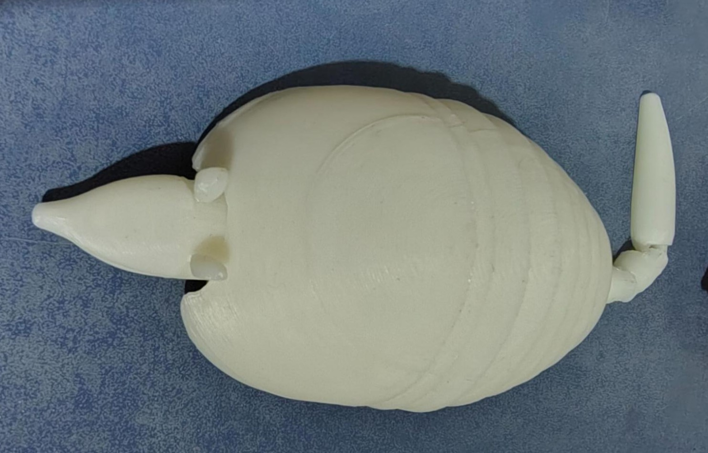
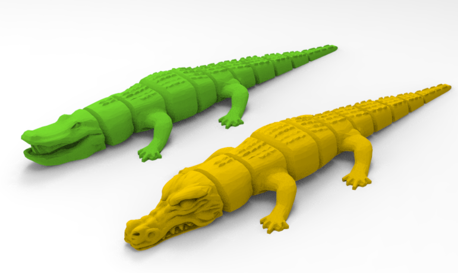
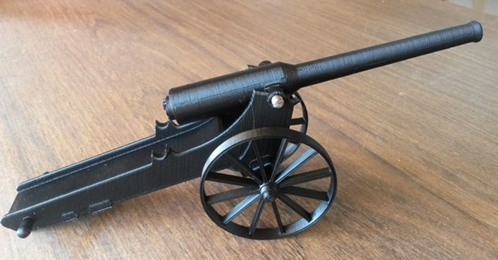
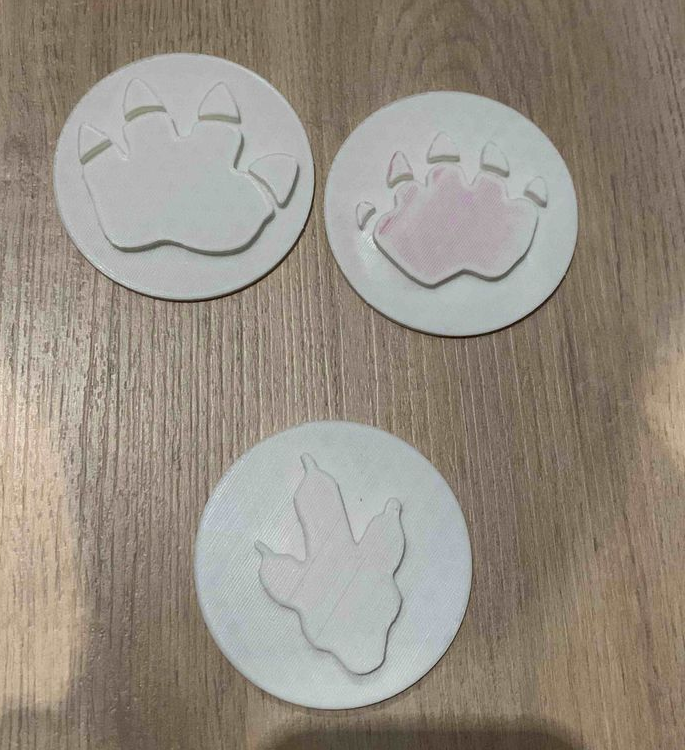
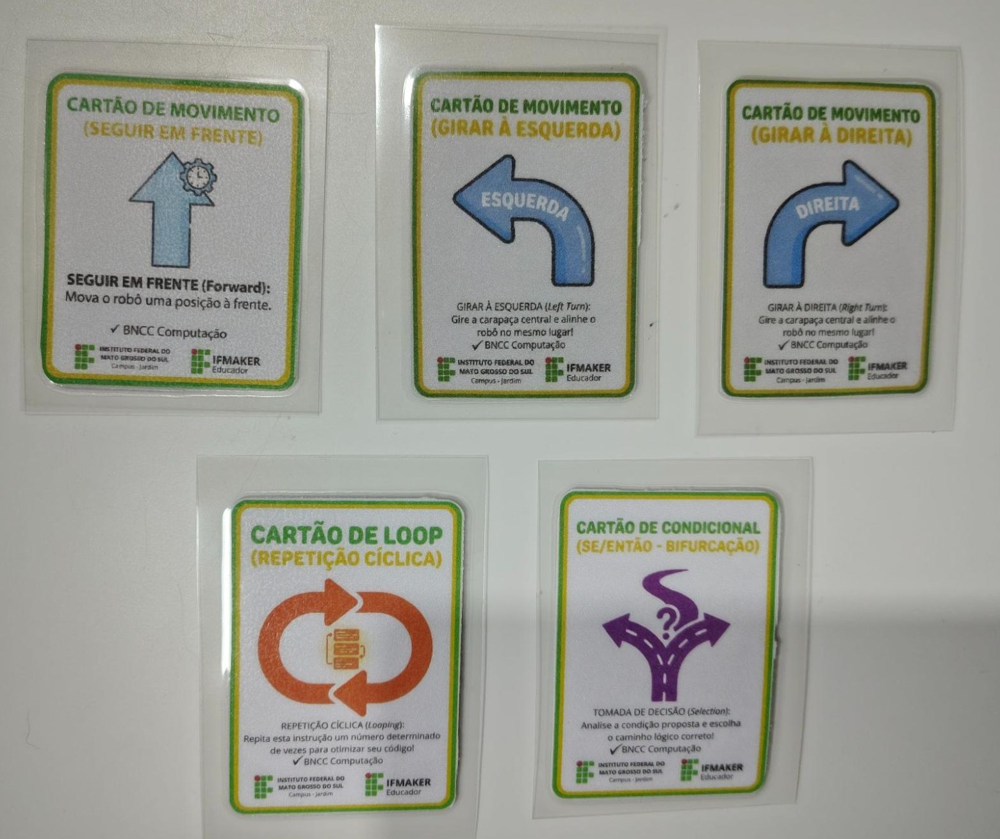
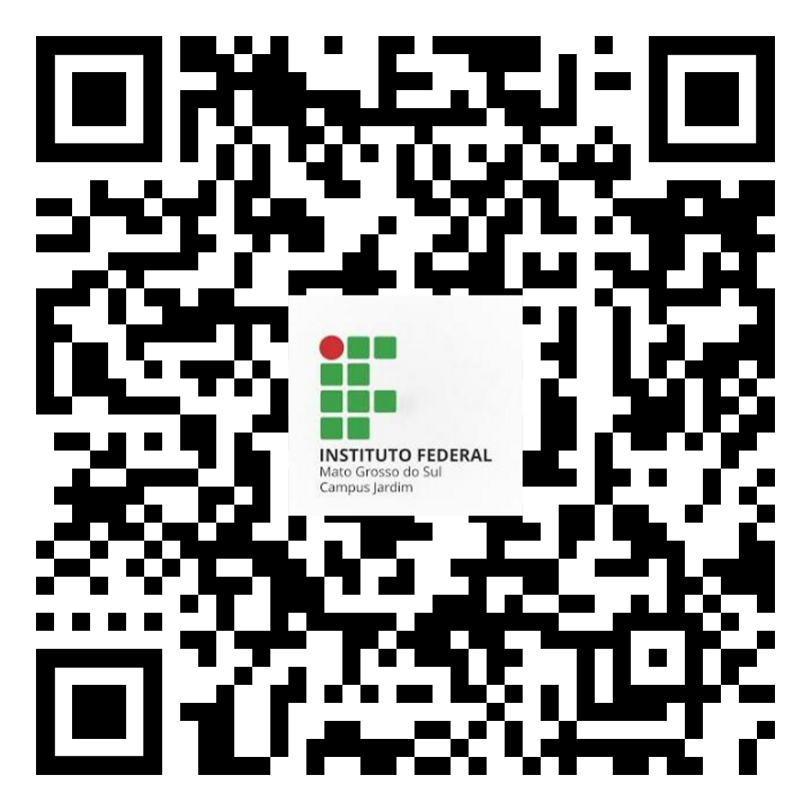

Leonardo Vinicius da Costa Gomes
Prof. Dr. Moacir Juliani
Profª. Ma. Rafaela Chivalski de Oliveira
2026
Produto educacional desenvolvido como entrega de pesquisa aplicada e extensão tecnológica do Instituto Federal de Educação, Ciência e Tecnologia de Mato Grosso do Sul (IFMS) — Câmpus Jardim, financiado e regido pelo Edital nº 054/2025 – PROPI/IFMS (IFMaker Educador) em parceria com a Escola Municipal Guilherme Corrêa da Silva (Extensão Praça dos Heróis – Nioaque/MS).
Titularidade e Direitos Patrimoniais: Os direitos morais de criação pertencem aos seus autores e pesquisadores, resguardados os direitos de participação conforme a Lei Federal nº 10.973/2004, a Política de Inovação do IFMS e o Edital nº 054/2025 – PROPI/IFMS.
Licença de Uso Aberto: Obra licenciada sob Creative Commons Atribuição-NãoComercial-CompartilhaIgual 4.0 Internacional (CC BY-NC-SA 4.0). Permitida a reprodução, impressão e adaptação para fins exclusivamente didáticos e não comerciais, desde que citada a fonte institucional e mantida a mesma licença.
Atribuição de Modelos 3D: Tatu-bola flexível por horseman3000 (licença comercial regular); Jacaré articulado por jpgillot2 (CC BY); Canhão histórico por p3ddp (CC BY-SA); Pegadas de dinossauro (carimbos) por Catokex (CC BY-NC-SA).
Apresentação
É com profundo entusiasmo pedagógico e compromisso social que entregamos à comunidade escolar e aos educadores da Educação Básica o manual Patrimônio de Nioaque em 3D: manual pedagógico de computação e cultura maker no ensino fundamental.
Esta obra consolida o resultado de uma trajetória de pesquisa aplicada e extensão tecnológica financiada pelo Edital nº 054/2025 – PROPI/IFMS (IFMaker Educador), integrando a expertise do Instituto Federal de Educação, Ciência e Tecnologia de Mato Grosso do Sul (IFMS) — Câmpus Jardim à valorosa parceria com a Escola Municipal Guilherme Corrêa da Silva (Extensão Praça dos Heróis, Nioaque/MS).
Diante dos desafios contemporâneos da Educação 4.0 e da homologação das normas da Computação na Educação Básica pela Base Nacional Comum Curricular (BNCC), este material surge para transformar a teoria curricular em práticas concretas, acessíveis e culturalmente contextualizadas. Compreendemos que ensinar Computação nos anos iniciais e finais do Ensino Fundamental não se restringe ao uso instrumental de telas ou computadores; trata-se, fundamentalmente, de capacitar as crianças na resolução crítica de problemas por meio do Pensamento Computacional.
O grande diferencial deste manual reside no resgate e na valorização das identidades culturais, geográficas, paleontológicas e históricas de Nioaque. Por meio da tecnologia de manufatura aditiva (impressão 3D) desenvolvida nos laboratórios do IFMaker, o patrimônio local ganhou forma, textura e volume. Do fascinante registro fóssil do Vale dos Dinossauros à bravura histórica da Retirada da Laguna e à rica biodiversidade do Cerrado e Pantanal com o jacaré e o tatu-bola, cada artefato tridimensional foi concebido como um autêntico "objeto para pensar com" — recurso pedagógico tangível que ancora a aprendizagem de lógica, algoritmos e decomposição.
O manual está estruturado de modo que qualquer educador, independentemente da sua área de formação original ou da infraestrutura tecnológica de sua escola, encontre segurança metodológica para mediar as atividades. O leitor encontrará aqui desde um guia prático de sobrevivência para a gestão dinâmica da sala de aula até sequências didáticas completas, integradoras e interdisciplinares, acompanhadas de matrizes de rubricas formativas e fichas prontas para impressão e uso com os estudantes.
Esperamos que este livro seja mais que um registro técnico; que ele atue como uma ponte viva entre a instituição pública de ensino profissional e tecnológico e o chão da escola municipal, inspirando docentes e estudantes a explorarem a autoria digital, a cultura maker e o orgulho pelas raízes da sua terra.
Desejamos a todos uma jornada pedagógica inspiradora e transformadora.
Coordenador de Execução e Orientador Acadêmico
Coordenadora Proponente e Orientadora Acadêmica
Pesquisadores Autores e Idealizadores Pedagógicos
Lista de Ilustrações
Lista de Quadros
Sumário
Introdução
Onde o tempo geológico do Vale dos Dinossauros, a memória da Retirada da Laguna e os pilares da Computação na BNCC se encontram no chão da escola.
O município de Nioaque, encravado no coração de Mato Grosso do Sul, constitui um laboratório vivo onde o tempo geológico e a memória cívica nacional se entrelaçam de forma ímpar, abrigando riquezas que remontam a duas dimensões temporais distintas da trajetória planetária e humana: o passado paleontológico do período Cretáceo e o passado histórico do Brasil Império. Geograficamente estratégico desde a sua fundação em 1849 por Joaquim Francisco Lopes (Marques, 2016), o município vivencia hoje um novo ciclo de protagonismo impulsionado pela Rota Bioceânica, um corredor logístico e comercial ao longo da BR-060 que promete reconfigurar o desenvolvimento regional (Bonito Net, 2026). Em sinergia com esse avanço contemporâneo, comerciantes e o poder público vêm fomentando intensamente a identidade turística de Nioaque como o "Vale dos Dinossauros" (Anunciato, 2026; Santos, 2026).
Esse orgulho local ancora-se no seu passado paleontológico inestimável, representado pelos icnofósseis e pegadas de dinossauros terópodes e ornitópodes da Formação Botucatu — marcas deixadas há cerca de 140 milhões de anos, durante o período Cretáceo, quando a região alternava entre um vasto paleodeserto de dunas e áreas fluviais (Buck; Fernandes, 2024; Câmara, 2021). O Quadro 1 sintetiza a dualidade cronológica que define a importância estratégica e científica do território nioaquense, conectando a pré-história ao desenvolvimento atual.
| Dimensão Temporal | Marco Referencial | Vestígios Físicos e Culturais | Impacto Contemporâneo |
|---|---|---|---|
| Passado Paleontológico | Formação Botucatu (Período Cretáceo, ~140 milhões de anos) | Icnofósseis e pegadas de dinossauros (Terópodes e Ornitópodes) às margens do Rio Nioaque (Buck; Fernandes, 2024; Manes; Silva; Scheffler, 2017). | Fomento do turismo temático ("Dino Experience"), comércio local e integração com a Rota Bioceânica (Anunciato, 2026; Santos, 2026). |
| Passado Histórico (Império) | Guerra do Paraguai e Retirada da Laguna (1865–1867) | Canhões e monumentos na Praça dos Heróis; ruínas e trajetos percorridos pela tropa de Camisão (Laurino, 2025; Marques, 2016). | Preservação da memória militar e cívica; estabelecimento de roteiros culturais e educação patrimonial (Taunay, 2011). |
Em paralelo à sua herança fóssil, Nioaque guarda as cicatrizes e as glórias do passado histórico do Império, tendo sido um dos palcos mais dramáticos da Guerra do Paraguai durante a épica Retirada da Laguna em 1867 (Laurino, 2025; Universidade de São Paulo, 2020). A odisseia das tropas brasileiras, assoladas pela fome, pela epidemia de cólera e pelos ataques inimigos, foi imortalizada pelos relatos do Visconde de Taunay e pela bravura de figuras incontornáveis como o herói José Francisco Lopes, o "Guia Lopes", que sacrificou sua vida e seus recursos para conduzir os sobreviventes (Marques, 2016; Universidade de São Paulo, 2020).
Os canhões centenários que repousam na Praça dos Heróis (Praça XV de Novembro) não são meros ornamentos urbanos; eles materializam a resiliência de um povo e a complexa formação das fronteiras brasileiras (Marques, 2016). A salvaguarda desses bens culturais transcende o saudosismo, afirmando-se como um dever constitucional garantido pelo Artigo 216 da Constituição Federal e pelas normativas do Instituto do Patrimônio Histórico e Artístico Nacional (Iphan), como a Portaria nº 137/2016 (Brasil, 1988, 2016). Tais diretrizes determinam que a Educação Patrimonial deve ser um processo dialógico e participativo, permitindo que a comunidade e os estudantes não apenas observem, mas ressignifiquem ativamente o passado como pilar fundamental de sua identidade (Capes, 2016; Iphan, 2024).
Para que essa imersão histórica e ambiental ganhe contornos envolventes e dialógicos no ambiente escolar, este manual pedagógico recruta a fauna local para atuar além da biologia, inserindo animais emblemáticos como personagens e verdadeiros "agentes" da nossa história. O jacaré do Pantanal (Caiman yacare) e o tatu-bola do Cerrado (Tolypeutes matacus) representam a alma da biodiversidade sul-mato-grossense, simbolizando a tenacidade, a adaptação e a resistência necessárias para sobreviver às intempéries do tempo, sejam elas as secas do paleodeserto, as marchas exaustivas do século XIX ou os desafios climáticos do presente (Alho; Camargo; Fischer, 2011; Buck; Fernandes, 2024). Ao personificar esses animais como guias narrativos da jornada educacional, o material aproxima o estudante da territorialidade, diluindo as fronteiras entre a ecologia, a paleontologia e a historiografia, e transformando a paisagem natural em uma testemunha ocular e ativa da construção de Nioaque.
O propósito culminante deste manual, concebido no esteio do projeto IFMaker, é utilizar a inovação tecnológica da impressão tridimensional (3D) para materializar esses personagens, heróis e eventos seculares. A viabilização desta obra e a produção das peças didáticas foram impulsionadas pelo fomento do Edital nº 054/2025 – PROPI/IFMS (IFMaker Educador). A iniciativa nasceu do anseio da pesquisadora idealizadora do projeto, Talita Mendonça Marques, em conjunto com o pesquisador voluntário Leonardo Vinicius da Costa Gomes, em submeter a proposta ao processo seletivo institucional. Contando com a coordenação docente da Professora Mestra Rafaela Chivalski de Oliveira e do Professor Doutor Moacir Juliani — este último à frente da coordenação de execução e da orientação direta do estágio supervisionado —, a equipe estruturou um plano de trabalho rigoroso, desenvolvido entre setembro de 2025 e setembro de 2026. Durante esse período, foram dedicadas 20 horas semanais por Talita e 10 horas semanais por Leonardo exclusivamente para estudos do projeto.
Além disso, no primeiro semestre de 2026, foram realizadas 220 horas de estágio supervisionado na escola concedente. Essa imersão prática foi fundamental para compreender a fundo a realidade docente e discente da instituição pública municipal, garantindo que os materiais produzidos tivessem a qualidade exigida e se adequassem perfeitamente ao chão de fábrica da escola. Ao integrar à prática pedagógica as réplicas táteis das pegadas do Vale dos Dinossauros e dos canhões da Praça dos Heróis, bem como do jacaré e do tatu — selecionadas por curadoria técnica de modelos abertos e materializadas em manufatura aditiva pela equipe do Laboratório IFMaker —, rompemos a barreira da abstração. Essa transposição do meio virtual para o material dialoga diretamente com os princípios do Construcionismo de Papert (2008), que defende a aprendizagem ativa estruturada na criação de "objetos para pensar com" (do inglês, objects-to-think-with). Ao adotar essa postura, o material permite que o aluno literalmente pegue a história de Nioaque nas mãos e construa significados de forma autoral.
Munidos desses artefatos tridimensionais, os estudantes são imersos nas metodologias da Cultura Maker e da Computação Desplugada — uma abordagem que, segundo Bell, Witten e Fellows (2015), possibilita o ensino dos fundamentos da Ciência da Computação de maneira lúdica e concreta, dispensando o uso de hardwares ou telas. Essa perspectiva permite desenvolver plenamente os quatro pilares do pensamento computacional estruturados por Wing (2006) (decomposição, reconhecimento de padrões, abstração e algoritmos), majoritariamente sem a necessidade de telas, muito embora alguns planos de aula utilizem tecnologias complementares, demonstrando a versatilidade do material aplicado (Escolas Conectadas, 2025; Lucas, 2025).
A estruturação pedagógica proposta não se limita à exploração de apenas um dos eixos da Base Nacional Comum Curricular - BNCC (Brasil, 2022) para a Computação. Pelo contrário, as aulas planejadas envolvem e integram de forma robusta os três eixos estruturantes estabelecidos pela BNCC: Pensamento Computacional, Mundo Digital e Cultura Digital. O projeto também utiliza como alicerce complementar o Currículo de Referência em Tecnologia e Computação do Centro de Inovação para a Educação Brasileira - CIEB (Cieb, 2021). O Quadro 2, a seguir, exemplifica essas abordagens ao correlacionar as aplicações pedagógicas de nossa obra com os fundamentos do Pensamento Computacional.
| Pilar do Pensamento Computacional (BNCC) | Aplicação Pedagógica com o "Patrimônio de Nioaque em 3D" |
|---|---|
| Decomposição | Quebrar o evento da Retirada da Laguna em etapas estratégicas menores utilizando as peças impressas em 3D para simular a logística da tropa (Laurino, 2025; Oliveira; Matos, 2024). |
| Reconhecimento de Padrões | Analisar as pegadas fósseis 3D (terópodes vs. ornitópodes) e o comportamento do jacaré e do tatu-bola para entender adaptações morfológicas e ecológicas (Buck; Fernandes, 2024; Alho; Camargo; Fischer, 2011). |
| Abstração | Filtrar informações históricas secundárias para focar nos elementos essenciais de sobrevivência do Guia Lopes, criando mapas conceituais táteis do Rio Nioaque (Marques, 2016; Rodrigues; Okuyama; Bertagnolli, 2025). |
| Algoritmos | Criar sequências lógicas de passos (instruções desplugadas) para guiar os personagens pelo cenário histórico, resolvendo gargalos de suprimentos enfrentados no Império (Lucas, 2025). |
Assim, ao solucionar os dilemas logísticos e estratégicos do passado com peças físicas e lógica estruturada, o aluno treina o raciocínio crítico para resolver os problemas do presente. Esta obra convida o educador a liderar uma experiência onde o patrimônio não é uma relíquia intocável, mas um tabuleiro interativo de saberes, forjando cidadãos que reconhecem o valor inestimável de sua terra e estão tecnologicamente preparados para moldar o seu futuro.
Para garantir o alinhamento metodológico, a estrutura deste manual está organizada de forma a guiar o leitor e educador progressivamente. O Capítulo 2 apresenta as boas-vindas ao universo maker, detalhando os três eixos da Computação na BNCC e a impressão 3D. O Capítulo 3 traz o catálogo visual completo das peças do projeto. No Capítulo 4, o educador encontrará um guia de sobrevivência prático para a mediação das atividades. O Capítulo 5 aprofunda os critérios de avaliação formativa, estruturados na Taxonomia de Bloom e apoiados em rubricas de verificação. Por fim, o Capítulo 6 apresenta o núcleo central desta obra: as sequências didáticas e os planos de aula validados em nossa regência e oficinas, abrangendo os diferentes eixos da computação. Complementarmente, os instrumentos avaliativos, as matrizes descritivas das rubricas e as folhas de registro prontas para impressão encontram-se organizados no Apêndice A.
Toda a trajetória descrita nas páginas seguintes foi desenhada a partir das observações diretas colhidas na escola concedente e focada estritamente nos objetivos do projeto IFMaker Educador, transformando o patrimônio em um tabuleiro interativo que ajuda a forjar cidadãos conscientes de sua terra e tecnologicamente preparados para o futuro.
Boas-vindas ao Universo Maker
Entendendo a Computação na BNCC, os três eixos estruturantes, o papel do laboratório IFMaker e a manufatura aditiva (impressão 3D) como ponte para a aprendizagem.
Bem-vindo(a) ao projeto IFMaker - Patrimônio de Nioaque em 3D! Este manual foi desenhado para ser o seu principal aliado pedagógico. Aqui, a tecnologia deixa de ser um bicho de sete cabeças e se torna uma ferramenta prática, lúdica e tangível. Nosso objetivo é apoiar você na missão de conectar os alunos à rica história e geografia do nosso município, utilizando a Cultura Maker e a Computação Desplugada como pontes para o aprendizado.
2.1 Mas afinal, o que é a computação na BNCC? Uma introdução desmistificada para educadores
Se a palavra "computação" assusta à primeira vista, pode respirar aliviado(a). A inclusão da Computação na BNCC não exige que você seja um programador ou que a escola tenha laboratórios de informática de última geração. A computação na educação básica trata de ensinar as crianças a pensar de forma lógica para resolver problemas, uma competência que Wing (2006) define como Pensamento Computacional, essencial para formular soluções de forma que possam ser processadas tanto por humanos quanto por máquinas. A nossa abordagem é "Desplugada": ancorados na metodologia consagrada por Bell, Witten e Fellows (2015), usamos artefatos físicos, peças em 3D e o próprio corpo do aluno no espaço da sala de aula para ensinar como a tecnologia funciona por trás das telas, dispensando a necessidade de infraestrutura de hardware.
2.2 Os três eixos da computação: pensamento computacional, mundo digital e cultura digital na prática
Para não se perder na teoria, veja como as Normas sobre Computação na Educação Básica – Complemento à BNCC (Brasil, 2022) dividem a computação e como aplicamos isso aqui:
É a habilidade de quebrar um problema grande em partes menores (Decomposição), encontrar padrões e criar um passo a passo para resolvê-lo (Algoritmo). Na prática: quando o aluno usa setas para guiar o canhão até o alvo.
Compreender como as máquinas e os dados funcionam. Na prática: quando os alunos entendem que o dinossauro de plástico que eles seguram nasceu de um código e de um modelo de computador.
Refletir sobre os impactos da tecnologia na sociedade. Na prática: usar a tecnologia para preservar marcos de memória, como a Retirada da Laguna e a Paleontologia local.
2.3 O IFMaker: inovação, educação e a conexão com a comunidade local
O laboratório IFMaker é um espaço de criatividade, prototipagem e inovação, fortemente alicerçado nos preceitos da Cultura Maker e do Construcionismo de Papert (2008), que defende a aprendizagem guiada pela construção de significados e artefatos compartilháveis. Mais do que imprimir peças, a nossa missão é fazer com que os recursos tecnológicos ultrapassem os muros da instituição e cheguem às salas de aula da educação básica. Este projeto é a ponte que une a precisão tecnológica às raízes culturais de Nioaque, transformando nossa história em ferramentas de ensino palpáveis e posicionando o aluno como um inventor ativo do seu próprio saber.
2.4 A magia da impressão 3D: como transformamos ideias virtuais em materiais reais
A impressão 3D é o coração deste projeto. Ela funciona como uma "pistola de cola quente robótica" superprecisa, que derrete um filamento plástico e constrói o objeto camada por camada. Através dessa tecnologia, conseguimos materializar o invisível: digitalizamos os obstáculos da nossa história e as pegadas de milhões de anos atrás, entregando-os diretamente nas mãos dos seus alunos, convertendo o aprendizado em um processo tátil onde as peças atuam como verdadeiros "objetos para pensar com" (objects-to-think-with).
Catálogo Visual: O que há na caixa?
Conheça os artefatos tridimensionais, os blocos de programação tangível e o inventário completo da Caixa Master do projeto IFMaker Educador.
Nesta seção, você conhecerá os recursos pedagógicos que compõem o nosso acervo. Cada peça não é apenas um brinquedo, mas um artefato intencionalmente projetado para materializar habilidades da BNCC, atuando como autênticos mediadores físicos do conhecimento. Essa intencionalidade reflete o conceito de "objetos para pensar com" cunhado por Papert (2008), evidenciando que o material palpável serve como uma âncora cognitiva fundamental para a estruturação de ideias complexas no universo infantil.
3.1 Inventário dos materiais impressos: conheça as peças do projeto
O tatu-bola e o jacaré (fauna)
Peças articuladas que representam a rica biodiversidade do nosso Pantanal e Cerrado. Ideais para aulas de Ciências sobre cadeia alimentar, ecossistemas e características fisiológicas de adaptação (como o enrolar do tatu). A materialização tátil desses animais pode ser observada na Figura 1 e na Figura 2 a seguir:


Os canhões históricos (história)
Modelos tridimensionais representativos de canhões históricos de época (produzidos a partir de design sob licença aberta Creative Commons). Embora não se configurem como uma réplica milimétrica exata da peça exposta na Praça dos Heróis, atuam como mediadores simbólicos para evocar a memória da Retirada da Laguna e da Guerra do Paraguai em Nioaque, além de servirem como peças de tabuleiro em aulas de Matemática (ângulos e distâncias), conforme exibido na Figura 3:

As pegadas de dinossauros (paleontologia)
Vestígios em tamanho real do Vale dos Dinossauros (terópodes e ornitópodes). Transformam os alunos em investigadores do passado, trabalhando texturas, deduções anatômicas e o processo de fossilização, representados na Figura 4:

Os blocos de programação tangível
Cartões e blocos com símbolos direcionais (Avançar, Girar, Repetir, Se/Então). São o "teclado desplugado" da turma, usados para criar os algoritmos e comandar as dinâmicas de raciocínio lógico no chão ou na mesa. A manipulação compartilhada desses blocos consolida a criação de um "micromundo" de aprendizagem (Papert, 2008), um ambiente concreto onde as crianças estabelecem relações diretas com problemas do mundo real e testam suas próprias lógicas de resolução sem depender de telas, tal como ilustrado na Figura 5:

3.2 Checklist de infraestrutura e logística: o inventário completo da caixa
Para garantir que a experiência maker seja fluida para turmas de até 30 alunos — divididos em 8 "Ilhas de Aprendizagem", uma disposição espacial estratégica que dialoga com as metodologias ativas de ensino, especificamente as estações de aprendizagem, garantindo que os grupos trabalhem de forma sinérgica e autônoma em torno de um eixo temático comum (Balardim, 2021) —, o kit entregue à escola foi rigorosamente dimensionado. Abaixo, detalhamos todos os itens que compõem a Caixa Master do projeto IFMaker Educador:
As peças protagonizam as aulas e ditam a divisão dos grupos na sala:
- 8 unidades do Canhão Histórico;
- 8 unidades do Jacaré Articulado;
- 8 unidades do Tatu-bola Flexível;
- 8 unidades das Pegadas de Dinossauros (Terópodes e Ornitópodes).
São 10 saquinhos Ziplock no total (sendo 8 para uso simultâneo nas ilhas e 2 de reserva exclusiva do professor). Cada Ziplock deve conter exatamente:
- 10 blocos de "Avançar";
- 6 blocos de "Virar à Direita";
- 6 blocos de "Virar à Esquerda";
- 4 blocos de "Loop" (Estruturas de Repetição);
- 4 blocos "Condicionais" (Se/Então).
Todo o material de apoio gráfico foi previamente plastificado pela equipe do projeto, consistindo em uma tecnologia durável e infinitamente reutilizável com o uso das canetas de quadro branco. O kit contém:
- 10 Matrizes Grid A4 (Tabuleiros de mesa);
- 10 Fichas 🗺️ MISSÃO: Estrategistas da Retirada (Plano 1);
- 30 Mapas de Avaliação Maker (10 Rubricas Tipo A, 10 Tipo B, 10 Tipo C);
- 10 Guias de Observação Específicos (Plano Piloto 1);
- 15 a 20 Obstáculos/Personagens 2D Plastificados (sendo 3 a 4 unidades de cada modelo: Rio Apa, Soldados, Jacaré, Guia Lopes e Canhão em 2D);
- 1 Conjunto de Ficha de Recrutamento Plastificada (Sorteadores): utilizadas pelo professor para o recrutamento aleatório, divisão justa dos esquadrões de trabalho e atribuição de funções (Mestre do Código, Robô, etc.).
A organização física e os materiais de apoio que garantem a gestão ágil da sala de aula:
- Caixa Organizadora Master: para armazenar e transportar todo o ecossistema do projeto;
- Potes Plásticos Transparentes: são os "Kits de Ilha". Cada pote receberá 1 Ziplock de código e o Artefato 3D correspondente à aula do dia;
- Pasta Sanfonada: para armazenar de forma intacta as rubricas, os grids e materiais plastificados na caixa;
- Canetas de Quadro Branco: entregues pelo professor aos grupos apenas nos momentos de escrita nos materiais plastificados;
- Blocos de Post-its: o único material de papelaria "livre" de apoio na caixa, para dinâmicas de mapas mentais e cartolinas.
As matrizes das Rubricas Curingas, os Guias de Observação e as Folhas de Atividades dos Planos Piloto 1 e 2 encontram-se disponíveis para reprodução e fotocópia no Apêndice A deste manual.
Guia de Sobrevivência do Professor
Metodologias ativas, logística de ilhas de aprendizagem, gestão do tempo, mediação socrática, celebração do "bug" e planos de contingência (B, C e D).
O ambiente escolar contemporâneo caracteriza-se por uma dinâmica vibrante e, frequentemente, imprevisível. O tempo do educador constitui um de seus recursos mais preciosos, exigindo um planejamento que alie rigor metodológico a uma extrema flexibilidade tática. A sala de aula do 5º ano do Ensino Fundamental, em particular, transborda energia investigativa e uma curiosidade inerente à fase de desenvolvimento cognitivo das crianças. Neste contexto, o presente capítulo foi meticulosamente estruturado para atuar como um "kit de primeiros socorros" pedagógico. O objetivo central é assegurar que a atividade maker e as experiências de Computação Desplugada transcorram de forma fluida, engajadora e absolutamente livre de tensões para o docente.
Longe de configurar-se como um manual rígido ou engessado em academicismos inacessíveis, este guia materializa um abraço acolhedor ao professor que atua na linha de frente da educação. Compreende-se profundamente que, no cotidiano escolar, a teoria educacional necessita de tradução imediata para uma prática exequível e transformadora. Na abordagem aqui proposta, o erro do estudante é promovido à categoria de convidado de honra do processo de aprendizagem, e a mediação do professor é reconhecida como o catalisador essencial que converte artefatos de plástico 3D em conhecimento lógico e duradouro.
Ao incorporar as estratégias de sobrevivência, gestão de tempo e organização espacial detalhadas nas seções a seguir, o educador encontra um porto seguro. O foco da regência de classe desloca-se da tentativa de controle absoluto e do silêncio passivo para a orquestração de um "caos criativo" produtivo. Nesse ambiente otimizado, as crianças resolvem problemas complexos, testam hipóteses empíricas e desenvolvem o Pensamento Computacional de maneira orgânica, lúdica e profundamente alinhada às exigências do século XXI.
4.1 O motor da sala de aula: entendendo as metodologias ativas
Para que os artefatos 3D adquiram significado pedagógico nas mãos dos estudantes do 5º ano, o modelo de ensino tradicional — centrado na transmissão passiva e unidirecional de conteúdo — cede espaço ao protagonismo das Metodologias Ativas. De acordo com Moran (2015), estas abordagens subvertem a lógica transmissiva ao incentivar o estudante a participar de forma colaborativa e intensa, aliando a ação à reflexão. Estas abordagens funcionam como os verdadeiros "motores" que colocam o aluno no banco do motorista de sua própria jornada de aprendizagem. Embora algumas nomenclaturas técnicas possam soar inovadoras ou complexas à primeira vista, observa-se que o educador contemporâneo, de forma intuitiva, já aplica muitos desses princípios em sua práxis diária. A chave para o sucesso reside em intencionalizar essas ações, utilizando-as como ferramentas sistemáticas para potencializar o engajamento e garantir a aprendizagem significativa.
A adoção destas metodologias encontra-se em total consonância com as diretrizes da BNCC para a área da Computação, a qual preconiza o desenvolvimento do pensamento computacional por meio da resolução criativa de problemas, da criação de algoritmos e do reconhecimento de padrões. A seguir, detalham-se os quatro motores metodológicos primordiais que impulsionam os planos de aula propostos neste manual.
4.1.1 A cultura maker e o construcionismo educacional
A Cultura Maker fundamenta-se no princípio empírico da aprendizagem através da construção, popularmente conhecido como "Mão na Massa" ou Do It Yourself (Faça Você Mesmo). No âmbito educacional, este movimento bebe diretamente das fontes do Construcionismo, teoria desenvolvida pelo eminente matemático e educador Seymour Papert, no Instituto de Tecnologia de Massachusetts (MIT). Papert postulava que a aprendizagem atinge seu grau máximo de efetividade quando o indivíduo está ativamente engajado na construção de um artefato tangível, que possua significado pessoal e social, uma vez que, nesta perspectiva, as crianças atuam como construtoras autônomas de suas próprias ferramentas cognitivas e realidades (Papert, 2008).
Para materializar essa teoria, Papert cunhou o conceito de "objetos para pensar com" (do inglês, objects-to-think-with), uma definição que se aplica com exatidão aos artefatos 3D implementados nestes planos de aula. Quando a criança manipula um Tatu-bola impresso em 3D ou organiza blocos de comando físicos sobre a mesa para estruturar um algoritmo, ela não está meramente absorvendo uma explicação abstrata sobre lógica; ela está, de fato, materializando o pensamento computacional. A Cultura Maker opera uma transformação identitária no estudante, que deixa de ser um consumidor passivo de informações para converter-se em um criador ativo de soluções. Nas aulas de Computação Desplugada, o espaço físico da sala de aula é transmutado em um autêntico laboratório de testes e invenções.
4.1.2 Aprendizagem baseada em projetos (PBL) e investigação
A Aprendizagem Baseada em Projetos (do acrônimo em inglês PBL - Project-Based Learning) configura-se como uma abordagem pedagógica na qual a construção do conhecimento emerge da investigação de um desafio complexo, autêntico e inerentemente envolvente, conforme estabelecido pelo Buck Institute for Education (BIE, 2008). Nesta dinâmica, subverte-se a lógica tradicional: em vez de o educador fornecer a resposta previamente mastigada, ele apresenta um problema estruturado. O estudante, por sua vez, assume o papel de um pesquisador investigativo, o que estimula o desenvolvimento do pensamento crítico, da colaboração interpessoal e da autogestão do raciocínio.
No contexto das aulas de Computação Desplugada para o 5º ano, a aplicação do PBL revela-se de forma bastante orgânica. Na aula estruturada para descobrir a dieta do dinossauro por meio da análise de suas pegadas, o educador está operando exatamente no núcleo da Aprendizagem Baseada em Projetos e na Investigação. Neste cenário, o artefato 3D transcende a função de mero adorno ilustrativo, assumindo o papel de uma pista forense crucial. O desafio central exige que a turma utilize os pilares do pensamento computacional: é necessário decompor as informações espaciais, reconhecer padrões nas distâncias das pegadas impressas e abstrair dados para formular um algoritmo que conduza à solução final. O aluno investiga ativamente as pistas para construir o saber científico e computacional de maneira indissociável.
4.1.3 Gamificação aplicada à lógica computacional
A Gamificação consiste na transposição e aplicação de mecânicas, dinâmicas e elementos estruturais orientados a jogos para contextos de não-jogo, com o desígnio expresso de engajar, motivar comportamentos e facilitar a absorção de conceitos complexos (Vianna et al., 2012). A integração de elementos lúdicos — tais como a definição de regras claras, o estabelecimento de metas tangíveis, a criação de desafios progressivos e a mecânica de tentativa e erro sem penalidade definitiva (o conceito de "vidas extras") — transforma o que seria um árduo exercício de sequenciamento em uma missão épica.
Observa-se a aplicação prática desta metodologia na aula cujo objetivo é traçar uma rota segura para fugir do jacaré. A atividade deixa de ser percebida como uma simples tarefa de sequenciamento lógico de algoritmos direcionais e transmuta-se em um desafio lúdico revestido de urgência imaginativa. A Gamificação subverte a percepção do erro: uma falha no código formulado pelos alunos não resulta em uma avaliação punitiva, mas é compreendida como um obstáculo temporal no tabuleiro, exigindo que o grupo analise a falha, realize um reboot estratégico e tente novamente. Este ciclo lúdico eleva drasticamente os níveis de dopamina, o tempo de concentração e a tolerância à frustração das crianças, fatores essenciais para a resiliência no aprendizado da Computação.
4.1.4 Rotação por estações (otimização de recursos)
A Rotação por Estações é uma modalidade oriunda do ensino híbrido (Blended Learning), amplamente fundamentada por teóricos como Horn e Staker (2015) e Bacich, Tanzi Neto e Trevisani (2015), porém perfeitamente adaptável e altamente eficaz no ecossistema desplugado. Nesta arquitetura pedagógica, o espaço físico da sala de aula é fracionado em diferentes ilhas ou estações de trabalho. Cada estação propõe uma atividade distinta, com início, meio e fim, mas que se articula de forma complementar em torno de uma temática central. Os discentes, divididos em pequenos grupos, circulam obrigatoriamente por todas essas estações após o esgotamento de um limite de tempo predeterminado pelo educador.
Trata-se de uma ferramenta pedagógica extraordinária, não apenas por fomentar a autonomia do estudante e o trabalho colaborativo em microgrupos, mas principalmente por figurar como a solução definitiva para lidar com a assimetria ou escassez de recursos materiais nas escolas públicas ou privadas. A Rotação por Estações será explorada com maior grau de detalhamento analítico na seção subsequente, dada sua importância vital para a resolução dos grandes entraves logísticos inerentes à sala de aula maker.
4.2 Logística maker: como organizar as ilhas e gerenciar o tempo
No processo de implementação de inovações tecnológicas na educação básica, uma das incertezas mais prementes e legítimas que afligem coordenações pedagógicas e o corpo docente diz respeito à infraestrutura e à gestão da sala. Questionamentos como "De que maneira o educador deve organizar fisicamente a sala para evitar a desordem?" ou "Se a escola dispuser de apenas duas ou três peças em 3D, a atividade não se esgotará rapidamente?" são recorrentes e exigem respostas pragmáticas.
A logística, no âmbito de uma aula maker, não constitui um mero detalhe administrativo periférico; ela é parte fundante e indissociável da própria metodologia. A organização espacial dita o comportamento e a postura dos estudantes. Um ambiente meticulosamente estruturado previne a dispersão de foco, estimula a sinergia da equipe e otimiza o cronograma muitas vezes exíguo do período de aula. Para sanar as dúvidas logísticas frequentemente levantadas, estabelecem-se diretrizes operacionais de eficácia comprovada.
4.2.1 A regra de ouro da arquitetura espacial: as ilhas de aprendizagem
A configuração espacial tradicional — caracterizada por fileiras de carteiras voltadas unidirecionalmente para o quadro-negro e para a figura do professor — demonstra-se profundamente ineficaz para o fomento da aprendizagem colaborativa e dialógica. O ambiente físico necessita ser reconfigurado no formato de "Ilhas de Aprendizagem", unindo as mesas para criar epicentros de colaboração e debate. A resolução para o dilema a respeito da quantidade exata de ilhas a serem formadas fundamenta-se estritamente na materialidade dos recursos disponíveis: a quantidade de ilhas de aprendizagem estruturadas na sala é definida e limitada pelo número de artefatos 3D fornecidos à escola. Esta é uma regra inflexível da logística maker desplugada.
Considerando um cenário logístico prático, se a instituição de ensino dispõe de um kit contendo precisamente cinco unidades de um artefato específico (como o Tatu-bola), o educador deverá, obrigatoriamente, montar cinco ilhas de aprendizagem. Caso a turma seja composta por trinta alunos, a classe será dividida matematicamente em cinco agrupamentos de seis estudantes. Consequentemente, cada grupo ocupará uma ilha e receberá sob sua responsabilidade um artefato central. A lógica irrefutável que sustenta esta diretriz visa garantir que toda equipe possua o material tátil no centro de suas discussões. A criação de uma sexta ilha sem o correspondente artefato 3D geraria ociosidade, frustração e a inevitável dispersão do grupo desprovido de ferramentas. Portanto, a disponibilidade do material dita soberanamente a arquitetura espacial da sala.
Para neutralizar o risco de que, em um agrupamento de seis alunos, apenas um ou dois monopolizem a manipulação do artefato enquanto os demais assumem uma postura passiva, recomenda-se a instituição de uma "Rotação de Papéis" intragrupo, inspirada diretamente nas metodologias ágeis utilizadas no desenvolvimento de software profissional e ancorada nos princípios da Aprendizagem Cooperativa (como o método Jigsaw estruturado por Aronson), na qual a responsabilidade individual de cada "especialista" é vital para o sucesso coletivo do time (Silva; Cantanhede; Cantanhede, 2020). Atribuem-se as seguintes funções rotativas:
- O Mestre do Código (Programador): responsável por liderar a seleção e o posicionamento físico dos blocos de programação tangível (setas e comandos lógicos).
- O Robô Tático (Testador): o único discente autorizado a mover o artefato 3D pelo tabuleiro demarcado, seguindo com rigor cego as instruções dispostas pelo Mestre do Código, independentemente de estarem corretas ou não.
- O Caçador de Bugs (Depurador): encarregado de realizar a análise preditiva do algoritmo, buscando antecipar falhas de colisão ou loops infinitos antes mesmo da execução.
- O Cartógrafo (Documentador): responsável pelo registro oficial da sequência lógica validada nos tabuleiros (grids), cadernos da equipe ou folhas de missão (conforme a dinâmica da aula).
Antes de entregar as peças 3D, estabeleça combinados de cuidado com o material e respeito ao tempo de fala do colega do grupo. A cada nova rodada ou fase do desafio, o professor determina que os alunos girem os papéis no sentido horário, assegurando o engajamento contínuo e a vivência de todas as facetas do desenvolvimento lógico por todos os membros da equipe.
4.2.2 Gestão do tempo: desconstruindo o mito da atividade efêmera
Uma inquietação logística igualmente recorrente por parte das equipes de gestão escolar refere-se à suposta brevidade das dinâmicas desplugadas quando amparadas por poucos recursos. A premissa de que a atividade se encerra rapidamente baseia-se em uma compreensão limitada do processo. Na Cultura Maker, o artefato 3D atua como o ponto de ignição cognitiva, não como a linha de chegada. Se um grupo concluir o desafio lógico primário de forma prematura, a intervenção correta não é o encerramento da atividade, mas sim a escalada intencional de sua complexidade. O educador dispõe de um arsenal de táticas para estender a temporalidade útil da aula, mantendo os alunos imersos no que a psicologia cognitiva denomina de estado de fluxo (flow).
Tática 1: a rotação por estações (otimização da escassez)
Em cenários onde a escassez de recursos é aguda — por exemplo, a disponibilidade de apenas dois artefatos 3D para uma classe de trinta alunos —, a implementação metodológica da Rotação por Estações consolida-se como a intervenção ideal. O professor arquitetará quatro estações simultâneas na sala, sendo que apenas duas delas exigirão o uso do material plástico restrito.
Enquanto a Estação 1 e a Estação 3 debruçam-se sobre a resolução de algoritmos espaciais utilizando os artefatos nos tabuleiros, a Estação 2 e a Estação 4 realizam atividades desplugadas complementares de alto valor cognitivo, como o registro documental em rubricas, a construção de fluxogramas no papel pardo (exercitando a decomposição de tarefas cotidianas) ou a elaboração criativa de novos obstáculos para dificultar a vida dos próximos grupos. Decorrido um lapso temporal de quinze a vinte minutos, os grupos rotacionam. Deste modo, a totalidade dos estudantes tem acesso equitativo à manipulação do artefato 3D durante a aula, o tempo regimental é preenchido com rigor acadêmico e a aprendizagem ocorre de forma fluida e diversificada.
Tática 2: a elevação do nível de depuração (debugging avançado)
Caso a turma, ou um grupo específico dentro de uma ilha, demonstre um raciocínio lógico excepcionalmente veloz e conclua o trajeto do tabuleiro rapidamente, o professor deve atuar como um injetor de complexidade. É o momento de introduzir o "Nível Hard" do desafio algorítmico. O educador aproxima-se da ilha que finalizou a tarefa e insere, fisicamente, um obstáculo surpresa no centro do caminho previamente demarcado com fita crepe (um estojo simbolizando uma rocha intransponível, ou um livro representando uma cratera).
Em seguida, o docente anuncia a nova premissa: "Atenção! Identificamos um Bug crítico. Um evento imprevisto bloqueou a rota original que vocês programaram. O desafio agora é reescrever o código tangível (as setas), promovendo um desvio seguro para que o artefato chegue ao destino, mas com uma restrição: vocês devem utilizar o menor número possível de blocos de comando". No campo da Ciência da Computação, o ato de refatorar e depurar (debugar) um código é um ciclo infinito de melhoria contínua. Ao adicionar variáveis ambientais surpresas e restrições de eficiência, o tempo de engajamento é dramaticamente ampliado e o raciocínio analítico é tensionado ao seu limite máximo.
4.3 Checklist de materiais e preparação estratégica
Considerando que a transição entre o término de uma aula e o início de outra nas escolas ocorre frequentemente em um intervalo de tempo exíguo, a preparação logística prévia é o diferencial que separa uma experiência inovadora de um estado de confusão generalizada. Para elidir qualquer possibilidade de improvisação ineficaz após o toque do sinal, é imperativo que o professor garanta a completude do seu "Kit de Regência" com antecedência.
O Quadro 3 consolida o inventário material essencial para a condução das aulas de Computação Desplugada, acompanhado das respectivas justificativas pedagógicas e logísticas que fundamentam sua inclusão:
| Categoria do Recurso | Item Específico Necessário | Justificativa Logística e Relevância Pedagógica |
|---|---|---|
| Material Central | Artefatos 3D (Quantidade Exata) | Torna-se indispensável separar a quantidade exata de peças, alinhada à projeção de divisão dos grupos. Conforme estabelecido, o quantitativo de artefatos é o norteador da formação de 'ilhas' na sala, assegurando que toda equipe tenha acesso equitativo e tátil aos "objetos para pensar". |
| Material Central | Blocos de Programação Tangível | As peças contendo as setas de comando direcional e as estruturas de repetição (loops) devem ser contadas e acondicionadas em kits individuais para cada ilha, mitigando disputas por recursos e otimizando a recolha ao final do período. |
| Infraestrutura Maker | Fita Crepe Grossa | Material basilar, versátil e de baixo custo, fundamental para a demarcação rápida de grids, tabuleiros, labirintos ou planos cartesianos improvisados, seja no piso da sala de aula ou na superfície unida das carteiras, sem danificar o mobiliário escolar. |
| Documentação Pedagógica | Mapas de Avaliação Maker, Guias e Folhas de Missão | Instrumentos pedagógicos essenciais para a sala de aula. Os Mapas de Avaliação Maker (Rubricas Curingas) e os Guias de Observação apoiam a avaliação formativa contínua pelo docente, enquanto as Folhas de Missão e cadernos orientam o registro prático dos estudantes (todos os modelos encontram-se encartados no Apêndice A). |
| Insumos de Apoio Prático | Materiais Extras (Conforme o Plano) | Ferramentas adicionais requisitadas por roteiros específicos das aulas, a exemplo de lupas para atividades investigativas (PBL), massas de modelar, transferidores para estudos angulares de giro, réguas e barbantes. |
Aconselha-se ao professor a adoção de sistemas de acondicionamento prévio, como a utilização de bandejas plásticas, potes transparentes ou caixas organizadoras para estruturar os kits de cada ilha antes do ingresso na sala. Ao iniciar a aula, o educador procede com a entrega de um recipiente fechado por grupo, delegando formalmente a responsabilidade pela integridade, contagem e guarda das peças a um dos integrantes (o Gestor de Peças). Ao término da atividade, a bandeja apenas é recebida e validada pelo docente se o inventário estiver perfeitamente completo, instilando senso de responsabilidade e cuidado com o patrimônio tecnológico compartilhado.
4.4 Dicas de mediação: o professor como guia da descoberta
A inserção de artefatos 3D e metodologias ativas altera de forma indelével e profunda o papel do educador na sala de aula. Ele transita de detentor e transmissor unilateral do conhecimento e "Dono da Resposta Certa" para a posição de arquiteto de experiências de aprendizagem, facilitador da curiosidade científica e mediador de conflitos cognitivos.
Essa reconfiguração de identidade profissional costuma apresentar desafios singulares. O principal deles reside na necessidade de o professor conter o seu ímpeto automático de fornecer respostas imediatas para apaziguar a frustração do aluno, permitindo que a criança vivencie e supere o desconforto produtivo inerente à dúvida e à formulação de hipóteses. As orientações subsequentes oferecem um arcabouço sólido para estruturar esta mediação inovadora.
4.4.1 A arte de devolver a pergunta (o método socrático maker)
No decorrer da resolução de um trajeto complexo no tabuleiro, é absolutamente previsível que os discentes, habituados à validação externa, solicitem a intervenção do educador com questionamentos ansiosos: "Professor, olha aqui, o nosso código está certo? O objeto vai chegar ao final?". A resposta de um mediador maker proficiente jamais deve se resumir a um pragmático "Sim" ou "Não".
O docente deve aproveitar a oportunidade para instigar o pensamento empírico e analítico, devolvendo a dúvida aos autores da solução por meio de um questionamento de inspiração socrática: "O que ocorre se procedermos com o teste físico desse caminho? Vamos rodar o algoritmo que vocês idealizaram e observar concretamente onde o artefato 3D irá parar?". Essa postura mediadora dialoga intrinsecamente com o conceito de Zona de Desenvolvimento Proximal (ZDP) de Vygotsky (1980), em que o educador atua como o suporte e o andaime (scaffolding) necessário para que o estudante alcance níveis de elaboração lógica que não atingiria de forma isolada.
Ao adotar esta postura dialógica, o educador transfere com maestria o ônus da validação, retirando-o de sua própria autoridade pessoal e depositando-o sobre a lógica inerente ao sistema e à ferramenta. É a realidade fenomenológica (o artefato colidindo com um obstáculo ou alcançando o destino com sucesso) que atesta a precisão do algoritmo, o que consolida uma profunda e inestimável autonomia intelectual nos educandos.
4.4.2 Celebre o "bug": a neurociência da mentalidade de crescimento
Na cultura avaliativa tradicional e punitiva de grande parte dos sistemas escolares, o erro é frequentemente estigmatizado como evidência de fracasso, insuficiência de inteligência ou falta de dedicação, o que gera bloqueios criativos severos. Em contrapartida, no universo da Ciência da Computação e da Cultura Maker, o erro — mundialmente conhecido como Bug — é considerado uma etapa indissociável, previsível e rica em dados dentro do processo de criação e refinamento de qualquer sistema, sendo a depuração (debugging) reconhecida por Papert (2008) como uma oportunidade ímpar para o autoconhecimento cognitivo do aprendiz.
Essa ressignificação do erro apoia-se também nos achados da renomada psicóloga da Universidade de Stanford, Carol Dweck (2017), que em suas exaustivas pesquisas sobre o construto do Mindset (Mentalidade), demonstra que indivíduos portadores de um "Mindset de Crescimento" compreendem visceralmente que suas habilidades e seu raciocínio lógico não são traços genéticos imutáveis, mas sim competências maleáveis que podem e devem ser desenvolvidas através do esforço direcionado e da persistência diante de falhas. Estudos e mapeamentos neurocientíficos apontam que o córtex de um indivíduo com mentalidade de crescimento apresenta uma densa atividade elétrica de sinapses quando confrontado com um erro. Este cérebro engaja-se profundamente com a falha para dissecá-la e tentar solucioná-la, promovendo altíssimos níveis de plasticidade neural, enquanto o cérebro de indivíduos com "Mentalidade Fixa" entra em estado de fuga ou paralisia.
Para instilar e enraizar esta mentalidade de resiliência nos alunos do 5º ano, o professor deve institucionalizar a celebração do Bug. Quando o artefato 3D for conduzido a um quadrado incorreto do tabuleiro devido a uma falha de lógica na disposição dos blocos tangíveis, o educador deve intervir não com correções severas, mas estimulando a turma a apontar o fato de forma lúdica e exclamar coletivamente: "Achamos um Bug!".
Esta sutil, porém poderosa, alteração semântica e comportamental retira a carga emocional opressiva do "fracasso" e a ressignifica como um evento de descoberta investigativa. Imediatamente após o anúncio da falha, o professor orienta e valida a equipe: "Excelente descoberta! O código nos deu uma informação valiosa sobre o que não funciona. Agora vocês assumem o papel de detetives. Vamos trabalhar em colaboração para depurar e corrigir essa linha lógica". A depuração de algoritmos (debugging) transmuta-se, assim, em um quebra-cabeça colaborativo, suprimindo a ansiedade de performance dos estudantes.
A liberdade intelectual inerente a uma aula ativa e construtivista exige fundações operacionais sólidas. O entusiasmo e a excitação provocados pela manipulação de artefatos inovadores e táteis podem, caso não estruturados, descambar para disputas físicas pelo material ou atropelamentos sistemáticos dos turnos de fala. Antecipando-se a esse cenário, o educador deve paralisar a atividade imediatamente antes da entrega dos kits para as ilhas e estabelecer "combinados" inegociáveis com a turma:
- Proteção Patrimonial: Esclarece-se que o artefato 3D é uma tecnologia valiosa da escola e que beneficiará outras turmas. Seu manuseio deve ser firme, constante, porém cuidadoso, evitando pressões excessivas ou quedas.
- Protocolo de Escuta Ativa: Durante o processo de tomada de decisão para a montagem do algoritmo de blocos, respeita-se rigorosamente o tempo de argumentação de cada membro do grupo. Fica convencionado que nenhuma peça de comando pode ser adicionada ou removida da mesa sem o consenso mínimo da ilha.
- Mobilidade Delimitada: Autoriza-se que os alunos fiquem de pé para obter uma visão em perspectiva de topo do tabuleiro, no entanto, devem permanecer restritos ao território físico delimitado de sua respectiva ilha, respeitando a concentração e o espaço visual dos grupos adjacentes.
4.4.3 Avaliação formativa: observando os pilares do pensamento computacional
Em metodologias ativas centradas em processos, a avaliação não pode resumir-se a testes somativos tradicionais. Ela deve ser eminentemente formativa, processual e contínua, balizada por evidências da evolução cognitiva do discente. O produto final em si (se o robô completou ou não o percurso no tempo recorde) importa significativamente menos do que a trajetória lógica desenhada pelo aluno para tentar alcançar a meta.
Recomenda-se fortemente a utilização de rubricas de observação comportamental e lógica, cujas matrizes descritivas (Tipos A, B e C) encontram-se organizadas no Apêndice A. Com este instrumento em mãos, o educador, ao circular ativamente entre as ilhas de aprendizagem, é capaz de mapear e documentar o desenvolvimento dos quatro pilares estruturantes do Pensamento Computacional — Decomposição, Reconhecimento de Padrões, Abstração e Algoritmos —, conforme amplamente teorizado por Jeanette Wing (2006) e estruturado no Brasil por pesquisadores como Christian Brackmann (2017). O Quadro 4 delineia como esses pilares abstratos se traduzem em comportamentos observáveis na sala de aula do 5º ano:
| Pilar do Pensamento Computacional | Evidência Observável pelo Professor na Ilha (Critério Formativo) |
|---|---|
| Decomposição | O grupo demonstra capacidade de fragmentar o trajeto longo e intimidador do tabuleiro em metas menores e sequenciais? (Exemplo comportamental: os alunos afirmam "vamos focar primeiro em fazer o artefato sair deste labirinto inicial, e só depois pensamos em como desviar daquele buraco"). |
| Reconhecimento de Padrões | Os estudantes identificam similaridades estruturais em diferentes partes do mapa? Constatam que um trecho do trajeto atual exige a mesma lógica de comandos já utilizada com sucesso em um desafio da semana anterior? |
| Abstração | A equipe consegue processar as informações essenciais, ignorando detalhes estéticos ou irrelevantes no tabuleiro (como o tipo de fita crepe utilizada, ou imperfeições no piso), mantendo o foco analítico exclusivo na contagem do número de "casas" e na direção dos eixos vetoriais que o artefato necessita percorrer? |
| Design de Algoritmos | O grupo é capaz de traduzir a rota mental concebida em um modelo estruturado de blocos tangíveis? Exprimem a solução do problema por meio de uma sintaxe física lógica, ordenada e inequívoca, dotada de um ponto de partida definido, uma progressão coerente e um encerramento? |
4.5 Planos de contingência estratégica (planos B, C e D)
Compreende-se que mesmo o educador munido de excelência pedagógica, operando sob o planejamento mais exaustivamente elaborado, encontra-se invariavelmente sujeito às intempéries, variáveis e fricções inerentes ao cotidiano de uma instituição escolar. O clima pode alterar-se repentinamente, uma deliberação diretiva de última hora pode suprimir metade do tempo regulamentar da aula, ou a turma pode retornar de um período de intervalo apresentando picos de energia e dissipação de foco que desafiam a gestão da classe.
O autêntico e definitivo "Guia de Sobrevivência" do docente pressupõe a aceitação dessas variáveis não como fracassos do planejamento, mas como dados de entrada que exigem flexibilidade tática. Caso o cenário real divirja substancialmente do roteiro idealizado, a postura recomendada não é o retraimento ou a frustração. O educador deve, de imediato e com tranquilidade, acionar os planos de contingência detalhados a seguir, garantindo que o núcleo instrucional da Computação Desplugada seja preservado e o objetivo de aprendizagem atingido.
Nesta hipótese, o período regular de cinquenta minutos sofreu uma redução drástica para vinte e cinco minutos, seja em decorrência de um contratempo com o transporte escolar, de um evento cívico prolongado ou de uma reunião imprevista. O professor depara-se com um tempo escasso para cumprir todo o escopo metodológico desenhado.
Ação de Contingência (Omissão Controlada): O docente suprime imediatamente, e sem prejuízo ao cerne da competência a ser desenvolvida, todas as etapas introdutórias estendidas. Omite-se a fase prolongada de contação de histórias contextuais ou as etapas de manufatura artesanal do material (como a solicitação para que as próprias crianças desenhem as grades do tabuleiro com réguas, ou pintem os cenários lúdicos no papel pardo).
Foco na Execução: A aula é direcionada, sem preâmbulos, ao núcleo inegociável do objetivo pedagógico: o desafio de estruturação de algoritmos. O educador aplica velozmente a fita crepe demarcando um grid funcional diretamente sobre as carteiras, distribui as bandejas com os artefatos 3D e lança a problemática da rota. O tempo disponível, embora reduzido, é monopolizado cem por cento pelo exercício cognitivo de alinhamento das setas tangíveis e pela execução física (teste) do código.
Nesta situação, a turma adentra a sala de aula apresentando um quadro de exaltação motora acentuada — frequentemente observado no retorno imediato de aulas de Educação Física intensas ou de recreios conflituosos. O grupo exibe dificuldades agudas de concentração, agitação periférica e dispersão acústica.
Ação de Contingência (Redução de Escala Espacial): Se o plano original contemplava a execução da atividade ampliada no chão da sala — utilizando um vasto plano cartesiano ou um labirinto demarcado com fitas coloridas no piso —, tal abordagem deve ser instantaneamente abortada. A teoria da carga cognitiva e a gestão comportamental indicam que atividades de solo propiciam e exacerbam a amplitude de movimentação corporal, agravando estados de hiperestimulação.
Foco no Confinamento Visual: O docente ordena uma imediata retração de escala. Os estudantes são redirecionados para o formato de "Ilhas" compactas (agrupando de quatro a seis carteiras padrão) e orientados a sentar. O desafio grandioso de piso é, então, convertido para um formato de tabuleiro de mesa miniaturizado. O espaço físico confinado e delimitado das bordas da carteira atua, em nível psicológico, como um contentor de movimento limitante. Esta alteração força o estreitamento do campo visual, mitiga os estímulos periféricos e facilita o contato visual direto com a equipe e com o objeto de estudo, propiciando um restabelecimento gradual da calma e devolvendo aos estudantes a concentração indispensável ao esforço lógico.
Trata-se de um evento fortuito, porém comum: a instituição de ensino comunica uma interrupção generalizada no fornecimento de energia elétrica, ou o laboratório de informática — espaço que muitos profissionais ainda julgam, de forma equivocada, ser mandatório para o ensino de disciplinas rotuladas como "Computação" — encontra-se indisponível, em manutenção técnica ou desprovido de conexão à rede mundial de computadores.
Ação de Contingência (Reforço do Princípio Desplugado): Este cenário adverso apresenta-se, na realidade, como a oportunidade máxima para que o educador ressalte e demonstre a essência ontológica e pedagógica preconizada pela BNCC Computação para os Anos Iniciais do Ensino Fundamental. A Computação Desplugada é, por definição e natureza, um campo do saber estruturalmente independente de tomadas, monitores de LED ou conectividade Wi-Fi.
Foco na Epistemologia Computacional: O educador capitaliza o momento para explanar, com clareza, que o "Pensamento Computacional" não é um produto exclusivo das máquinas contemporâneas, mas sim um método humano e sofisticado de estruturação de resolução de problemas (amparado por abstrações lógicas e formulações algorítmicas rigorosas) cuja gênese histórica antecede a própria invenção dos computadores eletrônicos. A regência prossegue normalmente, valendo-se das superfícies físicas, fitas demarcatórias, blocos direcionais tangíveis e dos artefatos 3D impressos. Através desta condução, atesta-se aos alunos — pela via empírica — que o "processador" mais poderoso, resiliente e fascinante que se encontra no interior da escola não requer tomadas: é o próprio cérebro humano em atividade colaborativa.
Síntese e considerações finais para a jornada docente
O ecossistema da sala de aula inovadora não deve ser encarado como um sistema de transmissão mecânico, mas sim como um organismo vivo e altamente responsivo. Constata-se que, quando as Metodologias Ativas são fundamentadas teoricamente, quando a logística física dos artefatos é rigorosamente administrada e quando a mediação professoral pauta-se pelo fomento intransigente de um "Mindset de Crescimento", o educador transcende sua função original. A sala de aula passa a operar sob o amparo da Aprendizagem Significativa de Ausubel, garantindo que os novos saberes tecnológicos sirvam de âncora para os conhecimentos prévios e históricos dos alunos (Moreira, 1999). Aliado a isso, o Sociointeracionismo de Vygotsky materializa-se plenamente, pois o artefato 3D, a colaboração em ilhas e a mediação do professor tornam-se os instrumentos sociais que alavancam o desenvolvimento cognitivo da criança (Vygotsky, 1980). Ele deixa de figurar apenas como o executor burocrático de um currículo formal e eleva-se à condição de arquiteto e regente de um autêntico laboratório de invenções cognitivas.
Torna-se evidente que o escopo da Computação Desplugada voltada ao 5º ano não almeja, de maneira alguma, a formação precoce e conteudista de programadores mirins de códigos sintáticos comerciais. O propósito subjacente, ancorado pela BNCC, é infinitamente mais amplo e fundamental: forjar uma geração de solucionadores de problemas que sejam analíticos, lógicos, resilientes perante as falhas e hábeis no trabalho em colaboração, provendo-os das ferramentas intelectuais para decodificar e atuar sobre as abstrações e complexidades do mundo contemporâneo.
Diante desse panorama desafiador e repleto de propósito, aconselha-se ao professor respirar fundo diante da imprevisibilidade da escola, abraçar e celebrar cada erro lógico formulado por seus alunos como uma nova pista investigativa e, de forma prioritária, permitir-se usufruir da profunda alegria de guiar mentes curiosas pelas trilhas do conhecimento.
Avaliação Maker
Avaliação formativa e processual, a cultura do "ainda não", a Taxonomia de Bloom no chão da sala de aula e as Rubricas Curingas (Tipos A, B e C).
Avaliar atividades práticas e tecnológicas exige do educador um olhar sensivelmente diferente daquele utilizado nas provas tradicionais de múltipla escolha. No ambiente de uma sala de aula maker, o processo de tentativa, erro e correção importa tanto quanto, ou até mais, que o produto final entregue pelo aluno. Neste capítulo, apresentamos as bases teóricas e práticas necessárias para que você possa documentar e avaliar o aprendizado da sua turma com total segurança, validando a evolução cognitiva de cada estudante em rigoroso alinhamento com as competências e habilidades exigidas pela BNCC.
5.1 Tangibilizando a BNCC: a mudança de paradigma na avaliação
Historicamente, o sistema educacional consolidou-se sobre os pilares da avaliação tradicional e somativa, um modelo que Luckesi (2011) critica por atuar frequentemente como uma mera "verificação" de aprendizagem — revestida de caráter classificatório e punitivo — em vez de diagnosticar o processo para promover melhorias inclusivas. Nesse formato, o foco central recai sobre o resultado exato: o aluno memoriza um conteúdo pré-determinado, realiza uma prova escrita e recebe uma nota que o classifica entre o "certo" e o "errado". Esse modelo, embora tenha sua utilidade para mensurar a retenção de informações em larga escala, frequentemente falha em capturar e valorizar as habilidades mais urgentes do século XXI, como a criatividade, a resiliência diante da frustração, o pensamento crítico e a capacidade de trabalhar em equipe.
A Avaliação Maker, por sua vez, assume uma postura essencialmente formativa e processual, dialogando diretamente com a Avaliação Mediadora proposta por Hoffmann (2014), que defende a constante ação-reflexão-ação do educador, e com a visão de Perrenoud (1999), na qual a avaliação atua como um regulador contínuo das aprendizagens em tempo real. No universo da cultura maker e do pensamento computacional, o papel do professor não é apenas conferir se o aluno conseguiu chegar do ponto A ao ponto B, mas sim investigar e mediar como ele construiu esse caminho. Enquanto na avaliação tradicional o erro costuma ser punido com a redução da nota e o trabalho individual em silêncio é a regra de ouro, na avaliação maker o erro é celebrado e acolhido como um "bug" – uma etapa natural, esperada e fundamental do ciclo de aprendizagem, convertendo-se naquilo que Hoffmann (2014) denomina de "erro construtivo". O barulho gerado pelo debate no grupo, a colaboração espontânea entre as carteiras e o ato de refazer um projeto que não deu certo na primeira tentativa são, na verdade, as maiores evidências de que o aluno está ativamente construindo conhecimento.
É nesse contexto que compreendemos a obrigatoriedade do uso de rubricas neste material didático. A grande angústia do educador ao aplicar metodologias ativas costuma ser a incerteza sobre como traduzir dinâmicas altamente lúdicas em dados pedagógicos concretos que justifiquem a nota no diário de classe. A rubrica cumpre exatamente o papel de tangibilizar a BNCC, provando para a direção escolar e para as famílias que o aluno não está apenas brincando de modelar ou andando pelo pátio, mas sim desenvolvendo operações mentais complexas, como abstração, decomposição e resolução de problemas. Esse instrumento devolve a autonomia ao professor, garantindo que ele avalie a prática com a mesma seriedade e métrica de uma avaliação convencional.
5.2 A cultura do "ainda não" e as habilidades socioemocionais
Avaliar o processo significa também mudar a linguagem dentro da sala de aula, introduzindo o que os pesquisadores como Dweck (2017) chamam de Mentalidade de Crescimento (Growth Mindset). Em uma atividade maker, se um grupo não consegue fazer a estrutura parar em pé ou se o código direcional leva o personagem para o lado errado, o estudante não recebe um "zero" ou um atestado de fracasso. O professor intervém com o poder da palavra "ainda": o aluno apenas ainda não conseguiu resolver o problema. Essa sutil mudança de vocabulário reduz drasticamente a ansiedade das crianças em relação ao fracasso, encorajando-as a depurar seus próprios erros e a testar novas hipóteses sem medo da punição.
Além das habilidades cognitivas, a avaliação maker lança luz sobre as "Soft Skills", ou seja, as habilidades socioemocionais. A BNCC é clara ao exigir o desenvolvimento integral do sujeito, e poucas metodologias são tão eficazes para isso quanto a aprendizagem baseada em projetos. Ao observar os grupos, o professor passa a avaliar atitudes fundamentais: o aluno sabe ouvir a ideia contrária do colega? Ele demonstra empatia ao dividir os materiais limitados? Ele assume uma liderança positiva ou impõe suas vontades?
Para fortalecer ainda mais essa autonomia, o universo maker encoraja fortemente a avaliação por pares e a autoavaliação. Ao invés do professor ser o único detentor do julgamento, os próprios alunos são convidados a testar as criações uns dos outros. Essas dinâmicas materializam o conceito de "Avaliação para a Aprendizagem" (Assessment for Learning) teorizado por Fernandes (2009), provando que critérios transparentes e feedbacks pedagógicos contínuos ajudam o aluno a se tornar corresponsável e intelectualmente autônomo. Quando um grupo executa o texto instrucional de outra equipe e aponta amigavelmente onde a comunicação falhou, ou quando a criança é questionada no final da aula sobre o que ela acha que fez de melhor e o que precisa melhorar na próxima semana, o aprendizado se torna muito mais significativo e democrático.
5.3 A taxonomia de Bloom no chão da sala de aula
Para garantir que a nossa avaliação não dependa de percepções subjetivas ou "achismos", toda a estrutura avaliativa deste manual foi desenhada sobre os degraus da Taxonomia de Bloom. Essa classificação, proposta originalmente por Bloom et al. (1956) e amplamente consolidada na estruturação de objetivos educacionais (Ferraz; Belhot, 2010), organiza os objetivos de aprendizagem em uma hierarquia de complexidade cognitiva. Em nossas aulas, o objetivo é que o aluno não estacione no primeiro degrau da memorização, mas que suba a escada cognitiva até alcançar a autonomia da criação. Durante a execução das missões, o professor deve observar o avanço dos alunos através de cinco aspectos progressivos:
- Conhecimento: atua como o alicerce da aprendizagem. É o momento em que o aluno consegue reconhecer, listar e nomear os elementos que compõem a aula, seja identificando visualmente um artefato histórico do município, compreendendo as características de um animal do bioma local ou nomeando a função de um bloco de código.
- Compreensão: fase em que o estudante vai além de apenas apontar as coisas; ele consegue explicar com suas próprias palavras os motivos e as regras por trás daqueles elementos, entendendo, por exemplo, por que a ordem cronológica de um evento importa ou por que um comando lógico precisa preceder o outro para que a ação funcione.
- Aplicação: o momento em que a teoria ganha vida prática. Aqui, o aluno demonstra autonomia para pegar as ferramentas disponíveis e executar a tarefa proposta, transpondo o conceito abstrato que ouviu do professor para a realidade física sobre a mesa.
- Análise: o aspecto mais crítico da cultura maker, intimamente ligado à depuração (o debugging). Quando o projeto inevitavelmente falha, o aluno que atinge esse nível cognitivo não se desespera; ele é capaz de investigar o processo, quebrar o problema em partes menores, isolar exatamente onde a falha estrutural ou lógica ocorreu e argumentar sobre como corrigi-la.
- Síntese ou Criação: o topo dessa jornada. Neste ponto de domínio, o estudante deixa de apenas replicar as orientações do manual e passa a propor soluções originais, sugerindo novos desdobramentos para a história, inventando regras adicionais de segurança para o trajeto ou encontrando formas inovadoras de estruturar o seu protótipo.
5.4 As rubricas curingas da prática maker
Sabendo o que devemos observar através da Taxonomia de Bloom, precisamos de um local claro e objetivo para registrar essas evidências. Para facilitar a rotina docente e evitar o desgaste de criar um instrumento novo a cada semana, consolidamos a avaliação deste projeto em três grandes modelos metodológicos, chamados de Rubricas Curingas. Basta o professor identificar qual é o foco principal da aula do dia e adotar a rubrica correspondente:
A Rubrica Tipo A é destinada às atividades de raciocínio lógico, tabuleiro e codificação desplugada (Eixo Pensamento Computacional). Ela foi desenhada para medir a Decomposição e Lógica (Algoritmo) na ordenação de passos, observar a resiliência do aluno na Depuração de Erros (Debugging) ao corrigir rotas, e avaliar a sua Colaboração e Empatia no trabalho em equipe e respeito aos papéis.
A Rubrica Tipo B atende às atividades voltadas para a prototipagem, modelagem e uso de materiais manuais (Eixo Mundo Digital). O foco deste instrumento é avaliar a Abstração Espacial, percebendo se o aluno consegue isolar propriedades e dar volume às peças. Além disso, ela documenta a Iteração e Resiliência Maker diante de falhas estruturais nos protótipos, e a capacidade de Transposição Físico-Digital, observando se a criança consegue conectar o artefato físico ao seu propósito lógico ou tecnológico.
Por fim, a Rubrica Tipo C foi estruturada para as atividades de registro documental, cartografia e análise (Eixo Cultura Digital). O objetivo aqui é avaliar a Estruturação Lógica do Registro na criação de manuais autossuficientes, a Organização Viso-espacial de Dados no aproveitamento estratégico de mapas e fichas, e o Rastreamento e Análise de Informação, verificando se o aluno consegue extrair dados precisos e identificar padrões ou ruídos de comunicação.
5.5 Instrumentos de coleta de evidências: a validação na prática
As Rubricas Curingas apresentadas na seção anterior formam o sistema escalável de avaliação deste manual, criado para atender de forma ágil aos 13 planos de aula do nosso catálogo. No entanto, é importante destacar que a implementação de metodologias ativas exige flexibilidade.
Como demonstração prática de como a teoria se aplica à realidade da escola, incluímos neste manual os Planos Piloto 1 e 2, que foram exaustivamente testados e validados em campo durante a execução deste projeto. Para esses dois roteiros inaugurais, você encontrará Guias de Observação (Rubricas Específicas) desenhados com critérios literais para aquelas missões exatas (como a simulação tática da Retirada da Laguna ou a modelagem do Museu Tátil).
- Para os Planos Piloto 1 e 2 (Capítulo 6.1): utilize as Rubricas Específicas fornecidas logo após os roteiros. Elas mostram como o registro ocorre de forma hiperfocada.
- Para os demais 13 Planos de Aula (Capítulos 6.2 a 6.4): utilize o sistema flexível dos Mapas de Avaliação Maker (Rubricas Curingas A, B ou C), conforme a indicação contida em cada roteiro.
Todos estes documentos – tanto as específicas quanto as curingas – estão prontos para cópia e impressão no nosso "Kit de Sobrevivência Maker", organizado no Apêndice A deste manual.
A Sequência Didática: Planos de Aula de Computação
Aulas piloto validadas e catálogo completo de 13 sequências didáticas alinhadas aos três eixos da BNCC Computação.
Prezado professor, seja bem-vindo ao coração prático deste manual. As sequências didáticas apresentadas a seguir foram rigorosamente desenhadas para atender aos objetivos de aprendizagem de Computação para o 5º ano do Ensino Fundamental, em total consonância com a BNCC e os referenciais do CIEB. Para garantir uma formação integral e estruturada, as aulas estão organizadas em torno de três grandes eixos articuladores da área: Pensamento Computacional, Mundo Digital e Cultura Digital.
É fundamental estabelecermos uma premissa metodológica que guiará todas as práticas deste capítulo: as disciplinas escolares tradicionais — como Matemática, História e Geografia — não são o objeto de estudo principal nestas aulas. Elas atuam, na verdade, como o "cenário" ou o contexto interdisciplinar da experiência. Para que o aprendizado seja palpável, lúdico e significativo para as crianças, utilizamos a rica história, a geografia e o patrimônio da cidade de Nioaque como pano de fundo de nossas dinâmicas. Esse ancoramento territorial cria um ambiente imersivo, no qual o aluno resolve desafios que dialogam diretamente com a sua realidade ou imaginário local.
Contudo, o verdadeiro protagonismo destas aulas pertence inteiramente à Ciência da Computação. Independentemente de a narrativa da aula envolver dinossauros, combates históricos ou o mapa urbano da cidade, o nosso foco absoluto é ensinar o aluno a pensar computacionalmente. Em cada missão proposta com os artefatos 3D, a sua função como educador será mediar e observar o desenvolvimento de pilares essenciais: a capacidade de criar algoritmos para coordenar ações, depurar problemas (encontrar e corrigir erros), aplicar a abstração para simplificar desafios e reconhecer padrões de dados. O convite é para formarmos, juntos, solucionadores de problemas críticos e criativos.
6.1 O projeto IFMaker na prática: aulas piloto validadas
Esta seção especial apresenta as sequências didáticas completas desenvolvidas e validadas em ambiente real de regência, demonstrando o potencial prático da Computação Desplugada e da Cultura Maker na sala de aula.
6.1.1 Plano piloto 1: computação desplugada – estrategistas da retirada
Roteiro do Professor: Diretrizes pedagógicas, gestão do tempo em 3 partes (Contextualização, Experimentação e Avaliação) e desafios práticos baseados na história de Nioaque.
Ano/ Turma: 5º Ano (Ensino Fundamental) |
Espaço /Recursos: Sala de aula com carteiras afastadas. Fita crepe para o grid no chão, cartões de comando, imagens de José Francisco Lopes e do Canhão e obstáculos 2D plastificados. |
Duração aula: 4 horas (240 min) |
Eixo: PENSAMENTO COMPUTACIONAL (Contexto Integrador: HISTÓRIA) |
Objeto do Conhecimento: Algoritmos, Decomposição, Reconhecimento de Padrões através da história local (Retirada da Laguna, transformações territoriais e conflitos em Nioaque). O que forma um povo: do nomadismo aos primeiros povos sedentarizados. |
|
(EF05HI01) Identificar os processos de formação das culturas e dos povos, relacionando-os com o espaço geográfico ocupado.
Referência CIEB opcional de apoio:
(PC05AL01) Conhecer e utilizar algoritmos com repetições.
🧩 Execução Algorítmica: Transpõe a notação simbólica das setas em ações motoras exatas no piso da sala de aula.
🐛 Depuração (Debugging): Localiza a coordenada ou a seta específica causadora de uma colisão (ex.: no Rio Apa) e substitui o comando pontual sem desfazer todo o código.
🤝 Resolução Cooperativa: Ouve o Caçador de Bugs e dialoga em baixo tom (Modo Furtivo) para definir consensos na rota.
[CG 09] - Empatia e Cooperação: Exercitar a empatia, o diálogo, a resolução de conflitos e a cooperação
[CG 01] - Conhecimento: Valorizar o patrimônio histórico e cultural local (Nioaque).
- Acolhimento e Narrativa: Reúna a turma em semicírculo e apresente a missão tática dos "Estrategistas da Retirada". Narre brevemente o desafio do Guia Lopes e das tropas brasileiras para cruzar o relevo pantaneiro e o Rio Apa sem recursos tecnológicos modernos.
- Sondagem Mediada: Provoque os alunos: "Se estivéssemos em 1867, sem satélites, telas ou sinal de GPS, como forneceríamos instruções infalíveis para que uma tropa marche com segurança no escuro?"
- Pactuação das Regras Maker: Estabeleça o "Modo Furtivo" (comunicação em tom de sussurro estratégico para não alertar o território adversário) e os cuidados com o acervo plastificado
- Instrução Técnica dos Comandos (15 min): Apresente os cartões de comando físicos. Defina Algoritmo como uma lista finita, ordenada e precisa de passos. Esclareça que o robô não tem vontade própria; ele executa estritamente a instrução recebida.
- Sorteio e Papéis Rotativos (15 min): Divida a sala em esquadrões de até 4 integrantes utilizando as fichas de recrutamento. Atribua os papéis:
- Mestre do Código: ordena os cartões.
- Robô Tático: caminha no grid executando cegamente o código.
- Caçador de Bugs: rastreia colisões.
- Cartógrafo: registra o algoritmo na folha de missão.
- Missão 1 – Desafio da Marcha Segura: Oriente as equipes com comandos imperativos:
- Decomponham o percurso do ponto de partida até a base de Nioaque.
- Enfileirem no chão a sequência física de setas (Avançar, Girar 90º à Esquerda, Girar 90º à Direita).
- Bloqueiem o início do movimento até que a conferência de código seja concluída.
- Avance, Robô Tático, executando um comando a cada leitura em voz alta do Mestre do Código.
- Missão 2 – O Sussurro do Bug e a Depuração In Loco: Durante o trajeto, insira um obstáculo surpresa no grid (o Rio Apa transbordado ou tropas inimigas em 2D). Comande:
- Interrompam o movimento imediatamente assim que detectarem o bloqueio.
- Acionem o Caçador de Bugs e exclamem: "Achamos um Bug!".
- Rastreiem a linha de cartões e identifiquem qual seta direcionou o robô para o local bloqueado.
- Depurem o código: removam o cartão com erro e insiram a nova direção de contorno sem desmanchar o restante do caminho validado.
- Rotação de Funções: Gire os papéis dos estudantes em sentido horário a cada rodada de resolução de rota.
- Algoritmo da Limpeza (10 min): Desafie a turma: "Executem nosso algoritmo final: coletem os cartões plastificados, recolham a fita crepe do piso e alinhem as carteiras aos seus postos originais".
- Sistematização e Registro (20 min): Oriente o preenchimento individual da Folha de Missão do Esquadrão (disponível no Apêndice A) e faça a colagem dos emblemas de mérito lógico no caderno.
- Roda de Conversa Socrática (15 min): Debata a positividade do erro na Ciência da Computação: "O que o bug nos ensina quando o caminho falha? Por que depurar faz de nós estrategistas melhores?" Registre as evidências no Guia de Observação
Segundo a Taxonomia de Bloom, as missões e desafios da atividade são projetados para que o aluno desenvolva as seguintes capacidades críticas, de forma progressiva:
- 1. Conhecimento
- Resposta Esperada: O aluno consegue definir com suas palavras o que é um comando e um algoritmo. (Ex: "Algoritmo é a ordem certa das setas para o herói andar").
- 2. Compreensão
- Resposta Esperada: O aluno entende a importância da ordem. (Ex: "Se eu colocar 'Avançar' antes de 'Virar', o Guia Lopes cai no rio").
- 3. Aplicação
- Resposta Esperada: O aluno utiliza os cartões físicos para resolver o trajeto proposto no chão do pátio de forma independente.
- 4. Análise
- Resposta Esperada: O aluno identifica um "bug" (erro). (Ex: "O erro está no terceiro cartão, ele deveria ter virado para a esquerda, não para a direita").
- 5. Síntese (Criação)
- Resposta Esperada: O aluno cria desafios novos. (Ex: O aluno sugere colocar mais um obstáculo e cria um novo caminho alternativo para desviar dele).
📌 Professor(a), para esta missão, utilize o Guia de Observação (Rubrica Específica - Plano Piloto 1), disponível para impressão no Apêndice A deste manual.
📋 Espaço do Aluno: Atividade Integrada – Missão do Esquadrão: A folha de planejamento de rota (algoritmo) e diário de bordo (depuração) pronta para uso do estudante. Disponível para impressão no Apêndice A deste manual.
6.1.2 Plano piloto 2: cultura maker e prototipagem – museu tátil de Nioaque
Roteiro do Professor: Diretrizes para o trabalho com modelagem física (massinha e palitos) e transição para o ambiente digital por meio do aplicativo.
Ano/ Turma: 5º Ano (Ensino Fundamental) |
Espaço /Recursos: Sala de aula com mesas forradas. Massinha de modelar de várias cores, palitos de dente (estruturas de sustentação), réplicas impressas em 3D (Canhão Histórico, Pegadas do Vale dos Dinossauros, Jacaré e Tatu-bola) |
Duração aula: 4 horas (240 min) |
Eixo: MUNDO DIGITAL / CULTURA MAKER (Contexto Integrador: ARTES VISUAIS e HISTÓRIA) |
Objeto do Conhecimento: Uso de artefatos computacionais (Cultura Digital); Materialidades (Artes Visuais); Os patrimônios materiais e imateriais da humanidade (Foco local: preservação dos marcos de memória e paleontologia de Nioaque). |
|
(EF05CO11) Identificar a adequação de diferentes tecnologias computacionais na resolução de problemas.
(EF15AR04) Experimentar diferentes formas de expressão artística (desenho, pintura, colagem, quadrinhos, dobradura, escultura, modelagem, instalação, vídeo, fotografia etc.), fazendo uso sustentável de materiais, instrumentos, recursos e técnicas convencionais e não convencionais.
(EF05HI10) Inventariar os patrimônios materiais e imateriais da humanidade e analisar mudanças e permanências desses patrimônios ao longo do tempo.
Referência CIEB opcional:
(CD05LD03) Experimentar as mídias digitais e suas convergências.
🛠️ Iteração e Resiliência Maker: Utiliza palitos de dente como armadura interna ("esqueleto") ao notar que a peça amolece ou cede à gravidade, refazendo o suporte sem abandonar a tarefa.
🤝 Cuidado e Colaboração: Segue a "Regra de Ouro" das cores no laboratório, manuseando os blocos de massinha com intencionalidade cromática e evitando a fusão indiscriminada ("cinza-lixo").
📱 Transposição Físico-Digital: Conecta o artefato esculpido às vistas do modelo digital exibido no aplicativo, registrando os ângulos na folha de catalogação.
[CG 05] - Cultura Digital: Compreender e manipular artefatos computacionais tridimensionais de forma reflexiva e investigativa.
[CG 09] - Empatia e Cooperação: Exercitar o compartilhamento equilibrado de insumos físicos e a escuta ativa durante o trabalho em equipe nas ilhas de modelagem.
- Acolhimento Sensorial e Sondagem: Apresente à turma as peças impressas em 3D do projeto (o canhão, a pegada fóssil, o tatu-bola e o jacaré). Permita o manuseio tátil em rodízio e pergunte: "Qual é a diferença entre olhar uma foto do canhão na folha de papel e segurar esta peça impressa em 3D? Como passamos de uma imagem plana (2D) para um objeto com corpo e volume (3D)?"
- Narrativa "Resgate do Patrimônio": Contextualize que Nioaque é um museu a céu aberto (da Pré-História à Retirada da Laguna). Projete imagens de referência ou desenhe no quadro os contornos ortogonais dos marcos locais.
- Pactuação das Regras Maker de Bancada: Estabeleça a "Regra de Ouro da Massinha": as cores devem ser usadas para destacar partes funcionais (ex.: corpo, patas, rodas, cano); proíba a mistura total das massinhas para evitar a formação de "cinza-lixo" inutilizável. Oriente sobre a forração das mesas e a higiene pré-lanche.
- Organização das Ilhas e Distribuição Fracionada (15 min): Agrupe os estudantes em esquadrões de até 4 integrantes nas mesas de trabalho. Entregue a cada grupo os blocos de massinha fracionados, o pote de palitos de dente e uma peça 3D de referência.
- Fase 1 – Decomposição Geométrica:
- Comande as equipes com instruções no imperativo: Observem o artefato patrimonial escolhido e identifiquem suas partes básicas.
- Decomponham o objeto: separem mentalmente o que é esfera, cilindro, cubo ou cone (ex.: o cano do canhão é um cilindro longo; as rodas são esferas achatadas).
- Modelem cada parte geométrica individualmente antes de tentar montar a peça inteira.
- Fase 2 – Estruturação de Volume e Teste de Gravidade:
- Unam as formas geométricas modeladas para compor o corpo do artefato.
- Apliquem o teste da gravidade: soltem o protótipo sobre a mesa e verifiquem se ele para em pé ou se desmorona.
- Usem os palitos de dente como "esqueleto" interno (armadura de sustentação): enfiem os palitos no centro das pernas ou eixos para garantir sustentação e rigidez mecânica.
- Fase 3 – Texturização e Detalhamento:
- Utilizem a ponta dos palitos para esculpir detalhes de superfície (ranhuras do fóssil, escamas do tatu ou ranhuras das rodas).
- Comparem o protótipo manual com o modelo digital exibido no aplicativo do celular/tablet: girem o modelo 3D digital na tela em 360 graus e verifiquem o que precisa de ajuste de escala ou proporção na massinha.
- Fase 4 – Catalogação Técnica:
- Preencham a Ficha Catalográfica do Esquadrão (Apêndice A).
- Desenhem a peça sob três perspectivas: vista de frente, vista lateral e vista superior (de topo).
- Montagem da Galeria do Museu Tátil (10 min): Cada esquadrão posiciona o seu protótipo tridimensional sobre a mesa ao lado da respectiva Ficha Catalográfica preenchida.
- Pitch do Curador Mirim (10 min): Um representante de cada equipe explica em 1 minuto: "Qual elemento histórico ou paleontológico de Nioaque reproduzimos, por que usamos os palitos na sustentação e como ele seria impresso em 3D?"
- Validação e Registro pelo Docente (10 min): O professor circula pela exposição preenchendo o Guia de Observação do Piloto 2 ou a Rubrica Tipo B, destacando os grupos que demonstraram persistência estrutural e abstração de volume.
Segundo a Taxonomia de Bloom, as missões e desafios da atividade são projetados para que o aluno desenvolva as seguintes capacidades críticas, de forma progressiva:
- 1. Conhecimento
- Resposta Esperada: O aluno consegue identificar e listar as características visuais do patrimônio escolhido (Ex: "O dinossauro terópode tem 3 dedos com garras").
- 2. Compreensão
- Resposta Esperada: O aluno explica a diferença entre um desenho 2D e um protótipo 3D.
- 3. Aplicação
- Resposta Esperada: O aluno manipula a massinha para criar formas básicas (esferas, cilindros) que compõem o modelo complexo.
- 4. Análise
- Resposta Esperada: O aluno compara o seu protótipo de massinha com o modelo exibido no aplicativo, identificando o que precisa melhorar (proporção, tamanho).
- 5. Síntese (Criação)
- Resposta Esperada: O aluno projeta e une as partes separadas da massinha para formar um artefato coeso e reconhecível, servindo de esboço para a futura impressão 3D.
📌 Professor(a), para esta missão, utilize o Guia de Observação (Rubrica Específica - Aula Piloto: Cultura Maker e Prototipagem), disponível para impressão no Apêndice A deste manual.
🏛️ Espaço do Aluno: Atividade Integrada – Ficha Catalográfica: O documento de registro técnico, contexto histórico local e desenho de observação sob três ângulos (frente, lado e cima) para uso do estudante. Disponível para impressão no Apêndice A deste manual.
6.2 Catálogo de aulas – eixo 1: pensamento computacional
As sequências didáticas reunidas neste eixo foram desenhadas para desenvolver a capacidade de decompor problemas, reconhecer padrões, abstrair propriedades essenciais e estruturar algoritmos com lógica e precisão. Utilizando as réplicas impressas em 3D do patrimônio de Nioaque e blocos tangíveis de comando, cada missão desafia o estudante a investigar hipóteses e resolver dilemas práticos de forma colaborativa e desplugada.
6.2.1 Algoritmos e depuração: navegação por coordenadas
Tema da Aula: Algoritmos e Depuração: O Tesouro Perdido do Vale dos Dinossauros
Contexto Interdisciplinar: Matemática
Artefatos 3D Utilizados: Pegadas de dinossauros + Kit de Programação Tangível (blocos de comando).
Foco na BNCC: Construção e simulação de algoritmos por meio de programação tangível e desplugada para resolver problemas (EF15CO02 / EF05CO04), utilizando o plano cartesiano e a localização por coordenadas (EF05MA14) como ferramentas de apoio.
A Ideia Prática: Os alunos utilizam um plano cartesiano gigante no chão como malha de navegação. Enquanto uma equipe posiciona os fósseis em coordenadas específicas, a outra atua como "paleontóloga robô" e deve construir e testar o algoritmo no quadro usando blocos tangíveis (avançar x, girar y) para guiar o robô até a coordenada exata, depurando a lógica da rota para não "pisar" nos obstáculos mapeados.
Pilar Computacional: Algoritmos e Depuração (criação, teste e correção de uma sequência finita e exata de passos lógicos para solucionar um problema de rota).
Ano/ Turma: 5º Ano (Ensino Fundamental) |
Espaço /Recursos: Sala de aula com carteiras afastadas (ou pátio). Fita crepe grossa para montar o plano cartesiano no chão, Réplicas 3D das Pegadas de Dinossauros e Kit de Programação Tangível (Blocos/Setas de Comando). |
Duração aula: 50min/aula |
Eixo: PENSAMENTO COMPUTACIONAL (Contexto: MATEMÁTICA) |
Objeto do Conhecimento: Algoritmos e lógica de programação desplugada. (Aplicação prática em: Plano Cartesiano e coordenadas geográficas). |
|
(EF05CO04) Criar e simular algoritmos representados em linguagem oral, escrita ou pictográfica, que incluam sequências, repetições e seleções condicionais para resolver problemas de forma independente e em colaboração.
Habilidades Integradoras de Apoio:
(PC05AL01) Conhecer e utilizar algoritmos com repetições.
(EF05MA14) Utilizar e compreender diferentes representações para a localização de objetos no plano, como mapas, células em planilhas eletrônicas e coordenadas geográficas, a fim de desenvolver as primeiras noções de coordenadas cartesianas.
🧠 Constrói a sequência lógica (algoritmo) correta usando os blocos tangíveis sem pular etapas.
🐛 Depuração e Raciocínio Coletivo: Rastreia e substitui o bloco tangível causador da colisão ou desvio em consenso com a equipe ao confrontar o movimento físico com a coordenada da pegada.
[CG 05] - Cultura Digital: Compreender, utilizar e criar tecnologias digitais de informação e comunicação de forma crítica, significativa, reflexiva e ética nas diversas práticas sociais
[CG 09] - Empatia e Cooperação: Exercitar a empatia, o diálogo, a resolução de conflitos e a cooperação
- Sondagem: O professor introduz o conceito de coordenadas espaciais, questionando como os GPS e os mapas funcionam.
- Preparação: Professores e alunos montam, com fita crepe, um grande plano cartesiano no chão da sala, numerando os eixos X (horizontal) e Y (vertical).
- Divisão de Esquadrões e Ocultação das Pistas: Divida a turma em esquadrões de exploradores. Comande o Esquadrão A: "Definam um par ordenado secreto (X, Y) e posicionem a réplica da pegada fóssil 3D exatamente sobre a interseção da malha".
- Construção Algorítmica (Modo Missão): Comande o Esquadrão B (Paleontólogos):
- Decomponham a trajetória do ponto de origem (0,0) até o ponto do fóssil.
- Montem a sequência no quadro organizando os blocos tangíveis (ex.: Avançar 3, Girar 90º à Esquerda, Avançar 4).
- Bloqueiem o acesso ao tabuleiro: nenhum passo físico pode ser dado antes da validação completa do código no quadro.
- Execução do Robô Paleontólogo: Designe um integrante para atuar como robô. Comande: "Avance casa por casa na malha, executando estritamente uma instrução tangível por vez à medida que o grupo lê o código no quadro".
- Celebração do Bug e Depuração (Debugging): Caso o robô pise fora da coordenada prevista ou colida com uma zona de risco:
- Interrompam o deslocamento imediatamente e exclamem: "Achamos um Bug!".
- Rastreiem a linha de blocos no quadro e isolem a instrução responsável pelo desvio (eixo errado ou contagem excessiva de passos).
- Substituam pontualmente o bloco defeituoso e reiniciem o teste até atingir a coordenada exata.
Segundo a Taxonomia de Bloom, as missões e desafios da atividade são projetados para que o aluno desenvolva as seguintes capacidades críticas, de forma progressiva:
- 1. Conhecimento
- Ação: O aluno identifica e nomeia os elementos básicos do plano cartesiano e os blocos de comando.
- Resposta Esperada: O aluno consegue definir, com suas próprias palavras, o que é o Eixo X, o Eixo Y e o que cada seta tangível representa. (Ex: "Essa seta significa avançar uma casa no eixo Y para chegar perto do fóssil").
- 2. Compreensão
- Ação: O aluno compreende a importância da sequenciação lógica para a localização espacial.
- Resposta Esperada: O aluno explica por que a ordem das instruções importa. (Ex: "Se eu colocar o bloco 'Avançar' antes de 'Girar', o Paleontólogo Robô vai passar reto e perder a coordenada da pegada").
- 3. Aplicação
- Ação: O aluno executa a tarefa transpondo as coordenadas para o movimento físico no tabuleiro.
- Resposta Esperada: O aluno organiza os blocos tangíveis no quadro para montar o algoritmo completo que guiará o "robô" até a coordenada exata (X, Y) da pegada escondida.
- 4. Análise
- Ação: O aluno investiga a estrutura do algoritmo em execução para identificar onde ocorreu uma falha lógica (Debugging).
- Resposta Esperada: Ao ver o colega pisar fora da rota, o aluno localiza exatamente qual passo causou o erro. (Ex: "Achamos o bug! O erro está no terceiro cartão; ele precisava ter girado 90º à esquerda, e não à direita").
- 5. Síntese (Criação)
- Ação: O aluno planeja e constrói novas rotas ou regras para aumentar a complexidade da missão.
- Resposta Esperada: O aluno propõe novos desafios para a turma. (Ex: "Vamos colocar um obstáculo na coordenada (2,3) para obrigar o Paleontólogo a criar um algoritmo maior com desvios").
📌 Professor(a), para esta missão, utilize a Rubrica Tipo A, disponível para impressão no Apêndice A deste manual.
6.2.2 Algoritmos textuais: o manual de sobrevivência
Tema da Aula: Algoritmos Textuais e Depuração: O Manual de Sobrevivência do Tatu-bola Robô
Contexto Interdisciplinar: Língua Portuguesa
Artefatos 3D Utilizados: Tatus-bola + Kit de Programação Tangível.
Foco na BNCC: Criação e simulação de algoritmos textuais e depuração de instruções (EF05CO04), utilizando o planejamento e a produção autônoma de textos instrucionais (EF05LP12) como cenário prático de apoio.
A Ideia Prática: Uma dupla atua como "programadora", redigindo um algoritmo textual (manual de instruções) com verbos no imperativo para fazer o tatu-bola 3D se enrolar. A outra dupla (que não viu a escrita) atua como "robô" e tenta executar o código textual ao pé da letra usando os blocos de comando; em caso de falha no movimento, eles realizam o "debugging" (depuração), revisando e reescrevendo o texto original juntos até funcionar.
Pilar Computacional: Algoritmos e Depuração (entendimento de que um texto instrucional é o código-fonte a ser executado, e a correção de ambiguidades funciona como resolução de bugs).
Ano/ Turma: 5º Ano (Ensino Fundamental) |
Espaço /Recursos: Sala de aula com mesas em duplas. Tatus-bola impressos em 3D articulados (projeto IFMaker), cadernos, lápis, borrachas e Kit de Programação Tangível. |
Duração aula: 50min/aula |
Eixo: PENSAMENTO COMPUTACIONAL (Contexto: LÍNGUA PORTUGUESA) |
Objeto do Conhecimento: Algoritmos e Depuração (Debugging). (Aplicação prática em: Textos instrucionais, coesão, uso de verbos no imperativo.) |
|
Habilidades Integradoras de Apoio:
(EF05LP12) Planejar e produzir, com autonomia, textos instrucionais de regras de jogo, dentre outros gêneros do campo da vida cotidiana, de acordo com as convenções do gênero e considerando a situação comunicativa e a finalidade do texto.
🤖 Execução Fiel ao Código: Atua como robô executor, realizando estritamente a ação descrita no manual recebido, sem inferir ou "adivinhar" movimentos ausentes.
🐛 Depuração Textual (Debugging): Localiza termos vagos ou ambíguos (ex.: "mexa o negócio") e reescreve a frase com precisão lexical e coesão ao constatar o travamento físico do artefato.
[CG 05] - Cultura Digital: Compreender, utilizar e criar tecnologias digitais de forma crítica e reflexiva nas diversas práticas sociais (incluindo a transposição da lógica de código para texto).
[CG 09] - Empatia e Cooperação: Exercitar a empatia, o diálogo, a resolução de conflitos e a cooperação.
- Sondagem: O professor questiona se a turma sabe como um computador lê um comando. Explica que a máquina não "pensa", ela obedece cegamente a textos instrucionais perfeitos chamados "Algoritmos".
- Preparação: Apresentação do Tatu-bola 3D. A missão é redigir o "Manual de Sobrevivência (Algoritmo)" do robô.
- Divisão de Papéis e Decomposição Mecânica: Divida a turma em duplas de desenvolvedores. Comande a Dupla A (Programadores):
- Manipulem o Tatu-bola 3D articulado e decomponham seus movimentos em etapas menores (cabeça, cauda e carapaça central).
- Redijam no caderno o "Manual de Sobrevivência", estruturando uma sequência finita de passos com verbos estritamente no imperativo (ex.: 1. Segure a cabeça; 2. Puxe a cauda para dentro; 3. Gire a carapaça central).
- Mantenham a manipulação em sigilo: a Dupla B não pode ver a peça sendo articulada antes do teste.
- Troca de Manuais e Execução Cega: Comande a troca de cadernos entre as duplas. Comande a Dupla B (Robôs): "Peguem o manual e o Tatu-bola aberto. Executem cegamente apenas o que estiver escrito no texto, passo a passo, sem tentar adivinhar ações ausentes".
- Celebração do Bug e Depuração Textual (Debugging): Caso a instrução seja imprecisa e o robô não consiga se enrolar:
- Interrompam o movimento imediatamente e exclamem: "Bug de Comunicação!".
- Devolvam o caderno aos autores apontando exatamente qual linha gerou a dúvida ou travou a peça.
- Dupla A, depurem o código: apaguem o termo confuso e reescrevam a instrução com clareza técnica até que o colega consiga fechar o tatu-bola com sucesso.
Segundo a Taxonomia de Bloom, as missões e desafios da atividade são projetados para que o aluno desenvolva as seguintes capacidades críticas, de forma progressiva:
- 1. Conhecimento
- Ação: O aluno identifica as partes móveis do artefato e lista os verbos de ação adequados para manipulá-lo.
- Resposta Esperada: O aluno consegue identificar e listar verbos de ação no imperativo necessários para dar uma ordem. (Ex: "Vire, puxe, feche, encaixe").
- 2. Compreensão
- Ação: O aluno compreende a relação direta entre a clareza de um texto instrucional e a lógica de execução de um algoritmo.
- Resposta Esperada: O aluno compreende que um texto instrucional funciona como um algoritmo. (Ex: "Se eu não escrever exatamente o que é para fazer, o colega que é o 'robô' vai montar o tatu-bola errado").
- 3. Aplicação
- Ação: O aluno transcreve o sequenciamento físico para o papel, redigindo o primeiro rascunho de instruções.
- Resposta Esperada: O aluno redige o rascunho do manual, transpondo os movimentos físicos que fez com o artefato 3D para frases estruturadas no papel usando os blocos tangíveis de suporte.
- 4. Análise
- Ação: O aluno investiga a estrutura do seu próprio texto para localizar ambiguidades quando a instrução falha na prática (debugging textual).
- Resposta Esperada: O aluno realiza o debugging textual. Ao ver a dupla falhar na execução, ele identifica onde a comunicação falhou. (Ex: "Achamos o bug! A frase 'mexa o negócio' ficou confusa, precisamos trocar por 'puxe a cauda'").
- 5. Síntese (Criação)
- Ação: O aluno reconstrói e aprimora o manual de instruções, gerando um documento autossuficiente e livre de erros lógicos.
- Resposta Esperada: O aluno reescreve e consolida o manual final com total clareza lógica, garantindo que qualquer pessoa consiga executar as instruções com sucesso.
📌 Professor(a), para esta missão, utilize a Rubrica Tipo C, disponível para impressão no Apêndice A deste manual.
6.2.3 Decomposição balística: a artilharia dos ângulos
Tema da Aula: Decomposição de Problemas: A Artilharia dos Ângulos
Contexto Interdisciplinar: Matemática
Artefatos 3D Utilizados: Canhões Históricos + Blocos de comando (girar).
Foco na BNCC: Aplicação da estratégia de decomposição e simulação de algoritmos na resolução de problemas (EF15CO04 / EF05CO04), utilizando noções de movimentação no espaço, mudanças de direção e giros (EF05MA15) como ferramentas matemáticas de apoio.
A Ideia Prática: Os alunos recebem a missão de proteger um forte imaginário e precisam decompor a ação complexa do disparo balístico em etapas lógicas menores. Para isso, eles medem a distância, calculam o grau exato com transferidores e estruturam previamente o algoritmo do tiro montando a instrução física com os blocos de comando (ex: "girar 45 graus") antes de testar a execução no alvo.
Pilar Computacional: Decomposição (quebrar a ação complexa do disparo balístico em partes menores e gerenciáveis: analisar e ajustar o ângulo correto e depois definir a distância da rota).
Ano/ Turma: 5º Ano (Ensino Fundamental) |
Espaço /Recursos: Sala de aula organizada em ilhas (a quantidade de grupos deve ser definida de acordo com o número de Canhões 3D disponíveis no acervo da escola). Canhões Históricos impressos em 3D (projeto IFMaker), Kit de Programação Tangível (Blocos de Girar/Ângulo), transferidores, réguas/fitas métricas e alvos de papel. |
Duração aula: 50min/aula |
Eixo: PENSAMENTO COMPUTACIONAL (Contexto: MATEMÁTICA) |
Objeto do Conhecimento: Decomposição de problemas complexos no Pensamento Computacional. (Aplicação prática em: Ângulos: noções, usos e medidas). |
|
(EF15CO04) Aplicar a estratégia de decomposição para resolver problemas complexos, dividindo esse problema em partes menores, resolvendo-as e combinando suas soluções.
Habilidades Integradoras de Apoio:
(EF05MA15) Interpretar, descrever e representar a localização ou movimentação de objetos no plano cartesiano (1º quadrante), utilizando coordenadas cartesianas, indicando mudanças de direção e de sentido e giros.
(EF05MA17) Reconhecer, nomear e comparar polígonos, considerando lados, vértices e ângulos, e desenhá-los, utilizando material de desenho ou tecnologias digitais
(EF05MA18) Reconhecer, nomear e comparar ângulos, medindo-os com transferidor, identificando ângulos retos, agudos e obtusos.
⚙️ Decomposição do Disparo: Fraciona o disparo balístico em subproblemas gerenciáveis (primeiro calcula a rotação angular e depois a distância linear), formalizando a instrução nos blocos tangíveis antes do tiro.
🐛 Depuração Balística (Debugging): Identifica a causa do desvio do disparo (erro na amplitude em graus ou confusão entre ângulo agudo e obtuso), recalibrando o bloco de comando pontualmente.
[CG 03] - Repertório Cultural: Valorizar as diversas manifestações artísticas e culturais, das locais às mundiais (Conexão com a História de Nioaque).
[CG 05] - Cultura Digital: Compreender, utilizar e criar tecnologias digitais de informação e comunicação de forma crítica, significativa, reflexiva e ética.
- História Local: Relembra-se a Retirada da Laguna e os Canhões da Praça dos Heróis. Explica-se que a artilharia da época exigia cálculos rigorosos de distância e inclinação.
- Introdução Matemática: Apresentação conceitual de ângulos (retos de 90º, agudos menores que 90º e obtusos maiores que 90º).
- Distribuição das Ilhas e Posicionamento do Alvo: Organize as bancadas conforme a quantidade de canhões 3D disponíveis e fixe um alvo de papel em cada mesa a uma distância e angulação aleatórias.
- Missão da Artilharia Maker (Decomposição do Tiro): Comande os artilheiros com ordens claras:
- Bloqueiem a mira no improviso: é proibido girar o canhão manualmente "a olho nu".
- Decomponham o desafio balístico em duas etapas menores e sequenciais: primeiro determinem a rotação angular da peça e depois a distância até o alvo.
- Meçam a angulação exata em relação à base usando o transferidor (identificando se o ângulo é reto, agudo ou obtuso) e a extensão do trajeto com a régua.
- Estruturem o comando físico na mesa com os blocos tangíveis (ex.: Bloco de "Girar" + post-it com "Ângulo Agudo 45º").
- Simulação Balística e Teste Físico: Alinhe uma régua longa reta à boca do canhão 3D no ângulo estipulado pela equipe e verifique a trajetória. Se a régua cruzar a área do alvo de papel, declare a missão cumprida e o algoritmo matemático validado.
- Celebração do Bug e Depuração (Debugging): Caso a régua passe longe do alvo:
- Interrompam o teste imediatamente e exclamem: "Bug na mira!".
- Investiguem a causa raiz da falha: a medição com o transferidor foi imprecisa ou a equipe confundiu ângulo agudo com obtuso?
- Recalculem o grau correto e substituam o dado no bloco tangível até que a linha da régua atinja o centro do alvo.
Segundo a Taxonomia de Bloom, as missões e desafios da atividade são projetados para que o aluno desenvolva as seguintes capacidades críticas, de forma progressiva:
- 1. Conhecimento
- Ação: O aluno identifica e nomeia os diferentes tipos de ângulos e os instrumentos de medida.
- Resposta Esperada: O aluno consegue definir, com suas próprias palavras, a diferença entre os ângulos apresentados. (Ex: "Um ângulo reto tem 90 graus, o agudo é mais fechado e o obtuso é mais aberto, e usamos o transferidor para medi-los").
- 2. Compreensão
- Ação: O aluno compreende o pilar da decomposição e como ele se aplica ao problema complexo da artilharia.
- Resposta Esperada: O aluno explica por que não basta apenas "apontar" a peça a olho nu. (Ex: "Para proteger o forte e acertar o alvo, precisamos dividir o problema em duas partes menores: primeiro medir a abertura do ângulo, depois medir a distância").
- 3. Aplicação
- Ação: O aluno utiliza os instrumentos de medição na prática e formaliza a instrução de rotação utilizando a linguagem tangível.
- Resposta Esperada: O aluno posiciona corretamente o transferidor na base do canhão 3D, faz a medição até o alvo de papel e monta o comando físico sobre a mesa (Ex: junta o Bloco de "Girar" com um post-it escrito "Ângulo Agudo 45º").
- 4. Análise
- Ação: O aluno investiga a falha no teste físico para depurar (debug) se o erro ocorreu na medição do ângulo ou na direção do giro.
- Resposta Esperada: Ao ver a régua do professor errar o alvo, o aluno refaz o processo para encontrar a falha. (Ex: "Achamos o bug! O canhão precisava ter girado em um ângulo obtuso de 120º, mas nós medimos errado e programamos para 60º").
- 5. Síntese (Criação)
- Ação: O aluno planeja novos cenários balísticos, criando posições de alvo mais complexas para testar o algoritmo dos colegas.
- Resposta Esperada: O grupo propõe um novo desafio na mesa. (Ex: "Vamos colocar o alvo no canto da ilha e adicionar uma regra em que a outra equipe precisa usar a régua duas vezes e calcular dois ângulos diferentes para conseguir acertar").
📌 Professor(a), para esta missão, utilize a Rubrica Tipo A, disponível para impressão no Apêndice A deste manual.
6.2.4 Lógica condicional (se/então): bifurcações narrativas
Tema da Aula: Lógica Condicional e Abstração: Caminhos Alternativos na Retirada da Laguna
Contexto Interdisciplinar: Língua Portuguesa
Artefatos 3D Utilizados: Canhões Históricos + Jacarés + Blocos "se/então".
Foco na BNCC: Construção e simulação de algoritmos com seleções condicionais (EF15CO02 / EF05CO04), utilizando a criação autônoma de narrativas ficcionais (EF35LP25) como cenário estrutural de apoio.
A Ideia Prática: Os alunos programam o fluxo de um conto interativo ambientado na Retirada da Laguna. Ao inserirem o encontro com jacarés na trama, utilizam os blocos de lógica condicional ("se/então") para estruturar as "bifurcações" da história (Ex: SE o jacaré atacar, ENTÃO o soldado atira com o canhão; SENÃO, ele atravessa o rio em silêncio), mapeando consequências textuais diferentes baseadas em regras lógicas.
Pilar Computacional: Abstração (isolar os momentos-chave da narrativa para focar nas regras lógicas condicionais que determinam as mudanças de rumo do sistema).
Ano/ Turma: 5º Ano (Ensino Fundamental) |
Espaço /Recursos: Sala de aula organizada em grupos. Papel pardo/cartolinas, Canhões Históricos 3D, Jacarés articulados 3D e Blocos de Programação Tangível lógicos ("Se/Então"). |
Duração aula: 50min/aula |
Eixo: PENSAMENTO COMPUTACIONAL (Contexto: LÍNGUA PORTUGUESA) |
Objeto do Conhecimento: Condicionais lógicos e Abstração. (Aplicação prática em: Produção de textos narrativos (contos de aventura), progressão temporal/espacial). |
|
(EF05CO04) Criar e simular algoritmos representados em linguagem oral, escrita ou pictográfica, que incluam sequências, repetições e seleções condicionais para resolver problemas de forma independente e em colaboração.
Habilidades Integradoras de Apoio:
(Pilar Computacional) Abstração (isolamento de características essenciais e ignorar detalhes irrelevantes na rota narrativa).
(EF35LP25) Criar narrativas ficcionais, com certa autonomia, utilizando detalhes descritivos, sequências de eventos e imagens apropriadas para sustentar o sentido do texto, e marcadores de tempo, espaço e de fala de personagens.
🔀 Lógica Condicional (Se/Então): Insere o bloco tangível no ponto crítico de decisão e redige dois ramos narrativos autônomos e coerentes com a condição estabelecida ("Então" vs. "Senão").
🐛 Depuração Literária (Debugging): Rastreia e corrige quebras de coerência ou de continuidade temporal ao simular a leitura do conto ramificado produzido pelo grupo vizinho.
[CG 03] - Repertório Cultural: Valorizar as diversas manifestações artísticas e culturais, das locais às mundiais (Literatura baseada na História Local de Nioaque).
[CG 04] - Comunicação: Utilizar diferentes linguagens, bem como conhecimentos da linguagem verbal, para se expressar e partilhar informações.
- História Local e Literatura: Contar brevemente a odisseia militar da Retirada da Laguna pelo Pantanal. Explicar o que é um texto narrativo e apresentar o formato dos "Livros-Jogo" interativos (Onde o leitor toma decisões).
- Introdução Lógica: Apresentar o bloco físico "Se/Então" (If/Then). Explicar que toda aventura possui escolhas e consequências.
- Planejamento do Conto (Abstração do Enredo): Organize as equipes com as cartolinas e as peças 3D do canhão e do jacaré. Comande:
- Esbocem no papel o "esqueleto" do conto, traçando a linha de avanço da tropa pelo pantanal até o clímax.
- Posicionem os artefatos 3D como marcos físicos do cenário nos momentos de perigo iminente.
- Isolem detalhes secundários, focando estritamente no dilema de sobrevivência dos soldados.
- Estruturação da Bifurcação Condicional: Comande os autores:
- Insiram o bloco tangível "Se/Então" sobre a cartolina exatamente no instante da tomada de decisão.
- Definam a regra lógica condicional (ex.: SE o soldado avistar o jacaré...).
- Redijam dois ramos narrativos distintos e autônomos: um parágrafo para a consequência verdadeira (ENTÃO dispara o canhão...) e outro para o caminho alternativo (SENÃO atravessa em silêncio...).
- Leitura Interativa do Livro-Jogo: Promova a troca de contos entre as bancadas. Comande as equipes leitoras: "Leiam a história recebida e, ao chegarem à bifurcação do bloco 'Se/Então', tomem uma decisão manipulando as peças 3D para acionar o final correspondente".
- Celebração do Bug e Depuração Literária (Debugging): Caso o leitor perceba incoerência (ex.: o leitor escolheu o silêncio, mas o texto seguinte menciona o estrondo do disparo):
- Interrompam a leitura imediatamente e exclamem: "Bug na história!".
- Identifiquem a quebra de nexo lógico entre a condição escolhida e o parágrafo executado.
- Autores, depurem o enredo: revisem a redação e ajustem a coesão gramatical para que as duas ramificações façam sentido pleno.
Segundo a Taxonomia de Bloom, as missões e desafios da atividade são projetados para que o aluno desenvolva as seguintes capacidades críticas, de forma progressiva:
- 1. Conhecimento
- Ação: O aluno identifica os elementos básicos de um texto narrativo e reconhece a função de um comando lógico condicional.
- Resposta Esperada: O aluno consegue definir, com suas próprias palavras, o que é o conflito da história e como funciona a regra do bloco físico. (Ex: "A história precisa de um problema, e o bloco 'Se/Então' serve para dar duas opções de escolha para o soldado enfrentar o jacaré").
- 2. Compreensão
- Ação: O aluno compreende como a lógica condicional altera a progressão temporal e a coesão do texto.
- Resposta Esperada: O aluno explica por que cada escolha precisa de uma consequência lógica diferente. (Ex: "Se o soldado escolher atirar com o canhão, o parágrafo seguinte precisa mostrar que o barulho espantou os animais, senão a história perde o sentido").
- 3. Aplicação
- Ação: O aluno transpõe o planejamento abstrato (o esqueleto da história) para a produção escrita, utilizando os artefatos 3D como guias físicos no papel.
- Resposta Esperada: O aluno estrutura a introdução do conto no papel pardo, posiciona o bloco tangível "Se/Então" no momento do clímax e redige corretamente os dois parágrafos alternativos correspondentes a cada decisão.
- 4. Análise
- Ação: O aluno revisa a lógica e a coesão textual da narrativa ramificada durante a leitura interativa cruzada (debugging literário).
- Resposta Esperada: Ao jogar a história do outro grupo, o aluno percebe se as transições fazem sentido ou se há falhas lógicas. (Ex: "Achamos um bug na história! O leitor escolheu atravessar em silêncio no 'SENÃO', mas o texto continua como se o canhão tivesse disparado. Precisamos corrigir essa parte").
- 5. Síntese (Criação)
- Ação: O aluno elabora uma narrativa ficcional de aventura interativa completa, integrando harmoniosamente elementos do patrimônio histórico local, a fauna e o pensamento computacional.
- Resposta Esperada: O aluno consolida o "Livro-Jogo", entregando um conto com introdução envolvente, um momento de bifurcação lógica perfeitamente sinalizado e desfechos coerentes para quem for interagir com o texto.
📌 Professor(a), para esta missão, utilize a Rubrica Tipo C, disponível para impressão no Apêndice A deste manual.
6.2.5 Reconhecimento de padrões e loops: o museu desplugado
Tema da Aula: Reconhecimento de Padrões e Repetição (Loops): O Museu Desplugado de Nioaque
Contexto Interdisciplinar: História
Artefatos 3D Utilizados: Canhões Históricos + Pegadas de Dinossauros + Blocos "Repetir".
Foco na BNCC: Construção e simulação de algoritmos com repetições e organização de informações (EF15CO02 / EF15CO01), utilizando o inventário de patrimônios materiais e imateriais (EF05HI10) como cenário de apoio curatorial.
A Ideia Prática: A turma atua como curadora de um museu e aplica o reconhecimento de padrões para classificar as peças 3D nos acervos de "Patrimônio Paleontológico" e "Patrimônio Histórico". Ao construírem a exposição física na mesa, os alunos criam fichas catalográficas e utilizam blocos lógicos tangíveis de "Repetir" (loops) para estruturar a linha do tempo. Essa organização otimiza a exibição e evita instruções redundantes, demonstrando que, independentemente da época — de milhões de anos atrás a 1867 —, a cidade de Nioaque é um ciclo contínuo de descobertas e histórias importantes.
Pilar Computacional: Reconhecimento de Padrões e Repetição (identificar características comuns para categorizar conjuntos de dados históricos, agrupando-os de forma eficiente por meio de loops lógicos).
Ano/ Turma: 5º Ano (Ensino Fundamental) |
Espaço /Recursos: Sala de aula com mesas dispostas em semicírculo. Canhões Históricos 3D, Pegadas de Dinossauros 3D, Blocos de Programação Tangível ("Repetir" / Loops), fichas de cartolina (fichas catalográficas) e canetas. |
Duração aula: 50min/aula |
Eixo: PENSAMENTO COMPUTACIONAL (Contexto: CIÊNCIAS HUMANAS - HISTÓRIA) |
Objeto do Conhecimento: Conceito de Repetição (Loops), Reconhecimento de Padrões e Organização estruturada de dados. Os patrimônios materiais e imateriais da humanidade (Foco: inventário e critérios de seleção dos marcos de memória de Nioaque). |
|
(EF15CO01) Identificar as principais formas de organizar e representar a informação de maneira estruturada (matrizes, registros, listas e grafos) ou não estruturada (números, palavras, valores verdade).
Habilidades Integradoras de Apoio:
(PC05AL01) Conhecer e utilizar algoritmos com repetições.
(EF05HI10) Inventariar os patrimônios materiais e imateriais da humanidade e analisar mudanças e permanências desses patrimônios ao longo do tempo.
🔁 Estruturação de Repetição (Loops): Utiliza o bloco tangível "Repetir" para otimizar a montagem da linha do tempo da exposição (ex.: Repetir 3x [Exibir Fóssil]), eliminando comandos redundantes.
🐛 Depuração Curatorial (Debugging): Identifica e reposiciona peças atribuídas à era errada ou ajusta a contagem do multiplicador do loop ao auditar a exposição do grupo vizinho.
[CG 05] - Cultura Digital: Compreender, utilizar e criar tecnologias digitais de informação e comunicação de forma crítica, significativa, reflexiva e ética nas diversas práticas sociais.
[CG 07] - Argumentação: Argumentar com base em fatos, dados e informações confiáveis para formular, negociar e defender ideias e pontos de vista comuns.
- Introdução Histórica: O professor apresenta o conceito de patrimônio e a importância de Nioaque como um local único que preserva duas eras distintas: a Pré-História (Vale dos Dinossauros) e a História Imperial/Militar (Retirada da Laguna).
- Desafio do Padrão: Explica-se que um curador de museu precisa encontrar "padrões" (características semelhantes) para organizar o acervo.
- Curadoria e Reconhecimento de Padrões: Organize as bancadas em formato de ateliê de museu. Comande as equipes de curadores:
- Examinem os artefatos 3D (Canhões e Pegadas) e identifiquem características semelhantes de formato, materialidade e época.
- Agrupem as peças em dois grandes acervos patrimoniais: Patrimônio Paleontológico (Cretáceo) e Patrimônio Histórico (Retirada da Laguna).
- Preencham as fichas catalográficas em cartolina, registrando época presumida, material e o significado sociocultural de cada marco de memória de Nioaque.
- Estruturação Algorítmica da Exposição (Modo Loop): Comande a montagem da linha do tempo:
- Organizem a disposição das mesas em ordem cronológica de Nioaque.
- Otimizem o algoritmo de exibição: em vez de listar cada peça individualmente, apliquem os blocos tangíveis de "Repetir" para criar laços lógicos (ex.: Repetir 3x [Exibir Fóssil] seguido de Repetir 2x [Exibir Canhão]).
- Auditoria Curatorial e Depuração (Debugging): Caso uma peça imperial esteja dentro do laço paleontológico ou o número do loop não coincida com os artefatos da bancada:
- Interrompam a visitação imediatamente e exclamem: "Bug no acervo!".
- Rastreiem a inconsistência de dados históricos ou a contagem equivocada do laço.
- Curadores, depurem a exposição: reajustem os blocos de repetição e reposicionem as fichas catalográficas corretas.
Segundo a Taxonomia de Bloom, as missões e desafios da atividade são projetados para que o aluno desenvolva as seguintes capacidades críticas, de forma progressiva:
- 1. Conhecimento
- Ação: O aluno identifica os artefatos 3D, nomeia as eras correspondentes a eles e reconhece a função do bloco "Repetir".
- Resposta Esperada: O aluno consegue definir, com suas próprias palavras, a diferença entre os acervos e o comando lógico. (Ex: "A pegada é um patrimônio paleontológico e o canhão é histórico. O bloco repetir serve para não escrevermos a mesma instrução várias vezes").
- 2. Compreensão
- Ação: O aluno compreende o conceito de Reconhecimento de Padrões e a utilidade da lógica de repetição (loops) na organização de informações.
- Resposta Esperada: O aluno explica a lógica por trás da curadoria do museu. (Ex: "Nós agrupamos todas as pegadas juntas porque elas seguem um padrão e são da mesma época. Então, podemos usar um 'loop' para exibir todas de uma vez").
- 3. Aplicação
- Ação: O aluno preenche as Fichas Catalográficas com os dados reais do acervo e utiliza os blocos físicos para estruturar a apresentação da exposição na mesa.
- Resposta Esperada: O aluno registra a época e o significado do objeto nas fichas de cartolina e posiciona corretamente o bloco tangível de repetição ao lado do grupo de artefatos (Ex: Bloco Repetir 3x ao lado das três pegadas).
- 4. Análise
- Ação: O aluno revisa a curadoria e a estrutura lógica da exposição para identificar erros conceituais ou de programação (debugging de dados).
- Resposta Esperada: O aluno investiga a mesa e percebe falhas na classificação ou no loop. (Ex: "Achamos um bug na exposição! O canhão foi colocado junto do 'Repetir' paleontológico, mas ele é do Império, precisamos mudar a ficha dele para patrimônio histórico").
- 5. Síntese (Criação)
- Ação: O aluno organiza, consolida e propõe a estrutura final do "Museu Desplugado", unindo História e Pensamento Computacional de forma visualmente clara.
- Resposta Esperada: O aluno entrega a exposição montada na mesa de maneira autossuficiente, com as fichas precisas e os loops bem estruturados, garantindo que qualquer "visitante" do museu entenda a linha cronológica de Nioaque perfeitamente.
📌 Professor(a), para esta missão, utilize a Rubrica Tipo C, disponível para impressão no Apêndice A deste manual.
6.2.6 Algoritmos e sequenciamento tático: rota da retirada
Tema da Aula: Algoritmos e Depuração: Rota Desplugada da Retirada da Laguna
Contexto Interdisciplinar: História
Artefatos 3D Utilizados: Canhões Históricos + Jacarés + Kit de Programação Tangível.
Foco na BNCC: Construção, simulação e depuração de algoritmos representados em linguagem pictográfica/simbólica (EF15CO02 / EF05CO04), tendo os processos de formação cultural e ocupação do espaço geográfico (EF05HI01) como cenário de apoio.
A Ideia Prática: Em um mapa sobre a mesa, os alunos programam o algoritmo da rota de fuga do exército (canhão) utilizando setas tangíveis. Durante a execução, o professor adiciona obstáculos surpresa (jacarés 3D ou intempéries). A cada evento, o grupo precisa pausar a execução, depurar a sequência lógica (debugging) e reprogramar as setas direcionais para desviar do perigo, simulando sistemicamente as dificuldades táticas enfrentadas na Guerra do Paraguai.
Pilar Computacional: Algoritmos e Depuração (planejamento da rota através de passos lógicos sequenciais e a correção ativa do código tático ao encontrar novos obstáculos).
Ano/ Turma: 5º Ano (Ensino Fundamental) |
Espaço /Recursos: Sala de aula com mesas agrupadas em ilhas de aprendizagem. Mapa geohistorico em formato ampliado sobre a mesa (Simulador da Retirada da Laguna), Canhões Históricos 3D, Jacarés 3D e Kit de Programação Tangível (setas direcionais). |
Duração aula: 50min/aula |
Eixo: PENSAMENTO COMPUTACIONAL (Contexto: CIÊNCIAS HUMANAS - HISTÓRIA) |
Objeto do Conhecimento: Sequenciamento e Algoritmos. O que forma um povo: as dinâmicas populacionais, o espaço geográfico ocupado e as transformações territoriais decorrentes de conflitos militares ou fluxos migratórios. |
|
(EF05CO04) Criar e simular algoritmos representados em linguagem oral, escrita ou pictográfica, que incluam sequências, repetições e seleções condicionais para resolver problemas de forma independente e em colaboração.
Habilidades Integradoras de Apoio:
(EF05HI01) Identificar os processos de formação das culturas e dos povos, relacionando-os com o espaço geográfico ocupado.
🗺️ Contextualização Geo-histórica: Identifica os acidentes geográficos e limites do terreno pantaneiro no simulador (grid de mesa), justificando a escolha do caminho com base nas barreiras territoriais reais da Retirada da Laguna.
🐛 Depuração Tática In Loco (Debugging): Interrompe o avanço imediatamente ao encontrar uma variável surpresa (jacaré 3D ou cheia simulada), isolando a seta de comando incorreta e reprogramando o desvio pontual sem reiniciar todo o trajeto.
[CG 02] - Pensamento Científico, Crítico e Criativo: Exercitar a curiosidade intelectual e recorrer à abordagem própria das ciências, incluindo a busca de soluções para problemas complexos.
[CG 10] - Autonomia e Responsabilidade: Agir pessoal e coletivamente com autonomia, responsabilidade, flexibilidade e resiliência, tomando decisões com base em princípios éticos.
- Narrativa Engajadora: Os professores introduzem a odisseia de José Francisco Lopes (o Guia Lopes) e o trágico episódio da Retirada da Laguna (1867) no contexto da Guerra do Paraguai, destacando a importância estratégica do rio Apa e de Nioaque.
- Explanação Teórica: Debate-se o impacto do terreno e da fauna pantaneira (representada pelo jacaré) na movimentação das tropas.
- Distribuição do Simulador e Organização das Ilhas: Entregue a cada equipe o simulador tático com grid (mapa de mesa da Retirada da Laguna), a réplica do Canhão 3D e o conjunto de setas tangíveis de comando.
- Missão da Marcha Segura (Construção Algorítmica): Comande os estrategistas com ordens no modo imperativo:
- Examinem o ponto de partida das tropas e o destino em Nioaque, mapeando os banhados e cursos d'água no tabuleiro.
- Decomponham o trajeto em etapas sequenciais de avanço e giro angular.
- Enfileirem as setas direcionais sobre a mesa, montando o algoritmo completo antes de tocar no artefato.
- Validem o código em conjunto: o canhão só pode marchar após a conferência e o consenso da equipe.
- Execução Tática e Injeção de Obstáculo: Comande: "Mexam o Canhão 3D casa por casa no grid executando estritamente uma seta por vez". No meio da marcha, insira uma barreira física surpresa no caminho (posicione o Jacaré articulado 3D simulando um banhado pantaneiro intransitável ou bloqueio militar).
- Celebração do Bug e Depuração Tática (Debugging): Diante do bloqueio inesperado:
- Interrompam o avanço imediatamente e exclamem: "Bug na rota histórica!".
- Rastreiem a sequência de setas e isolem a instrução que colidiria com o jacaré ou a cheia do rio.
- Substituam pontualmente o comando por novas setas de manobra, contornando a ameaça sem desfazer o trecho seguro já percorrido.
- Prossigam na execução até alcançar a segurança territorial de Nioaque.
Segundo a Taxonomia de Bloom, as missões e desafios da atividade são projetados para que o aluno desenvolva as seguintes capacidades críticas, de forma progressiva:
- 1. Conhecimento
- Ação: O aluno identifica os elementos históricos no mapa (tropas, terreno) e reconhece a função das setas de comando tangíveis.
- Resposta Esperada: O aluno consegue definir, com suas próprias palavras, quem a peça representa e o que cada seta direcional faz no simulador. (Ex: "O canhão é o exército do Guia Lopes, e essa seta indica que a tropa deve avançar um espaço no mapa")
- 2. Compreensão
- Ação: O aluno compreende as dificuldades geográficas e táticas da Retirada da Laguna e como a ordem lógica dos comandos determina a segurança da tropa.
- Resposta Esperada: O aluno explica por que a sequência precisa ser rigorosa para evitar perigos históricos. (Ex: "Se eu colocar o bloco de 'Avançar' antes do de 'Virar', o exército vai marchar direto para o banhado e ficar preso").
- 3. Aplicação
- Ação: O aluno utiliza as setas físicas sobre a mesa para planejar e executar a rota de fuga através do mapa com grid (simulador).
- Resposta Esperada: O aluno sequencia e posiciona corretamente os cartões direcionais, construindo um algoritmo completo que guia a peça do canhão do ponto de partida até a cidade de Nioaque, evitando os obstáculos originais do tabuleiro.
- 4. Análise
- Ação: O aluno investiga a rota para realizar a depuração (debugging tático) imediata quando o cenário sofre uma intervenção não prevista (adição do jacaré 3D).
- Resposta Esperada: O aluno localiza rapidamente onde a rota tornou-se perigosa. (Ex: "Bug na rota histórica! O professor colocou um jacaré na frente. O erro agora está na terceira seta, precisamos tirá-la e desviar a tropa pela direita").
- 5. Síntese (Criação)
- Ação: O aluno propõe cenários táticos novos, alterando as posições de risco para desafiar os algoritmos de planejamento de outras equipes.
- Resposta Esperada: O grupo cria desafios extras baseados na narrativa. (Ex: "Vamos colocar dois jacarés bloqueando a ponte do rio Apa para obrigar a outra equipe a construir um algoritmo mais longo dando a volta no mapa").
📌 Professor(a), para esta missão, utilize a Rubrica Tipo A, disponível para impressão no Apêndice A deste manual.
6.2.7 Decomposição de sistemas: a teia alimentar
Tema da Aula: Decomposição e Lógica Condicional: O Código da Natureza na Teia Alimentar
Contexto Interdisciplinar: Ciências da Natureza
Artefatos 3D Utilizados: Tatu-bola + Jacaré + Blocos "Se/Então".
Foco na BNCC: Aplicação da estratégia de decomposição e simulação de algoritmos com seleções condicionais (EF15CO04 / EF15CO02 / EF05CO04), articulando a revisão de relações alimentares e desequilíbrios ecológicos pantaneiros como cenário contextualizador.
A Ideia Prática: Os alunos decompõem a complexidade do bioma regional e programam a cadeia alimentar utilizando blocos lógicos. Ao definirem regras de comportamento animal (ex: "SE o jacaré está com fome, ENTÃO ele caça peixes") e mecanismos de defesa com o tatu-bola 3D ("SE o predador chegar perto, ENTÃO ative a carapaça"), eles simulam sistemicamente as interações naturais.
Pilar Computacional: Decomposição (quebrar a imensa complexidade de um ecossistema inteiro em regras lógicas condicionais menores e interações individuais simples de presa-predador).
Ano/ Turma: 5º Ano (Ensino Fundamental) |
Espaço /Recursos: Sala de aula organizada em círculos. Tatus-bola articulados 3D, Jacarés articulados 3D, Kit de Programação Tangível (Blocos lógicos de "Se/Então"), cartões ilustrativos de peixes/plantas e barbante para ligar a teia. |
Duração aula: 50min/aula |
Eixo: PENSAMENTO COMPUTACIONAL (Contexto: CIÊNCIAS DA NATUREZA) |
Objeto do Conhecimento: Pilar da Decomposição. (Aplicação prática em: Relações alimentares, cadeia/teia alimentar e desequilíbrios nos ecossistemas). |
|
(EF15CO02) Construir e simular algoritmos, de forma independente ou em colaboração, que resolvam problemas simples e do cotidiano com uso de sequências, seleções condicionais e repetições de instruções.
(EF05CO04) Criar e simular algoritmos representados em linguagem oral, escrita ou pictográfica, que incluam sequências, repetições e seleções condicionais para resolver problemas de forma independente e em colaboração.
Habilidades Integradoras de Apoio:
(EF04CI04) Revisão de conteúdos curriculares (Ciências): Relações de teias e cadeias alimentares nos ecossistemas pantaneiros
🔀 Lógica Condicional Biológica (Se/Então): Modela e simula comportamentos instintivos e mecanismos de defesa (como o fechamento da carapaça do tatu-bola ou o ataque do jacaré) utilizando blocos lógicos tangíveis.
🐛 Depuração Ecológica (Debugging): Reestrutura as condicionais lógicas ao ser confrontado com um fator de desequilíbrio ambiental (ex.: seca do leito de pesca), adaptando as regras para restabelecer o equilíbrio da cadeia alimentar.
[CG 02] - Pensamento Científico, Crítico e Criativo: Exercitar a curiosidade intelectual e a investigação para elaborar hipóteses biológicas.
[CG 10] - Autonomia e Responsabilidade: Tomar decisões com base em princípios éticos e sustentáveis em relação ao cuidado com o planeta e os animais.
- Bate-papo Ecológico: O professor discute o que os animais de Nioaque comem. Apresenta o Jacaré (carnívoro de topo) e o Tatu-bola (insetívoro/onívoro, que costuma ser presa).
- A Lógica da Natureza: Explica-se que a natureza funciona como um grande "código de computador" cheio de regras.
- Organização das Ilhas e Decomposição Biológica: Divida a turma em grupos ecológicos e entregue as peças 3D (Jacaré e Tatu-bola), os blocos tangíveis "Se/Então", os cartões ilustrados e o barbante. Comande:
- Decomponham o ecossistema pantaneiro: não tentem analisar o bioma inteiro de uma vez; isolem e analisem apenas as regras de alimentação e sobrevivência da sua espécie atribuída.
- Identifiquem os gatilhos: o que o animal come, quem o ameaça e qual resposta instintiva ele dispara para sobreviver.
- Programação das Regras de Conduta (Modo Se/Então): Comande os biólogos-programadores:
- Estruturem o algoritmo de comportamento animal utilizando os blocos tangíveis sobre a bancada.
- Equipe do Jacaré: programem a condição de caça (ex.: SE estiver com fome, ENTÃO caçar peixes ou tatus).
- Equipe do Tatu-bola: programem a reação de proteção (ex.: SE predador se aproximar, ENTÃO enrolar carapaça).
- Simulação Interativa e Conexão da Teia: Comande: "Entrelacem os cartões e as peças 3D com o barbante sobre as mesas para materializar visualmente a teia de relações tróficas". No momento do avanço do predador, executem a regra condicional fisicamente: ao ser abordada pelo jacaré, a equipe do tatu-bola deve fechar a carapaça do artefato 3D articulado imediatamente.
- Celebração do Bug e Depuração Ecológica (Debugging): Introduza um elemento surpresa de desequilíbrio (remova a carta de peixes simulando a seca de um açude):
- Interrompam o fluxo ecológico imediatamente e exclamem: "Bug na teia alimentar!".
- Rastreiem a falha lógica: sem peixes disponíveis, qual instrução do predador entrou em colapso?
- Biólogos, depurem o sistema: reescrevam a condicional do bloco "Se/Então" para prever novas fontes de alimento ou hábitos migratórios, restaurando a sustentabilidade do bioma.
Segundo a Taxonomia de Bloom, as missões e desafios da atividade são projetados para que o aluno desenvolva as seguintes capacidades críticas, de forma progressiva:
- 1. Conhecimento
- Ação: O aluno identifica os animais do bioma local, suas dietas e reconhece a função do bloco lógico condicional.
- Resposta Esperada: O aluno consegue definir, com suas próprias palavras, a posição do animal na teia e a regra do bloco. (Ex: "O jacaré é o predador e o tatu-bola é a presa. O bloco 'Se/Então' serve para dar uma ordem do que o animal vai fazer quando algo acontecer").
- 2. Compreensão
- Ação: O aluno compreende o pilar da Decomposição, entendendo como o comportamento instintivo funciona como um "código" biológico.
- Resposta Esperada: O aluno explica a relação de causa e efeito da natureza. (Ex: "Para entender o Pantanal inteiro, dividimos em partes menores. A regra de sobrevivência do tatu é simples: se tem perigo, ele não ataca, ele se fecha para se proteger").
- 3. Aplicação
- Ação: O aluno utiliza os blocos tangíveis para programar as regras de interação alimentar e executa fisicamente o mecanismo de defesa nos artefatos 3D.
- Resposta Esperada: O aluno estrutura o comando condicional sobre a mesa e manipula a peça corretamente durante o encontro. (Ex: Posiciona os blocos "SE o jacaré atacar, ENTÃO ative a carapaça" e, no momento da simulação, fecha fisicamente o tatu-bola 3D).
- 4. Análise
- Ação: O aluno investiga o ecossistema para realizar uma "depuração ecológica" (debugging ambiental) quando o professor introduz um fator de desequilíbrio (como a seca).
- Resposta Esperada: Ao perceber que a regra original falhou devido à mudança no ambiente, o aluno localiza o impacto na cadeia. (Ex: "Achamos um bug na teia alimentar! Como a lagoa secou no 'SE', a regra do 'ENTÃO' precisa mudar: o jacaré não pode caçar peixes, vai ter que caçar tatus ou vai morrer de fome").
- 5. Síntese (Criação)
- Ação: O aluno formula e propõe novas lógicas condicionais para outros elementos da flora ou fauna, expandindo a complexidade do ecossistema simulado.
- Resposta Esperada: O grupo cria regras inéditas conectando novos cartões com o barbante. (Ex: "Vamos colocar o cartão da onça-pintada e criar uma nova regra tripla: SE a onça aparecer, ENTÃO o jacaré foge para a água e o tatu se enrola na terra").
📌 Professor(a), para esta missão, utilize a Rubrica Tipo A, disponível para impressão no Apêndice A deste manual.
6.2.8 Reconhecimento de padrões físicos: CSI Nioaque
Tema da Aula: Reconhecimento de Padrões: Investigação CSI do Formato dos Dentes Fósseis
Contexto Interdisciplinar: Ciências da Natureza
Artefatos 3D Utilizados: Pegadas de dinossauros (terópodes e ornitópodes).
Foco na BNCC: Organização e representação da informação para reconhecimento de padrões morfológicos (EF15CO01), utilizando o estudo da nutrição e sistemas do organismo (EF05CI06 / EF05CI07) e propriedades físicas dos materiais na fossilização (EF05CI01) como bases investigativas.
A Ideia Prática: Atuando como detetives, os alunos aplicam o reconhecimento de padrões para examinar e agrupar as réplicas 3D. Ao compararem sistematicamente o formato agudo com garras (terópodes) ao formato arredondado (ornitópodes), deduzem logicamente o formato dos dentes e do trato digestório do dinossauro a partir da coleta de dados dos "pés", justificando cientificamente suas descobertas.
Pilar Computacional: Reconhecimento de Padrões (associar o padrão morfológico da pegada à dieta alimentar e, consequentemente, à fisiologia interna do animal extinto).
Ano/ Turma: 5º Ano (Ensino Fundamental) |
Espaço /Recursos: Sala de aula organizada como um laboratório de investigação. Réplicas impressas em 3D das Pegadas de Dinossauros (terópodes e ornitópodes do Vale de Nioaque), lupas, réguas, pranchetas e fichas de investigação (CSI). |
Duração aula: 50min/aula |
Eixo: PENSAMENTO COMPUTACIONAL (Contexto: CIÊNCIAS DA NATUREZA) |
Objeto do Conhecimento: Organização e representação da informação (Reconhecimento de padrões morfológicos). Nutrição do organismo e integração entre os sistemas (Foco: Dedução do trato digestório e fisiologia de espécies extintas locais a partir de vestígios). Propriedades físicas dos materiais (Foco: respostas a forças mecânicas e o processo de fossilização nas rochas de Nioaque). |
|
Habilidades Integradoras de Apoio:
(EF05CI01) Explorar fenômenos da vida cotidiana que evidenciem propriedades físicas dos materiais como densidade, condutibilidade térmica e elétrica, respostas a forças magnéticas, solubilidade, respostas a forças mecânicas (dureza, elasticidade etc.), entre outras.
(EF05CI06) Selecionar argumentos que justifiquem por que os sistemas digestório e respiratório são considerados corresponsáveis pelo processo de nutrição do organismo, com base na identificação das funções desses sistemas.
(EF05CI07) Justificar a relação entre o funcionamento do sistema circulatório, a distribuição dos nutrientes pelo organismo e a eliminação dos resíduos produzidos.
🦴 Dedução Lógica e Fisiológica: Infere e correlaciona a anatomia invisível (dentes afiados ou planos e extensão do trato digestório) a partir dos dados observáveis da pegada, justificando a hipótese da dieta.
🪨 Compreensão de Propriedades dos Materiais: Explica o processo de fossilização, diferenciando a plasticidade inicial da lama antiga da rigidez da rocha que preservou a pegada tridimensional.
[CG 03] - Repertório Cultural: Valorizar o patrimônio científico e paleontológico único do município de Nioaque.
[CG 07] - Argumentação: Argumentar com base em fatos e evidências fósseis para formular e defender conclusões morfológicas.
- Engajamento: Os professores vestem jalecos ou usam crachás de "Investigadores CSI". Apresentam o caso: milhões de anos atrás, gigantes andaram por Nioaque. Restaram apenas "impressões digitais" (as pegadas 3D de gesso/plástico na mesa).
- Fundamentação: Revisão rápida sobre nutrição (carnívoros vs. herbívoros) e como os sistemas digestórios de cada um operam.
- Investigação Pericial e Reconhecimento de Padrões: Organize as bancadas como laboratórios periciais e distribua as réplicas 3D das pegadas, lupas e réguas. Comande os detetives:
- Examinem minuciosamente o contorno, profundidade e terminação dos dígitos em cada molde fóssil.
- Agrupem as evidências em dois conjuntos de dados: Padrão A (três dígitos afilados com garras - terópodes) e Padrão B (formato arredondado e largo - ornitópodes).
- Formulação de Hipóteses (Dedução Lógica): Comande a equipe de análise:
- Correlacionem as pistas dos pés à cabeça: se o Padrão A possui garras preênseis para contenção, deduzam como era sua dentição (afiada para rasgar carne).
- Se o Padrão B apresenta pisada plana de sustentação lenta, deduzam sua alimentação e dentição (dentes retos trituradores de folhagens).
- Registrem as correlações no caderno de campo da equipe.
- Sistematização Fisiológica: Comande: "Mapeiem no caderno o sistema digestório inferido para cada padrão — estômago simples e intestino curto para a dieta carnívora (Padrão A) vs. múltiplas câmaras fermentativas e trato longo para a quebra de fibras vegetais (Padrão B)".
- Celebração do Bug e Depuração Pericial (Debugging): Promova a auditoria cruzada dos relatórios entre as equipes:
- Caso um grupo tenha associado garras a dentes herbívoros ou trato longo, exclamem: "Bug na perícia fóssil!".
- Isolem a dedução contraditória confrontando-a com a função biológica da garra.
- Detetives, depurem o relatório científico corrigindo a correlação anatômica.
- Fechamento Socrático: Provoquem a turma: "Como essa pegada resistiu a milhões de anos? Por que a lama macia virou pedra dura sem apagar o desenho 3D?"
Segundo a Taxonomia de Bloom, as missões e desafios da atividade são projetados para que o aluno desenvolva as seguintes capacidades críticas, de forma progressiva:
- 1. Conhecimento
- Ação: O aluno identifica e descreve as características visuais das pegadas impressas em 3D.
- Resposta Esperada: O aluno consegue definir, com suas próprias palavras, as diferenças físicas entre os moldes. (Ex: "Essa pegada tem três pontas afiadas como garras, e a outra é mais arredondada e gordinha").
- 2. Compreensão
- Ação: O aluno compreende a relação direta entre a forma externa (morfologia da pegada) e a função biológica (dieta e nutrição).
- Resposta Esperada: O aluno explica a lógica evolutiva por trás daquele formato. (Ex: "Se o dinossauro tem garras afiadas no pé para caçar e segurar presas, significa que ele comia carne").
- 3. Aplicação
- Ação: O aluno utiliza os instrumentos de observação (lupas) e o princípio computacional de Reconhecimento de Padrões para agrupar e classificar os artefatos sobre a mesa.
- Resposta Esperada: O aluno separa fisicamente as pegadas do "Padrão A" (terópodes/carnívoros) das do "Padrão B" (ornitópodes/herbívoros), iniciando o preenchimento da ficha de investigação CSI.
- 4. Análise
- Ação: O aluno deduz características internas e invisíveis (o formato dos dentes e o sistema digestório) a partir das evidências físicas limitadas que analisou.
- Resposta Esperada: O aluno relaciona logicamente a dieta descoberta ao trato digestório. (Ex: "Como descobrimos que ele é herbívoro por causa da pegada redonda, os dentes eram retos para amassar plantas e o estômago dele precisava ser muito grande e longo para conseguir fazer a digestão").
- 5. Síntese (Criação)
- Ação: O aluno formula, justifica e consolida uma hipótese científica completa na ficha CSI, integrando biologia, paleontologia e propriedades dos materiais.
- Resposta Esperada: O aluno entrega o "relatório do detetive" concluído, argumentando cientificamente sobre o comportamento do animal extinto e compreendendo como a lama do passado se transformou em rocha (fossilização) para preservar aquela prova até os dias de hoje.
📌 Professor(a), para esta missão, utilize a Rubrica Tipo C, disponível para impressão no Apêndice A deste manual.
6.2.9 Algoritmos visuais: stop motion patrimonial
Tema da Aula: Algoritmos Visuais e Depuração: Stop Motion Patrimonial
Contexto Interdisciplinar: Artes Visuais
Artefatos 3D Utilizados: Tatus-bola + Jacarés + Canhões + Blocos de repetição.
Foco na BNCC: Construção e simulação de algoritmos visuais quadro a quadro e depuração de cenas (EF15CO02 / EF05CO04), utilizando a experimentação da animação e os recursos digitais nas artes (EF15AR04 / EF15AR26) como cenário criativo de apoio.
A Ideia Prática: Os alunos programam o roteiro lógico de um curta-metragem em Stop Motion estruturando um algoritmo visual. Antes de fotografar no tablet/celular, eles usam os blocos tangíveis de "repetir" e "avançar" para sequenciar os movimentos ("frame a frame") do jacaré ou do canhão, garantindo a fluidez da animação e depurando os erros de continuidade caso ocorra um "bug" na captura.
Pilar Computacional: Algoritmos e Depuração (planejar a sequência lógica e exata de fotografias que criarão a ilusão artística do movimento, identificando e corrigindo falhas na execução).
Ano/ Turma: 5º Ano (Ensino Fundamental) |
Espaço /Recursos: Sala de aula. Tatus-bola, Jacarés e Canhões impressos em 3D. Tablets/Celulares para captura, tripés improvisados (suporte maker) e Kit de Programação Tangível (Blocos de repetição e movimento). |
Duração aula: 50min/aula |
Eixo: PENSAMENTO COMPUTACIONAL (Contexto: ARTES VISUAIS) |
Objeto do Conhecimento: Algoritmos (loops visuais) e Depuração. Materialidades, arte e tecnologia (Foco em Animação Stop Motion, elementos da linguagem visual e integração patrimonial). |
|
(EF05CO04) Criar e simular algoritmos representados em linguagem oral, escrita ou pictográfica, que incluam sequências, repetições e seleções condicionais para resolver problemas de forma independente e em colaboração.
Habilidades Integradoras de Apoio:
(EF15AR04) Experimentar diferentes formas de expressão artística (desenho, pintura, colagem, quadrinhos, dobradura, escultura, modelagem, instalação, vídeo, fotografia etc.), fazendo uso sustentável de materiais, instrumentos, recursos e técnicas convencionais e não convencionais.
(EF15AR26) Explorar diferentes tecnologias e recursos digitais (multimeios, animações, jogos eletrônicos, gravações em áudio e vídeo, fotografia, softwares etc.) nos processos de criação artística.
🎬 Sequenciamento Algorítmico Visual: Estrutura o roteiro de animação utilizando blocos tangíveis de repetição e deslocamento (ex.: Repetir 10x [Mover cauda 1 cm + Fotografar]), decompondo o movimento fluido em quadros estáticos sequenciais (frames).
📱 Captura e Intencionalidade Maker: Opera a câmera do dispositivo sobre suporte firme, manipulando o artefato 3D com precisão milimétrica a cada captura sem alterar o enquadramento do cenário.
🐛 Depuração Visual (Debugging): Identifica falhas de continuidade, intrusões no enquadramento (como mãos na cena) ou saltos bruscos na prévia da animação, excluindo os quadros defeituosos e refazendo estritamente a tomada necessária.
[CG 09] - Empatia e Cooperação: Exercitar a empatia, o diálogo, a resolução de conflitos e a cooperação
- A Ilusão de Ótica: O professor explica que o cinema é um conjunto de imagens estáticas que, quando repetidas rapidamente, enganam o cérebro (persistência da visão).
- A Ponte Algorítmica: Explica-se que um vídeo é um "algoritmo visual": ele precisa seguir uma ordem exata de quadros para funcionar.
- Organização dos Estúdios e Preparação da Cena: Forme duplas de animadores e distribua as peças 3D (Tatu-bola, Jacaré ou Canhão), os dispositivos com suportes/tripés e os blocos tangíveis.
- Roteirização Algorítmica (Modo Missão): Comande as duplas com ordens claras no imperativo:
- Decomponham a ação do artefato patrimonial (ex.: o caminhar do jacaré ou o disparo do canhão) em microetapas motoras.
- Estruturem o algoritmo da tomada na bancada organizando os blocos tangíveis de comando (ex.: Repetir 10x [Mover cauda 1 cm + Fotografar]).
- Fixem o celular/tablet no suporte improvisado para manter o enquadramento estável durante toda a sessão.
- Execução Algorítmica (Frame a Frame): Comande os animadores:
- Fotografem quadro a quadro seguindo com rigor a ordem dos blocos tangíveis montados na mesa.
- Desloquem o artefato milimetricamente entre cada disparo, mantendo mãos e corpos fora do campo visual da lente.
- Celebração do Bug e Depuração Visual (Debugging): Ao rodar a prévia do vídeo em velocidade contínua:
- Caso ocorra um salto brusco, sombra ou intrusão de dedos na cena, interrompam a exibição e exclamem: "Bug no quadro!".
- Rastreiem a linha do tempo digital e isolem o número exato do frame corrompido.
- Animadores, depurem a cena: excluam apenas os quadros defeituosos e refaçam a captura das posições intermediárias sem reiniciar a tomada inteira.
Segundo a Taxonomia de Bloom, as missões e desafios da atividade são projetados para que o aluno desenvolva as seguintes capacidades críticas, de forma progressiva:
- 1. Conhecimento
- Ação: O aluno identifica os elementos visuais da animação e a função narrativa dos blocos lógicos de repetição e movimento.
- Resposta Esperada: O aluno consegue definir, com suas próprias palavras, como a técnica e o comando funcionam juntos. (Ex: "O stop motion é feito de várias fotos paradas, e o bloco de repetir ajuda a saber quantas vezes vamos mover a cauda do jacaré para fotografar").
- 2. Compreensão
- Ação: O aluno compreende a relação entre a sequência de imagens estáticas (algoritmo visual) e a ilusão de movimento.
- Resposta Esperada: O aluno explica por que a ordem das fotos importa para o cérebro. (Ex: "Se tirarmos a foto do canhão lá na frente e depois atrás do nada, o vídeo vai dar um pulo estranho. O algoritmo das fotos tem que seguir um passo a passo exato").
- 3. Aplicação
- Ação: O aluno utiliza os blocos tangíveis para roteirizar o script na mesa e utiliza o tablet/celular para capturar as imagens sequenciais (frame a frame) do artefato 3D.
- Resposta Esperada: O aluno organiza as setas e comandos lógicos (Ex: Bloco Repetir 10x + Avançar 1cm) e executa a captura da cena com o Tatu-bola, movimentando a peça milimetricamente a cada foto tirada.
- 4. Análise
- Ação: O aluno investiga a prévia da animação no dispositivo para identificar falhas na fluidez do movimento ou erros de continuidade (debugging visual).
- Resposta Esperada: Ao assistir aos quadros na tela, o aluno localiza exatamente onde a ilusão de ótica falhou. (Ex: "Achamos um bug visual! A mão do colega apareceu na foto 5 e o jacaré andou muito rápido. Vamos apagar esse quadro e refazer a foto com mais cuidado").
- 5. Síntese (Criação)
- Ação: O aluno consolida as fotos capturadas em um curta-metragem final coeso, integrando a narrativa patrimonial à tecnologia artística.
- Resposta Esperada: O aluno finaliza e apresenta a sequência animada autoral, demonstrando o uso intencional e criativo do pensamento computacional para dar vida e movimento à história de Nioaque.
📌 Professor(a), para esta missão, utilize a Rubrica Tipo B, disponível para impressão no Apêndice A deste manual.
6.2.10 Abstração de propriedades: a textura do tempo
Tema da Aula: Abstração: A Textura do Tempo através da Frottage
Contexto Interdisciplinar: Artes Visuais
Artefatos 3D Utilizados: Pegadas de Dinossauros + Carapaça do Tatu-bola.
Foco na BNCC: Representação da informação estruturada e não estruturada para abstração de dados (EF15CO01 / EF15CO08), utilizando o reconhecimento dos elementos constitutivos das artes visuais (EF15AR02) como ferramenta criativa de apoio.
A Ideia Prática: Os alunos aplicam o conceito de abstração aos artefatos 3D utilizando a técnica de frottage. Eles ignoram intencionalmente a forma física inteira e complexa do animal para extrair (coletar dados visuais) apenas uma propriedade essencial: a textura (escamas do tatu, ranhuras do fóssil). Depois, utilizam essas "amostras de dados" isoladas para compor uma obra abstrata coletiva focada exclusivamente na sensação tátil.
Pilar Computacional: Abstração (ignorar a forma total do dinossauro ou tatu, filtrando detalhes desnecessários para extrair e focar apenas em uma propriedade essencial: a textura da superfície).
Ano/ Turma: 5º Ano (Ensino Fundamental) |
Espaço /Recursos: Sala de aula com mesas protegidas. Pegadas de dinossauros 3D, carapaça do tatu-bola 3D, papéis de gramatura fina (sulfite), giz de cera (sem papel) ou grafite macio. |
Duração aula: 50min/aula |
Eixo: PENSAMENTO COMPUTACIONAL (Contexto: ARTES VISUAIS) |
Objeto do Conhecimento: Pilar Computacional da Abstração. Organização e extração de dados não estruturados. Elementos constitutivos das artes visuais (Foco prático: extração da propriedade essencial de textura e simplificação visual através da técnica de frottage). |
|
(EF15CO08) Reconhecer e utilizar tecnologias computacionais para pesquisar e acessar informações, expressar-se crítica e criativamente e resolver problemas.
Habilidades Integradoras de Apoio:
(EF15AR02) Explorar e reconhecer elementos constitutivos das artes visuais (ponto, linha, forma, cor, espaço, movimento etc.).
🎨 Transposição Tátil-Gráfica (Frottage): Aplica a fricção lateral do giz com pressão e angulação controladas sobre o papel fino, transferindo a textura tridimensional para o plano bidimensional sem romper o suporte.
🐛 Curadoria e Depuração Visual (Debugging): Analisa criticamente a nitidez das impressões obtidas, descartando amostras borradas por deslizamento do papel e selecionando os fragmentos nítidos para compor o mural coletivo.
[CG 09] - Empatia e Cooperação: Exercitar a empatia, o diálogo, a resolução de conflitos e a cooperação
[CG 01] - Conhecimento: Valorizar o patrimônio histórico e cultural local (Nioaque).
- Percepção Sensorial: Discussão sobre como a pele do tatu e o fóssil têm relevos únicos. O professor propõe um desafio: "Como podemos registrar a pele de um animal extinto sem desenhar o animal inteiro?".
- Introdução da Abstração: Explica-se que, na tecnologia e nas artes, muitas vezes precisamos remover detalhes desnecessários (abstrair) para focar no que é importante (a textura, o padrão).
- Preparação das Bancadas e Técnica de Captura: Distribua os artefatos 3D (Pegadas fósseis e Carapaça do Tatu-bola), as folhas de papel sulfite fino e os gizes sem rótulo. Comande os alunos:
- Fixem firmemente a folha de papel sobre o relevo da peça com uma das mãos, impedindo que o suporte deslize durante o atrito.
- Usem o giz deitado: esfreguem a lateral do material suavemente sobre a folha até revelar o desenho do relevo subjacente.
- Missão da Abstração (Extração de Dados Puros):
- Isolem a propriedade da textura: não tentem contornar a forma inteira do tatu nem o formato do pé do dinossauro.
- Extraiam amostras variadas das escamas articulares e das ranhuras das pegadas, coletando esses padrões visuais como dados puros de superfície.
- Auditoria de Qualidade e Depuração (Debugging Artístico): Comande a triagem das amostras:
- Examinem as impressões obtidas: caso o papel tenha se movido ou o giz tenha rasgado o suporte gerando manchas, exclamem: "Bug na captura!".
- Depurem o material: descartem as capturas ilegíveis e recortem apenas as áreas onde o padrão geométrico das escamas e ranhuras ficou perfeitamente nítido.
- Composição do Mural Abstrato e Fechamento Socrático: Colem os fragmentos de textura selecionados em um grande painel coletivo de papel pardo, compondo um mosaico textural abstrato de Nioaque. Conduza a síntese: "Conseguimos reconhecer a identidade do fóssil e do tatu apenas pela pele, sem ver a forma inteira do corpo? Isso é a abstração: focar no detalhe que realmente importa e ignorar o resto".
Segundo a Taxonomia de Bloom, as missões e desafios da atividade são projetados para que o aluno desenvolva as seguintes capacidades críticas, de forma progressiva:
- 1. Conhecimento
- Ação: O aluno identifica os elementos visuais e táteis (textura e relevo) presentes nos artefatos 3D.
- Resposta Esperada: O aluno consegue reconhecer e descrever, com suas próprias palavras, as diferenças de superfície dos objetos. (Ex: "A carapaça do tatu-bola é cheia de escamas ásperas e a pegada do dinossauro tem linhas e buracos fundos").
- 2. Compreensão
- Ação: O aluno compreende o conceito de Abstração, entendendo que é possível isolar uma única propriedade (a textura) e ignorar o resto da forma.
- Resposta Esperada: O aluno explica a lógica por trás da técnica proposta. (Ex: "Nós não vamos desenhar o corpo ou a cabeça do animal, vamos abstrair e pegar apenas a informação da pele dele para colocar no papel").
- 3. Aplicação
- Ação: O aluno executa a técnica de frottage de forma independente, utilizando os materiais para transpor o dado tátil (3D) para o suporte visual (2D).
- Resposta Esperada: O aluno posiciona corretamente o papel fino sobre o artefato e esfrega o giz de cera ou grafite com a inclinação e pressão adequadas, capturando o padrão visual sem rasgar a folha.
- 4. Análise
- Ação: O aluno investiga e compara as amostras de textura extraídas para selecionar as mais nítidas, descartando aquelas que sofreram falhas na captura (debugging artístico).
- Resposta Esperada: O aluno examina suas capturas e toma decisões com base na qualidade. (Ex: "Essa amostra ficou muito borrada porque o papel saiu do lugar, mas essa aqui capturou as escamas perfeitamente. Vou recortar e usar só a que deu certo").
- 5. Síntese (Criação)
- Ação: O aluno organiza, recorta e integra os dados visuais extraídos (texturas) para compor uma obra abstrata coletiva.
- Resposta Esperada: O aluno cola os padrões capturados no mural da turma, criando e consolidando uma composição artística inédita que representa as diferentes eras e naturezas de Nioaque de forma puramente textural e abstrata.
📌 Professor(a), para esta missão, utilize a Rubrica Tipo B, disponível para impressão no Apêndice A deste manual.
6.3 Catálogo de aulas – eixo 2: mundo digital
As práticas pedagógicas deste eixo exploram a arquitetura dos computadores, a codificação de dados e o funcionamento dos dispositivos tecnológicos que conectam o universo físico ao virtual. Investigando a mecânica da impressão 3D, a decomposição em camadas e a relação essencial entre hardware e software, os estudantes compreendem como instruções lógicas moldam artefatos concretos e aprendem a atuar como autores conscientes do ecossistema digital.
6.3.1 Como a impressora pensa? Hardware vs. software
Tema da Aula: Hardware e Software: Como a Máquina Pensa?
Contexto Interdisciplinar: Cultura Maker / Ciências da Natureza
Artefatos 3D Utilizados: Tatu-bola articulado.
Foco na BNCC: Diferenciar componentes físicos (Hardware) de lógicos (Software) em sistemas computacionais (EF05CO05 / EF15CO07) e aplicar a decomposição sistêmica (EF15CO04), correlacionando às propriedades físicas dos materiais (EF05CI01) na manufatura 3D.
A Ideia Prática: Os alunos investigam o Tatu-bola impresso para entender a relação de dependência entre o intangível e o tangível. O professor lidera uma dinâmica investigativa onde o arquivo 3D no computador (a "mente/ideia") é o Software, a impressora que derrete o plástico é o atuador, e o Tatu-bola em mãos é o Hardware resultante.
Pilar Computacional: Abstração e Decomposição (separar e compreender a camada lógica da camada física de um sistema).
Ano/ Turma: 5º Ano (Ensino Fundamental) |
Espaço /Recursos: Sala de aula. Tatus-bola articulados 3D (já impressos), lousa, folhas de papel sulfite e lápis de cor. |
Duração aula: 50min/aula |
Eixo: MUNDO DIGITAL (Contexto: CULTURA MAKER / CIÊNCIAS DA NATUREZA) |
Objeto do Conhecimento: Hardware e Software. Integração entre componente físico (Hardware - impressora 3D) e lógico (Software - arquivo de fatiamento). Processos de fabricação digital, decomposição tridimensional e propriedades físicas dos materiais (mudanças de estado físico do filamento plástico por fusão térmica e solidificação). |
|
(EF15CO07) Conhecer o conceito de Sistema Operacional e sua importância na integração entre software e hardware.
(EF15CO04) Aplicar a estratégia de decomposição para resolver problemas complexos, dividindo esse problema em partes menores, resolvendo-as e combinando suas soluções.
Habilidade Integradora de Apoio:
(TD05HS01) Conhecer sistemas operacionais.
(EF05CI01) Explorar fenômenos da vida cotidiana que evidenciem propriedades físicas dos materiais como densidade, condutibilidade térmica e elétrica, respostas a forças magnéticas, solubilidade, respostas a forças mecânicas (dureza, elasticidade etc.), entre outras.
📐 Abstração Espacial e Engenharia Reversa: Decompõe a peça física tridimensional em camadas horizontais bidimensionais e encaixes milimétricos, registrando o esquema no papel como representação gráfica da leitura da máquina.
🐛 Compreensão Sistêmica do Bug: Argumenta logicamente sobre o impacto de uma instrução corrompida no software, prevendo falhas físicas reais no hardware (como deformidades plásticas ou travamentos de extrusão).
[CG 02] - Pensamento Científico, Crítico e Criativo: Investigar o funcionamento dos objetos e exercitar a curiosidade sobre como a máquina processa informações.
- O Mistério da Criação: O professor coloca o Tatu-bola articulado na mão de um aluno e pergunta: "O computador pensou nele ou construiu ele?".
- O Corpo e a Alma da Máquina: O professor explica os conceitos de forma lúdica. O Software é a "mente" invisível (o modelo 3D salvo no pendrive). O Hardware é a impressora (a máquina física) e o próprio Tatu (o resultado físico que podemos tocar). O computador não tem mãos, ele precisa do hardware para transformar dados em matéria.
- Organização das Bancadas e Investigação Tátil: Agrupe a turma em equipes de engenharia reversa e entregue os Tatus-bola 3D articulados e as folhas de desenho.
- Missão da Engenharia Reversa (Hardware para Software): Comande os estudantes com ordens no modo imperativo:
- Manipulem o Tatu-bola físico (hardware) e sintam com a ponta dos dedos as linhas horizontais finas deixadas pela impressora.
- Decomponham mentalmente o artefato sólido em camadas empilhadas: imaginem o objeto sendo fatiado como fatias de pão milimétricas.
- Transponham o modelo físico para a representação lógica: desenhem no papel o esquema de como o computador "enxerga" e comanda as articulações (destacando o espaço oco entre as escamas que permite o movimento sem parafusos).
- Apresentação dos Projetos Lógicos: Comande: "Apresentem à turma os esboços fatiados, demonstrando onde o software delimitou o contorno externo e os espaços vazios das juntas articuladas".
- Simulação Mental de Bugs e Debate Socrático: Provoque os grupos com situações-problema: "Se o programador cometer um bug no software e digitar uma espessura errada, o que o hardware da impressora vai produzir?"
- Identifiquem as consequências: os alunos devem apontar que o plástico fundiria as articulações, gerando uma peça rígida e travada.
- Concluam em consenso: "O hardware é o corpo executor, mas o software é a instrução mandatória; um erro invisível no código gera uma falha visível no mundo físico".
Segundo a Taxonomia de Bloom, as missões e desafios da atividade são projetados para que o aluno desenvolva as seguintes capacidades críticas, de forma progressiva:
- 1. Conhecimento
- Ação: O aluno nomeia as partes do processo tecnológico, identificando o Tatu-bola em mãos e o modelo no computador.
- Resposta Esperada: O aluno consegue definir os termos básicos. (Ex: "A parte que a gente toca, como o tatu de plástico, é o hardware. O arquivo que a gente não pode tocar no computador é o software").
- 2. Compreensão
- Ação: O aluno compreende a relação de dependência entre as duas partes do sistema.
- Resposta Esperada: O aluno explica essa dependência com suas próprias palavras. (Ex: "A impressora precisa do software para saber o formato certo de derreter o plástico e criar a articulação do tatu").
- 3. Aplicação
- Ação: O aluno transpõe o modelo físico que está segurando para uma representação em papel (desenho esquemático em camadas).
- Resposta Esperada: O grupo desenha o tatu de forma abstrata, focando nas partes articuladas e nas "fatias" que a impressora faz.
- 4. Análise
- Ação: O aluno investiga a estrutura física do artefato 3D para deduzir as decisões lógicas que foram tomadas no computador.
- Resposta Esperada: O aluno analisa e decompõe. (Ex: "Eu percebi que a articulação dele é solta porque no software o designer deixou um espaço vazio milimétrico entre as escamas").
- 5. Síntese (Criação)
- Ação: O aluno elabora uma hipótese sobre o impacto de erros de código sobre os componentes físicos.
- Resposta Esperada: O grupo deduz a consequência de falhas lógicas no mundo real. (Ex: "Se o software estivesse com a informação corrompida, o hardware da impressora ia imprimir uma pata torta ou ia travar").
📌 Professor(a), para esta missão, utilize a Rubrica Tipo B, disponível para impressão no Apêndice A deste manual.
6.4 Catálogo de aulas – eixo 3: cultura digital
Este eixo convida os estudantes a refletirem criticamente sobre os impactos sociais, éticos, culturais e ambientais das tecnologias no cotidiano e na história. Por meio da análise visual de dados, do combate à desinformação (fake news) e da investigação das transformações territoriais de Nioaque, as atividades articulam os artefatos 3D a dilemas contemporâneos, capacitando os alunos a compreender a informação como patrimônio coletivo e a agir com responsabilidade cidadã no mundo conectado.
6.4.1 Padrões de dados e impacto ambiental: cidades de concreto
Tema da Aula: Reconhecimento de Padrões de Dados: Cidades de Concreto vs. Cidades de Escamas
Contexto Interdisciplinar: Geografia
Artefatos 3D Utilizados: Tatu-bola + Pegadas + Canhões.
Foco na BNCC: Organização da informação para análise de tendências históricas e evolução da sociedade (EF15CO01 / EF05CO10), utilizando o estudo das transformações urbanas, formas e funções das cidades (EF05GE03) como cenário de análise de dados.
A Ideia Prática: Os alunos atuam como analistas de dados, usando os artefatos 3D para mapear fisicamente três épocas do uso do solo. Ao processarem as variáveis no cenário (pegadas para a era pré-histórica, canhões para a imperial e tatus para o presente), eles estruturam um quadro comparativo visual para identificar a correlação inversa: a diminuição do ambiente natural à medida que a área urbana avança.
Pilar Computacional: Reconhecimento de Padrões (extrair e analisar tendências em representações gráficas para identificar o padrão histórico e contínuo de redução do habitat natural ao longo do tempo).
Ano/ Turma: 5º Ano (Ensino Fundamental) |
Espaço /Recursos: Sala de aula. Cartolinas grandes (ou papel pardo), Tatus-bola articulados 3D, Canhões Históricos 3D, réplicas de Pegadas de Dinossauros, canetinhas coloridas e post-its. |
Duração aula: 50min/aula |
Eixo: CULTURA DIGITAL (Contexto: CIÊNCIAS HUMANAS - GEOGRAFIA) |
Objeto do Conhecimento: Organização e representação da informação (Foco: Reconhecimento de Padrões, categorização de dados, tendências históricas e correlação inversa). A evolução da sociedade, as transformações do espaço geográfico, urbanização e seus impactos ambientais. |
|
(EF05CO10) Expressar-se crítica e criativamente na compreensão das mudanças tecnológicas no mundo do trabalho e sobre a evolução da sociedade.
Habilidade Integradora de Apoio:
(CD05T501) Expressar-se crítica e criativamente na compreensão das mudanças tecnológicas no mundo do trabalho e sobre a evolução da sociedade.
(EF05GE03) Identificar as formas e funções das cidades e analisar as mudanças sociais, econômicas e ambientais provocadas pelo seu crescimento.
🔍 Reconhecimento de Padrões (Correlação Inversa): Analisa a tendência histórica nos dados e deduz a relação causal inversa: "à medida que a mancha urbana se expande, a área de refúgio da fauna nativa recua".
🌱 Pensamento Crítico e Proposição Cidadã: Argumenta com base nas evidências gráficas e propõe soluções de planejamento urbano e sustentabilidade (como corredores ecológicos para o tatu-bola).
[CG 02] - Pensamento Científico, Crítico e Criativo: Formular perguntas sobre os impactos do desenvolvimento humano a longo prazo.
[CG 09] - Empatia e Cooperação: Respeitar o habitat das demais espécies e pensar em políticas de preservação.
- A Mesa Limpa: O professor estende o papel pardo na mesa. Explica que aquele espaço é o município de Nioaque.
- O Desafio das Eras: Apresenta as três peças 3D: as Pegadas (Era Pré-Histórica), o Canhão (Era Imperial/Colonização) e o Tatu-bola (Era Presente).
- Mapeamento Histórico por Eras (Alimentação da Base de Dados): Comande os analistas ambientais com instruções no imperativo:
- Era 1 (Passado Fóssil): Espalhem as Pegadas 3D por toda a extensão da cartolina/papel pardo e desenhem árvores e rios, mapeando um território de Nioaque 100% preservado.
- Era 2 (Avanço Urbano e Retirada da Laguna): Desenhem o contorno central da cidade e posicionem os Canhões 3D; apaguem ou cubram parte da vegetação para abrir espaço ao forte militar e às primeiras ruas.
- Era 3 (Refúgio das Escamas no Presente): Posicionem os Tatus-bola 3D estritamente nos fragmentos verdes que restaram nas bordas do mapa, verificando o confinamento espacial da fauna.
- Construção Gráfica e Análise de Tendências: Comande:
- Observem o mapa de cima e quantifiquem as áreas ocupadas: colem post-its verdes para cada porção de floresta restante e post-its laranjas para cada área urbanizada.
- Estruturem as colunas no quadro formando um gráfico de barras comparativo entre as três eras.
- Celebração do Bug e Depuração de Interpretação (Debugging): Caso algum integrante afirme que o ambiente permaneceu estável ou que a cidade não afetou os animais:
- Interrompam a discussão e exclamem: "Bug na análise de dados!".
- Rastreiem a tendência nos post-its: confrontem a diminuição da cor verde com o avanço da cor laranja.
- Depurem a hipótese: reconheçam o padrão computacional de correlação inversa (crescimento urbano vs. retração de habitat).
- Registrem no caderno uma proposta de lei urbana ou corredor ecológico para proteger a fauna de Nioaque.
Segundo a Taxonomia de Bloom, as missões e desafios da atividade são projetados para que o aluno desenvolva as seguintes capacidades críticas, de forma progressiva:
- 1. Conhecimento
- Ação: O aluno identifica as peças 3D e nomeia as eras históricas e de uso do solo que cada uma representa no mapa.
- Resposta Esperada: O aluno consegue definir, com suas próprias palavras, a relação de cada objeto com o tempo. (Ex: "A pegada representa o passado onde só tinha natureza, o canhão é a época que a cidade começou a ser construída e o tatu-bola é a natureza de hoje").
- 2. Compreensão
- Ação: O aluno compreende o impacto ambiental causado pela expansão urbana.
- Resposta Esperada: O aluno explica a relação de causa e efeito da atividade. (Ex: "Para a cidade de concreto crescer e colocarmos as casas e o canhão, precisamos apagar as árvores, então sobra menos espaço para os animais morarem").
- 3. Aplicação
- Ação: O aluno transpõe o conceito de urbanização para a prática, mapeando e alterando o cenário físico (papel pardo) ao longo das três eras propostas.
- Resposta Esperada: O aluno desenha a floresta inicial com as pegadas, depois apaga parte dela para inserir o contorno urbano e os canhões, e por fim agrupa os tatus-bola apenas nas margens verdes que restaram no mapa.
- 4. Análise
- Ação: O aluno investiga o mapa final e o gráfico de post-its para extrair e comprovar o padrão computacional de correlação inversa (Reconhecimento de Padrões).
- Resposta Esperada: O aluno observa os dados gerados e identifica a tendência histórica. (Ex: "Olhando o nosso gráfico, descobrimos um padrão: toda vez que o espaço da cidade aumenta, o espaço da floresta diminui").
- 5. Síntese (Criação)
- Ação: O aluno formula hipóteses e propõe soluções de preservação ambiental baseadas na análise dos dados históricos levantados.
- Resposta Esperada: O grupo sugere regras de planejamento urbano para Nioaque. (Ex: "Como percebemos o padrão de desmatamento, sugerimos criar uma lei onde cada rua nova precise ter um 'corredor verde' para o tatu-bola não perder todo o seu habitat").
📌 Professor(a), para esta missão, utilize a Rubrica Tipo C, disponível para impressão no Apêndice A deste manual.
6.4.2 Informação confiável: "fake news" e os mitos da guerra
Tema da Aula: Segurança da Informação e Depuração: "Fake News" e os Mitos da Guerra
Contexto Interdisciplinar: História
Artefatos 3D Utilizados: Canhões Históricos + Blocos Tangíveis de Programação (setas e lógicas).
Foco na BNCC: Acesso crítico à informação para distinção de conteúdos confiáveis (EF05CO08 / CIEB CD05CD01) e simulação de algoritmos em transmissão de dados (EF05CO04), utilizando a comparação de pontos de vista no tempo presente e fontes históricas (EF05HI09) como cenário de apoio.
A Ideia Prática: Fazer um paralelo histórico. Durante a guerra, as notícias viajavam lentamente a cavalo e chegavam distorcidas. Hoje, na internet, as Fake News chegam rápido, mas também distorcidas. O professor usa o Canhão Histórico como alvo e os blocos de algoritmos como a "notícia/código". Os alunos jogam um "telefone sem fio" de algoritmos, onde blocos são alterados para mostrar como a perda de confiabilidade afeta a direção do canhão no final.
Pilar Computacional: Algoritmos e Raciocínio Lógico (Rastreamento de erros/Debugging em transmissão de dados).
Ano/ Turma: 5º Ano (Ensino Fundamental) |
Espaço /Recursos: Sala de aula (com carteiras afastadas). Canhões Históricos 3D, Blocos Tangíveis de Programação (setas de direção e lógicas), lousa e giz. |
Duração aula: 50min/aula |
Eixo: CULTURA DIGITAL (Contexto: CIÊNCIAS HUMANAS - HISTÓRIA) |
Objeto do Conhecimento: Segurança e responsabilidade no uso da tecnologia (Foco: Confiabilidade da informação, Fake News, boatos e ruídos na transmissão de dados). Algoritmos (Depuração). Comparação entre relatos da história local (Retirada da Laguna) e as comunicações no tempo presente. |
|
(EF05CO04) Criar e simular algoritmos representados em linguagem oral, escrita ou pictográfica, que incluam sequências, repetições e seleções condicionais para resolver problemas de forma independente e em colaboração.
Habilidade Integradora de Apoio:
(CD05CD01) Distinguir informações verdadeiras e falsas, conteúdos bons dos prejudiciais, e conteúdos confiáveis.
(EF05HI09) Comparar pontos de vista sobre temas que impactam a vida cotidiana no tempo presente, por meio do acesso a diferentes fontes, incluindo orais.
🎯 Simulação e Execução Fiel: Opera o Canhão 3D executando com rigor a sequência recebida, demonstrando concretamente o impacto desastroso de ordens corrompidas na tomada de decisão balística.
🛡️ Consciência Crítica e Cidadania Digital: Correlaciona as falhas de comunicação da Guerra do Paraguai com a disseminação rápida de Fake News no meio digital contemporâneo, propondo métodos de verificação de fontes antes do compartilhamento.
[CG 07] - Argumentação: Formular, negociar e defender ideias com base em fatos e informações confiáveis, combatendo a desinformação.
- A Notícia no Lombo do Cavalo vs. A Notícia no WhatsApp: O professor posiciona o Canhão 3D na frente da sala. Conta que na época da Guerra do Paraguai em Nioaque, se um comandante mandasse a notícia "Atire para o Norte", a mensagem levava dias para chegar e podia chegar como "Atire para o Sul", gerando um desastre.
- A Conexão com Hoje: Hoje chamamos isso de "Fake News" (notícias falsas ou distorcidas). A internet espalha rápido, mas a mensagem ainda sofre "ruídos" (modificações intencionais ou acidentais).
- Formação da Linha de Transmissão (Rede Humana): Organize os alunos em fila indiana, simulando os nós de uma rede de dados e os mensageiros da guerra.
- Emissão do Código-Fonte e Injeção de Ruído: Comande os operadores:
- Primeiro estafeta (emissor): monte uma instrução segura de 5 passos com os blocos tangíveis (ex.: Avançar 2, Virar 90º à Direita, Avançar 1, Fogo!) e registre o código-fonte no quadro em sigilo.
- Linha de transmissão: repassem a sequência de blocos de mão em mão ao longo da fila em silêncio absoluto.
- (Intervenção do Docente): Como agente de ruído (hacker/boateiro da guerra), intercepte discretamente um bloco e substitua a direção (ex.: troque "Direita" por "Esquerda").
- Execução Terminal da Artilharia: Comande o último artilheiro da fila: "Execute cegamente apenas a sequência de blocos que chegou às suas mãos e aponte o Canhão 3D para o alvo".
- Celebração do Bug e Perícia de Dados (Fact-Checking): Ao constatar que a artilharia errou o alvo ou apontou em rota contrária:
- Interrompam o teste imediatamente e exclamem: "Bug na transmissão! Fake News detectada!".
- Abram a auditoria pericial: confrontem a sequência física que chegou à ponta com o código original anotado no quadro.
- Rastreiem a linha humana passo a passo até isolar a carteira exata onde o bloco foi alterado.
- Artilheiros, depurem a mensagem: substituam o bloco adulterado pelo original e recalibrem o disparo correto do Canhão 3D.
- Roda Socrática de Cidadania Digital: Conduza o fechamento: "Se um boato alterava o destino de uma batalha em 1867, que estrago uma Fake News causa hoje ao ser repassada no WhatsApp? Como agimos como checadores de fatos antes de clicar em compartilhar?"
Segundo a Taxonomia de Bloom, as missões e desafios da atividade são projetados para que o aluno desenvolva as seguintes capacidades críticas, de forma progressiva:
- 1. Conhecimento
- Ação: O aluno identifica o conceito de Fake News e os blocos de direção tangíveis.
- Resposta Esperada: O aluno repete o que foi ensinado. (Ex: "Notícias falsas são mensagens inventadas ou alteradas para enganar as pessoas, igual quando você trocou a seta do nosso código").
- 2. Compreensão
- Ação: O aluno entende como o fluxo de dados pode ser corrompido durante a transmissão de uma ponta a outra.
- Resposta Esperada: O aluno explica a dinâmica. (Ex: "A mensagem saiu certa do primeiro aluno, mas como o caminho não era seguro, alguém adulterou a informação antes de chegar no canhão").
- 3. Aplicação
- Ação: O aluno executa a montagem e a transmissão física dos blocos de algoritmo pela sala.
- Resposta Esperada: O aluno lê a sequência que recebeu nas mãos e move o Canhão 3D exatamente conforme os blocos tangíveis indicam, mesmo que o resultado final seja um erro.
- 4. Análise
- Ação: O aluno investiga a discrepância entre a "notícia/código" original e a que chegou no final da linha (Debugging).
- Resposta Esperada: O aluno compara os blocos físicos com o registro no quadro. (Ex: "Encontramos o erro! O terceiro bloco devia ser 'Virar à Direita', mas chegou como 'Virar à Esquerda'. Foi aqui que a informação ficou falsa").
- 5. Síntese (Criação)
- Ação: O aluno propõe regras e estratégias de segurança para evitar cair em desinformação.
- Resposta Esperada: O grupo cria um método de verificação. (Ex: "Assim como conferimos os blocos com o original no quadro, temos que conferir a notícia do WhatsApp pesquisando no Google antes de mandar no grupo da família").
📌 Professor(a), para esta missão, utilize a Rubrica Tipo C, disponível para impressão no Apêndice A deste manual.
Conexão Digital
Acesso à plataforma web interativa (PWA), modelos 3D, arquivos STL e recursos digitais complementares.
A experiência IFMaker não termina no papel. Para facilitar o seu dia a dia na sala de aula, nós desenvolvemos a plataforma IFMaker Educador, um ambiente digital gratuito, seguro e feito sob medida para você.
🚀 Aponte a Câmera: O Universo IFMaker na Palma da sua Mão!

Ao escanear o QR Code acima (ou acessar o link abaixo), você desbloqueia recursos exclusivos:
- 🖨️ Downloads Rápidos: Baixe as Rubricas de Avaliação, Matrizes e Planos de Aula em PDF com um clique, prontos para a impressora.
- 📝 Diário de Bordo (Comunidade): Avalie as missões (de 1 a 5 estrelas) e deixe seu relato pedagógico. Sua experiência ajuda a validar esta pesquisa e inspira outros educadores!
- 📊 Transparência e Impacto: Acompanhe em tempo real as métricas de sucesso e o alcance da Cultura Maker na educação do nosso município.
👉 Acesse direto pelo navegador: https://ifmaker-patrimonio-nioaque-3d.vercel.app/
REFERÊNCIAS E OBRAS CONSULTADAS
A CRÍTICA DE CAMPO GRANDE. Nioaque reúne comunidade e setor produtivo para planejar futuro do turismo: oficina promovida pela prefeitura com apoio do Senac e da Fecomércio-MS discutiu caminhos para transformar o potencial turístico do município em desenvolvimento. Campo Grande, 9 jul. 2026. Disponível em: https://acritica.net/economia/nioaque-planejamento-turismo-rota-bioceanica/. Acesso em: 22 ago. 2026.
ALHO, C. J. R.; CAMARGO, G.; FISCHER, E. Terrestrial and aquatic mammals of the Pantanal. Brazilian Journal of Biology, São Carlos, v. 71, n. 1, supl. 1, p. 297-310, abr. 2011. Disponível em: https://www.scielo.br/j/bjb/a/ntjhhV3T693jyYtC4zGxHBR/?format=pdf&lang=en. Acesso em: 22 ago. 2026.
ANDERSON, Lorin W.; KRATHWOHL, David R. A taxonomy for learning, teaching, and assessing: a revision of Bloom's taxonomy of educational objectives. New York: Longman, 2001.
ANUNCIATO, Karina. Pegadas de dinossauros podem transformar Nioaque em novo destino turístico de MS: evento Dino Experience reuniu especialistas, empresários e lideranças para discutir o potencial paleontológico, cultural e econômico do município sul-mato-grossense. RCN67, Três Lagoas, 3 jun. 2026. Disponível em: https://www.rcn67.com.br/campo-grande/massafm/pegadas-de-dinossauros-podem-transformar-nioaque-em-novo-destino-turistico-de-ms/. Acesso em: 22 jun. 2026.
BACICH, L.; TANZI NETO, A.; TREVISANI, F. M. (Org.). Ensino Híbrido: personalização e tecnologia na educação. Porto Alegre: Penso, 2015.
BALARDIM, Graziela. Rotação por estações: conheça esse modelo de ensino híbrido e saiba como aplicá-lo! ClipEscola, 7 maio 2021. Disponível em: http://clipescola.com.
BELL, T.; WITTEN, I. H.; FELLOWS, M. Computer Science Unplugged: ensinando Ciência da Computação sem o uso do computador. Tradução de Luciano Porto Barreto. Nova Zelândia: Universidade de Canterbury, 2015. Disponível em: https://www.csunplugged.org.
BIE - BUCK INSTITUTE FOR EDUCATION. What is Project Based Learning (PBL)? Novato, CA: BIE, 2008. Disponível em: https://www.pblworks.org. Acesso em: 20 ago. 2026.
BLOOM, B. S. et al. Taxonomy of educational objectives: the classification of educational goals. Handbook I: Cognitive domain. New York: David McKay, 1956.
BONITO NET. Estrada liga produção, turismo e Rota Bioceânica em novo corredor de crescimento. Bonito, 12 maio 2026. Disponível em: https://bonitonet.com.br/estrada-liga-producao-turismo-e-rota-bioceanica-em-novo-corredor-de-crescimento/amp/. Acesso em: 22 ago. 2026.
BRACKMANN, C. P. Desenvolvimento do pensamento computacional através de atividades desplugadas na educação básica. 2017. 226 f. Tese (Doutorado em Informática na Educação) – Universidade Federal do Rio Grande do Sul, Porto Alegre, 2017. Disponível em: https://hdl.handle.net/10183/172208. Acesso em: 10 ago. 2025.
BRASIL. [Constituição (1988)]. Constituição da República Federativa do Brasil de 1988. Brasília, DF: Presidente da República, [1988].
BRASIL. Lei nº 12.965, de 23 de abril de 2014. Estabelece princípios, garantias, direitos e deveres para o uso da Internet no Brasil. Diário Oficial da União, Brasília, DF, 24 abr. 2014. Disponível em: https://www.planalto.gov.br/ccivil_03/_ato2011-2014/2014/lei/l12965.htm. Acesso em: 29 set. 2025.
BRASIL. Lei nº 13.709, de 14 de agosto de 2018. Lei Geral de Proteção de Dados Pessoais (LGPD). Diário Oficial da União, Brasília, DF, 15 ago. 2018. Disponível em: https://www.planalto.gov.br/ccivil_03/_ato2015-2018/2018/lei/l13709.htm. Acesso em: 29 set. 2025.
BRASIL. Ministério da Cultura. Instituto do Patrimônio Histórico e Artístico Nacional. Portaria nº 137, de 28 de abril de 2016. Estabelece diretrizes de Educação Patrimonial no âmbito do Iphan e das Casas do Patrimônio. Diário Oficial da União: seção 1, Brasília, DF, ano CLIII, n. 81, p. 6, 29 abr. 2016. Disponível em: https://www.gov.br. Acesso em: 12 ago. 2026.
BRASIL. Ministério da Educação. Conselho Nacional de Educação. Base Nacional Comum Curricular. Brasília, DF: MEC, 2018.
BRASIL. Ministério da Educação. Conselho Nacional de Educação. Base Nacional Comum Curricular: Computação. Anexo ao Parecer CNE/CEB nº 2/2022. Brasília, DF: MEC, 2022.
BUCK, Pedro; FERNANDES, Marcelo. Caminhando nas Dunas: A Paleoicnologia de Tetrápodes da Formação Botucatu. ResearchGate, 2024. Disponível em: https://www.researchgate.net/publication/377490218_CAMINHANDO_NAS_DUNAS_A_PALEOICNOLOGIA_DE_TETRAPODES_DA_FORMACAO_BOTUCATU.
CÂMARA, José. Pegadas de dinossauros são encontradas em rochas no MS: os cientistas também coletaram fósseis que podem ser de 140 milhões anos atrás, em Nioaque (MS). G1 MS, Campo Grande, 29 abr. 2021. Disponível em: https://g1.globo.com/ms/mato-grosso-do-sul/noticia/2021/04/29/pesquisadores-acham-pegadas-de-dinossauros-em-rochas-no-ms.ghtml. Acesso em: 22 set. 2026.
CAPES. Diretrizes de Educação Patrimonial - Portaria 137/2016. CAPES/IPHAN, 2016. Disponível em: https://educapes.capes.gov.br/bitstream/capes/571168/2/Caloti%2C%20V.%20A_Campos%2C%20C.R.P._Presidente%20Kennedy%20-%20Cultura%2C...pdf.
CATOKEX. Dino stempels. Thingiverse, 2022. Modelo 3D. Disponível em: https://www.thingiverse.com/thing:5401760. Acesso em: 20 ago. 2026.
CENTRO DE INOVAÇÃO PARA A EDUCAÇÃO BRASILEIRA (CIEB). Currículo de Referência em Tecnologia e Computação: da educação infantil ao ensino fundamental. 2. ed. São Paulo: CIEB, 2021.
DE BASTIANI, J.; CARDOSO, E.; BRUSCATO, L. M.; DA SILVA, F. P. Tecnologias digitais aplicadas ao patrimônio histórico e à educação patrimonial: uma revisão da literatura. Revista Campo da História, [S. l.], v. 8, n. 2, p. 609–625, 2023. Disponível em: https://ojs.campodahistoria.com.br/ojs/index.php/rcdh/article/view/133. Acesso em: 20 ago. 2026.
DWECK, C. S. Mindset: a nova psicologia do sucesso. São Paulo: Objetiva, 2017.
ESCOLAS CONECTADAS. BNCC Computação: como colocar em prática na sua sala de aula? São Paulo: Fundação Telefônica Vivo, 11 set. 2025. Disponível em: https://www.escolasconectadas.org.br/articles/bncc-computacao-pratica-sala-aula. Acesso em: 12 abr. 2026.
FERNANDES, D. Avaliar para aprender: fundamentos, práticas e políticas. São Paulo: Editora UNESP, 2009.
FERRAZ, A. P. C. M.; BELHOT, R. V. Taxonomia de Bloom: revisão teórica e apresentação das adequações do instrumento para definição de objetivos instrucionais. Gestão & Produção, São Carlos, v. 17, n. 2, p. 421-431, 2010.
FIDELIS, Aline; MARCON, Karina. O pensamento crítico na BNCC Computação nas etapas da educação infantil e nos anos iniciais do ensino fundamental. SciELO Preprints, 2025. Disponível em: https://preprints.scielo.org/index.php/scielo/preprint/download/13179/24283/25022. Acesso em: 14 ago. 2026.
FUNDAÇÃO TELEFÔNICA VIVO. O que é pensamento computacional?. São Paulo, 27 fev. 2025. Disponível em: https://www.fundacaotelefonicavivo.org.br/noticias/o-que-e-pensamento-computacional/. Acesso em: 14 ago. 2026.
GREBOGY, Elaine; CASTILHO, Marcos A.; SANTOS, Icleia. Computação Desplugada: um recurso para o estímulo de habilidades relacionadas ao pensamento computacional nos anos iniciais do ensino fundamental. Revista Brasileira de Informática na Educação, v. 32, p. 359-389, 2024. DOI: https://doi.org/10.5753/rbie.2024.3624. Disponível em: https://www.researchgate.net/publication/384488546_Computacao_Desplugada_Um_Recurso_Para_o_Estimulo_de_Habilidades_Relacionadas_ao_Pensamento_Computacional_nos_Anos_Iniciais_do_Ensino_Fundamental. Acesso em: 14 ago. 2026.
GUIMARÃES, Maria da Conceição Barbosa; COELHO, Ana Maria Lemes; ABREU, Antonio Jerri Castro de; MARTINI, Mara de Fátima; ALVES, Vânia Rosa. A metodologia de rotação por estações: uma análise das possibilidades e desafios na prática pedagógica. ResearchGate, 2023. Disponível em: https://www.researchgate.net/publication/373995467_A_METODOLOGIA_DE_ROTACAO_POR_ESTACOES_UMA_ANALISE_DAS_POSSIBILIDADES_E_DESAFIOS_NA_PRATICA_PEDAGOGICA. Acesso em: 14 ago. 2026.
HOFFMANN, J. Avaliação mediadora: uma prática em construção da pré-escola à universidade. 33. ed. Porto Alegre: Mediação, 2014.
HORN, M. B.; STAKER, H. Blended: usando a inovação disruptiva para aprimorar a educação. Porto Alegre: Penso, 2015.
HORSEMAN3000. Tatu Flexível - Impressão no Local. 2026. Design licenciado comercialmente. Disponível em: https://makerworld.com/pt/models/1570080-flexi-armadillo-print-in-place. Acesso em: 20 ago. 2026.
IPHAN. Educação Patrimonial: Publicações e Normativas. Instituto do Patrimônio Histórico e Artístico Nacional, 2024. Disponível em: https://www.gov.br/iphan/pt-br/patrimonio-cultural/educacao-patrimonial/publicacoes-e-normativas. Acesso em: 12 ago. 2026.
JPGILLOT2. Articulated Crocodiles. Cults3D, 18 mar. 2022. Modelo 3D (Jacaré Articulado). Disponível em: https://cults3d.com/en/3d-model/art/jpgillot2-2d05. Acesso em: 20 ago. 2026.
LAURINO, Ângela Antonieta Athanázio. Fragmentos do maior conflito armado da América do Sul - parte 1. Campo Grande: Instituto Histórico e Geográfico de Mato Grosso do Sul, 1 mar. 2025. Disponível em: https://ihgms.org.br/artigos/fragmentos-do-maior-conflito-armado-da-america-do-sul-parte-1-86. Acesso em: 22 ago. 2026.
LUCAS, André Luiz Silveira. Computação desplugada: um estudo de caso aplicado a uma escola municipal em Timóteo. Trabalho de Conclusão de Curso. Timóteo: CEFET-MG, 2025. Disponível em: https://www.eng-computacao.timoteo.cefetmg.br/wp-content/uploads/sites/197/2025/01/TCC_092.pdf. Acesso em: 20 ago. 2026.
LUCKESI, C. C. Avaliação da aprendizagem escolar: estudos e proposições. 22. ed. São Paulo: Cortez, 2011.
MACKENZIE. Universidade Presbiteriana Mackenzie. Mindset: o que é e como ele afeta sua vida profissional. São Paulo, [s.d.]. Disponível em: https://www.mackenzie.br/es/noticias/artigo/n/a/i/mindset-o-que-e-e-como-ele-afeta-sua-vida-profissional. Acesso em: 14 ago. 2026.
MANES, M. I. L.; SILVA, R. C.; SCHEFFLER, S. M. Registro de uma paleotoca de tetrápode no Cretáceo da Formação Botucatu (Bacia do Paraná) no Mato Grosso do Sul. In: REUNIÃO ANUAL REGIONAL DA SOCIEDADE BRASILEIRA DE PALEONTOLOGIA – NÚCLEO RIO DE JANEIRO/ESPÍRITO SANTO, 2017, Rio de Janeiro. Livro de Resumos [...]. Rio de Janeiro: Faculdade de Geologia, UERJ, 2017. p. 25. Disponível em: https://sbpbrasil.org/?mdocs-file=363NB. Acesso em: 22 ago. 2026.
MARIN, Jérri Roberto; SQUINELO, Ana Paula. Entre trilhas turísticas e marchas cívicas: as múltiplas apropriações da Retirada da Laguna em Mato Grosso do Sul. Territórios & Fronteiras, Cuiabá, v. 9, n. 2, p. 373-395, 2016. Disponível em: https://dialnet.unirioja.es/descarga/articulo/5763910.pdf.
MARQUES, Rubens Moraes da Costa. Nioaque Histórias. Blog Nioaque Histórias, 2016. Disponível em: http://nioaquehistorias.blogspot.com/.
MORAN, J. Mudando a educação com metodologias ativas. In: SOUZA, C. A. de; MORALES, O. E. T. (Org.). Convergências Midiáticas, Educação e Cidadania: aproximações jovens. Ponta Grossa: UEPG, 2015. p. 15-33.
MOREIRA, M. A. Aprendizagem Significativa. Brasília: Editora da UnB, 1999.
MURR, Caroline Elisa; FERRARI, Gabriel. Entendendo e Aplicando a Gamificação: o que é, para que serve, potencialidades e desafios. Florianópolis: UFSC, 2019.
NIOAQUE. Secretaria de Cultura e Turismo. Dados sobre a Retirada da Laguna e Sítios Paleontológicos.
NORMAN, Don. The design of everyday things. Revised and expanded ed. New York: Basic Books, 2013.
NOVA SANTA ROSA. Secretaria de Educação. Componente - Computação - Ensino Fundamental Anos Iniciais. Nova Santa Rosa, [s.d.]. Disponível em: https://novasantarosa.pr.gov.br/educacao/app/output/uploads/secretarias/educacao/abas_home/64/COMPONENTE%20-%20COMPUTA%C3%87%C3%83O%20-%20ENSINO%20FUNDAMENTAL%20ANOS%20INICIAIS.pdf. Acesso em: 14 ago. 2026.
OLIVEIRA, S. L. D. de; MATOS, E. A. S. Ávila de. Pensamento Computacional por meio da Computação Desplugada: uma Revisão Sistemática da Literatura. EaD em Foco, [S. l.], v. 15, n. 1, p. e2406, 2024. Disponível em: https://eademfoco.cecierj.edu.br/index.php/Revista/article/view/2406. Acesso em: 22 set. 2026.
PAPERT, S. A máquina das crianças: repensando a escola na era da informática. Edição revisada. Porto Alegre: Artmed, 2008.
PERRENOUD, P. Avaliação: da excelência à regulação das aprendizagens - entre duas lógicas. Porto Alegre: Artmed, 1999.
P3DDP. Long Tom Cannon. Thingiverse, 22 maio 2015. Modelo 3D. Disponível em: https://www.thingiverse.com/thing:842077. Acesso em: 20 ago. 2026.
RODRIGUES, Graziele da Silva; OKUYAMA, Fabio Yoshimitsu; BERTAGNOLLI, Silvia de Castro (org.). Pensamento Computacional na Educação Infantil: guia para auxiliar professores no planejamento e realização de atividades com Pensamento Computacional. São Paulo: Pimenta Cultural, 2025. E-book. ISBN 978-65-5950-137-3. DOI: 10.35819/IFRS/978-65-5950-137-3. Disponível em: https://dspace.ifrs.edu.br/xmlui/bitstream/handle/123456789/1559/1234567891559.pdf?sequence=3&isAllowed=y. Acesso em: 15 jan. 2026.
SANTOS, Aline dos. Praça com dinossauros gigantes resgata passado “Jurassic Park” de Nioaque: obras das réplicas de abelissauro, velociraptor e triceratops estão na reta final. Campo Grande News, Campo Grande, 22 abr. 2026. Disponível em: https://www.campograndenews.com.br/cidades/interior/praca-com-dinossauros-gigantes-resgata-passado-jurassic-park-de-nioaque. Acesso em: 22 ago. 2026.
SILVA, M. A.; CANTANHEDE, L. B.; CANTANHEDE, S. C. S. Aprendizagem Cooperativa: método Jigsaw como facilitador de aprendizagem. ACTIO, Curitiba, v. 5, n. 1, p. 1-21, jan./abr. 2020.
TAUNAY, Alfredo d'Escragnolle. A Retirada da Laguna: episódio da Guerra do Paraguai. Tradução e organização de Sérgio Medeiros. São Paulo: Companhia das Letras, 2011. Disponível em: https://dialnet.unirioja.es/descarga/articulo/5763910.pdf. Acesso em: 11 maio 2026.
TOLENTINO, Átila Bezerra. Educação patrimonial na escola, com a escola e para além da escola: uma conversa com professoras e professores em diálogo com Paulo Freire. Cadernos de Sociomuseologia, Lisboa, v. 63, n. 19, p. 107-116, 2022. Disponível em: https://repositorio.ufpb.br/jspui/bitstream/123456789/26367/1/8295-Texto%20do%20artigo-23908-1-10-20220624.pdf. Acesso em: 11 maio 2026.
TOTVS. Metodologias ativas de aprendizagem: o que são e 15 tipos. São Paulo, 27 fev. 2026. Disponível em: https://www.totvs.com/blog/instituicao-de-ensino/metodologias-ativas-de-aprendizagem/. Acesso em: 14 ago. 2026.
UNIVERSIDADE DE SÃO PAULO. Biblioteca Brasiliana Guita e José Mindlin. Epidemias do passado: Retirada da Laguna, a doença como pior inimiga. São Paulo: BBM USP, 22 abr. 2020. Disponível em: https://www.bbm.usp.br/pt-br/Selecao-BBM-digital/retirada-da-laguna-a-doen%C3%A7a-como-pior-inimiga/. Acesso em: 02 maio 2026.
VIANNA, M. et al. Design Thinking: inovação em negócios. Rio de Janeiro: MJV Press, 2012.
VYGOTSKY, L. S. Mind in society: the development of higher psychological processes. Cambridge: Harvard University Press, 1980.
WING, J. M. Computational thinking. Communications of the ACM, v. 49, n. 3, p. 33-35, 2006.
APÊNDICE A – FERRAMENTAS PRÁTICAS DE APOIO
Você chegou ao seu "Kit de Sobrevivência Maker".
Nesta seção, reunimos todos os instrumentos necessários para consolidar sua regência. Aqui, você encontrará os recursos prontos para o dia a dia da sala de aula:
1 – Instrumentos de Avaliação Docente: Matrizes conceituais das rubricas (Tipos A, B e C) e mapas rápidos de registro de sala.
2 – Guias de Observação Específicos: Instrumentos com critérios detalhados para os Planos Piloto 1 e 2.
3 – Caderno de Atividades do Estudante: Folhas de missões e fichas catalográficas prontas para impressão e fotocópia.
💡 Dica prática: Todo este material foi desenhado para facilitar a reprodução. Sinta-se à vontade para imprimir, copiar ou plastificar estas páginas sempre que precisar tangibilizar o desenvolvimento das habilidades da BNCC com seus alunos.
SOBRE OS AUTORES E EQUIPE TÉCNICA
AUTORES E IDEALIZADORES PEDAGÓGICOS
Talita Mendonça Marques
Acadêmica do curso de Licenciatura em Computação pelo Instituto Federal de Educação, Ciência e Tecnologia de Mato Grosso do Sul (IFMS), Câmpus Jardim. Graduada em Gestão Empreendedora de Serviços pelo Centro Universitário Internacional (UNINTER, 2023). Possui atuação profissional em treinamento e avaliação de modelos de Inteligência Artificial com base em realimentação humana (RLHF). Atuou como voluntária em projetos de extensão com foco em Inclusão Digital (IDIS), premiado na FECIOESTE 2024, e foi bolsista de Iniciação Científica em Visão Computacional aplicada à Educação Inclusiva (Edital nº 033/2024), trabalho agraciado com o 3º lugar na FECIOESTE 2024 e, posteriormente em equipe, com o 1º lugar na FECIOESTE 2025. Foi contemplada pelo Edital nº 060/2025 (Processo Seletivo de Estudantes para Intercâmbio no Canadá), vivenciando, com apoio institucional do IFMS Câmpus Jardim, uma imersão de 15 dias no Canadá voltada à internacionalização acadêmica. No âmbito do Edital nº 054/2025 – PROPI/IFMS (IFMaker Educador), atuou como pesquisadora autora e bolsista de extensão tecnológica, sendo responsável pela idealização metodológica, pela curadoria pedagógica dos modelos tridimensionais, pela interlocução com o Laboratório IFMaker para a fabricação dos kits didáticos e pelo desenho das sequências didáticas alinhadas à BNCC — projeto laureado com o 3º lugar na SEMICT 2026.
Leonardo Vinicius da Costa Gomes
Acadêmico do curso de Licenciatura em Computação pelo Instituto Federal de Educação, Ciência e Tecnologia de Mato Grosso do Sul (IFMS), Câmpus Jardim. Bolsista do Programa Institucional de Bolsas de Iniciação à Docência (PIBID – Edital nº 23/2026), cuja apresentação do projeto conquistou o 2º lugar na FECIOESTE 2026. Membro do projeto de Iniciação Científica em Visão Computacional aplicada à Educação Inclusiva, pelo qual obteve o 1º lugar na FECIOESTE 2025 e Menção Honrosa (2º lugar) na SEMICT 2025. Possui trajetória extensionista vinculada a ações de Inclusão Digital (IDIS, premiado na FECIOESTE 2024) e computação desplugada. No âmbito do Edital nº 054/2025 – PROPI/IFMS (IFMaker Educador), atuou como pesquisador coautor e bolsista voluntário, sendo responsável pelo suporte técnico de prototipagem, pela logística operacional de oficinas em escolas públicas e pelo desenvolvimento das práticas de computação desplugada do manual.
COORDENAÇÃO E ORIENTAÇÃO ACADÊMICA
Profª. Ma. Rafaela Chivalski de Oliveira
Professora de Ensino Básico, Técnico e Tecnológico do Instituto Federal de Educação, Ciência e Tecnologia de Mato Grosso do Sul (IFMS), Câmpus Jardim. Mestra em Educação. Coordenadora geral e orientadora acadêmica do projeto aprovado no Edital nº 054/2025 – PROPI/IFMS (IFMaker Educador), responsável pela supervisão metodológica, articulação com as redes públicas de ensino e governança institucional da pesquisa aplicada e extensão tecnológica.
Prof. Dr. Moacir Juliani
Professor de Ensino Básico, Técnico e Tecnológico (EBTT) do Instituto Federal de Educação, Ciência e Tecnologia de Mato Grosso do Sul (IFMS), Câmpus Jardim, atuante na área de Metodologia. Doutor em Educação pela Universidade Federal de Mato Grosso (UFMT, 2019), Mestre em Educação nas Ciências pela UNIJUÍ (2008), com graduações em Pedagogia, Educação Física e Estudos Sociais. Coordenador e orientador acadêmico do projeto IFMaker Educador (Edital nº 054/2025 – PROPI/IFMS) e responsável pela supervisão das práticas pedagógicas e das atividades de Estágio Supervisionado vinculadas à validação do manual no Ensino Fundamental.
GESTÃO E SUPORTE TÉCNICO LABORATORIAL (ESPAÇO IFMAKER)
Prof. Me. Ewerton da Silva Schroeder
Professor de Ensino Básico, Técnico e Tecnológico (EBTT) de Matemática do Instituto Federal de Educação, Ciência e Tecnologia de Mato Grosso do Sul (IFMS), Câmpus Jardim. Mestre em Matemática em Rede Nacional (PROFMAT) pela Universidade Estadual de Mato Grosso do Sul (UEMS) e especialista em Educação Matemática. Coordenador do Laboratório IFMaker (Câmpus Jardim), responsável pela gestão do espaço de inovação e pelo suporte à infraestrutura de manufatura aditiva durante o desenvolvimento dos modelos 3D didáticos.